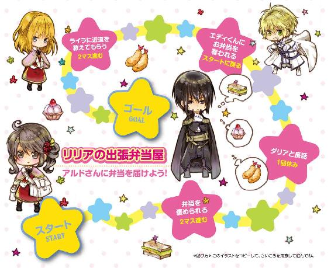
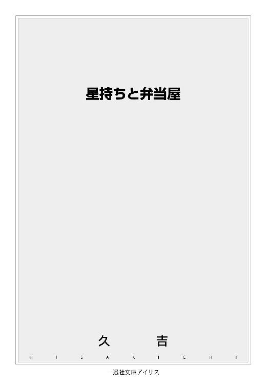
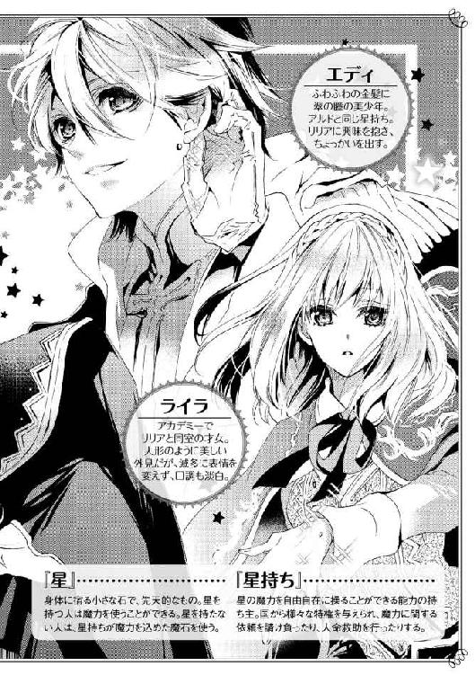
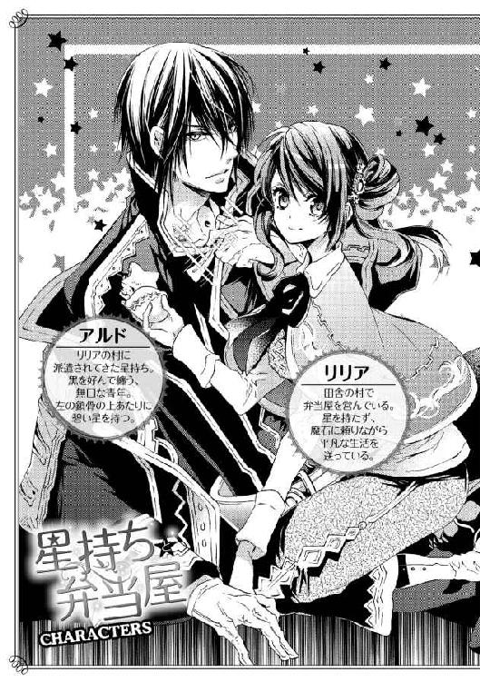
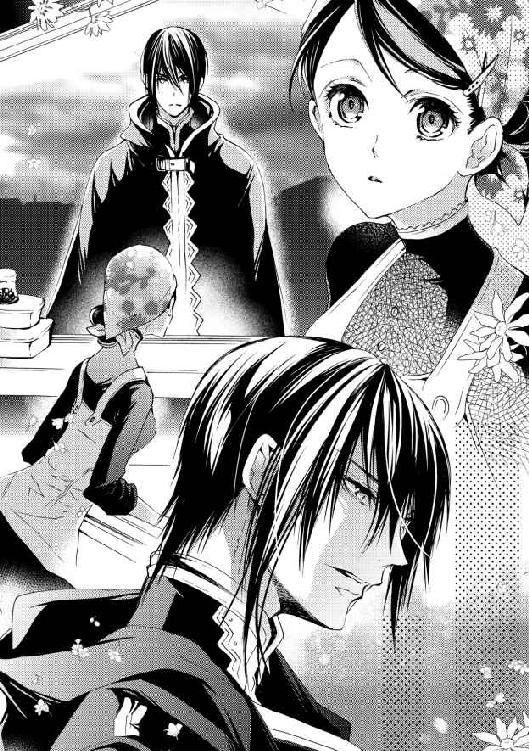
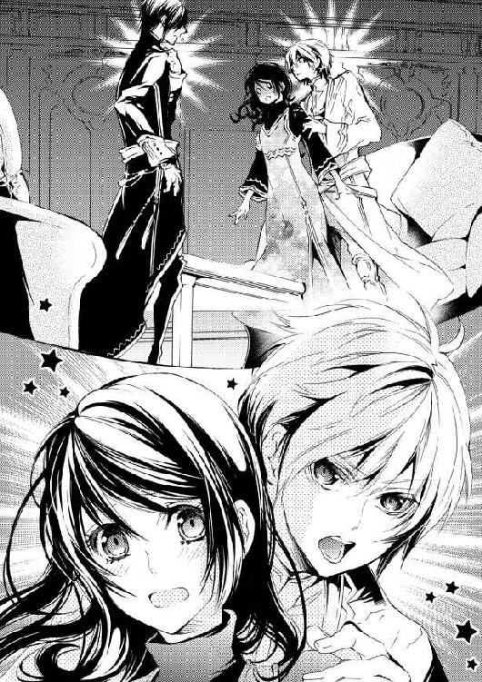
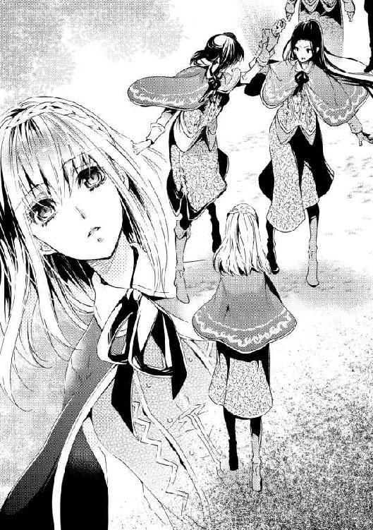
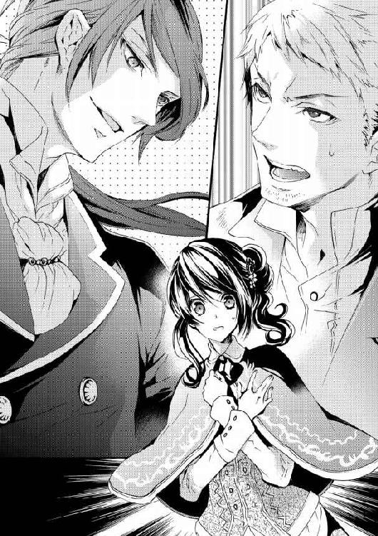
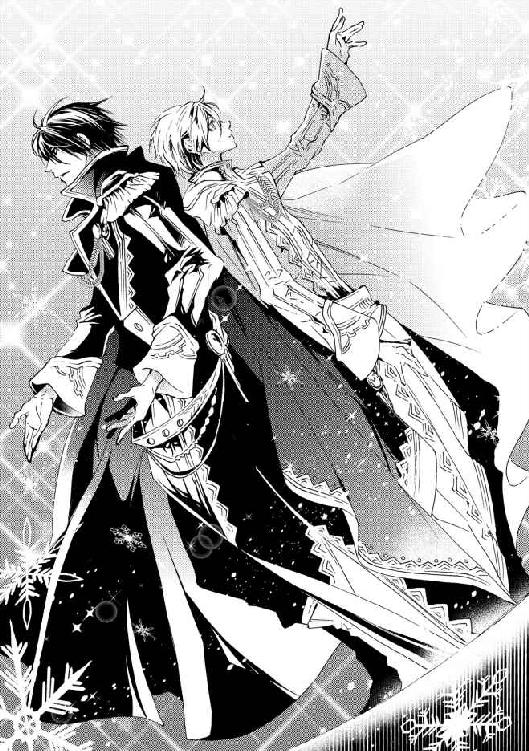
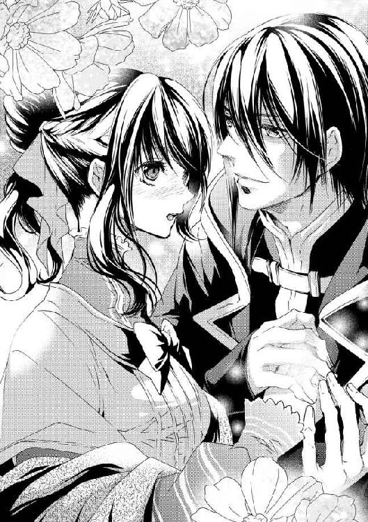

| 星持ちと弁当屋: 1 (一迅社文庫アイリス) | |
| 久吉 | |
| (2014) | |




イラストレーション ◆ すがはら 竜
星持ちと弁当屋
村の鐘が朝を告げるよりも幾分早く、私は目を覚ます。
朝夕には霜が降りるようになった近頃では、温まった布団から出るのは正直億劫だ。
「うぁ〜......。今日は一段と寒い」
頭まで布団を被ったまま、もそもそと寝間着を脱ぎ、布団の中で温めておいたワンピースを被る。
行儀が悪いのは、仕方がない。寒いもん。
すぐにかじかんできた手をこすりあわせながら台所へ行き、火石を鍋の下に放り込む。
横目で鍋を見ながら、伸ばしっぱなしの髪をくるくるまとめて結び、顔を洗ったら身支度は終了。
ほどなくコトコトと鍋が音をたて始めた。
まだぼんやりしている頭をふりつつ、カウンターに貼り付けたメモを見る。
「えーと......今日はエイダさんとこの弁当が四つ......トムさんとジオのお昼か」
トムさんとジオのお昼ごはんは昼の鐘までに届ければいいから、後回し。明けの鐘が鳴る前にエイダさんのところに行かなければならない。
昨日寝る前に用意しておいたおかずを貯蔵庫から取り出して、エイダさんから預かった弁当箱に詰める。見た目も大事だから、急ぎつつも丁寧に隙間ができないよう、しっかり詰め込んだ。温めたスープを火石が入ったポットに注げば配達の準備が完了。
手早く弁当箱を籠に入れ、慎重かつ早足でエイダさんの宿に向かった。
エイダさんは村唯一の宿を営む女将さんだ。
恰幅がよく、いつもほがらかで面倒見も抜群。村の皆から「エイダ母さん」と慕われている。そんなエイダさんの心配りがとても行き届いているため、宿の評判は上々らしい。
私が依頼された弁当もその一つ。
朝早くに出発する客はゆっくり朝食をとる暇がない場合が多い。そのため、出発する際に「朝ごはんにでも」と弁当を渡すのだ。
エイダさんの宿に泊まる客は大抵が村の鉱山へ入る人たちなので、いつでも食べられる弁当は喜ばれるそうだ。
うちから徒歩でぴったり百二十歩。
うっすら白く濁る息を吐きながら、宿の裏口へまわり扉を叩く。
「おはようございます。弁当届けにきました」
まだ早朝のためそっと控えめな声で呼びかけたが、すぐにエイダさんが顔を出した。
「おはよう、リリア。今日の弁当はなんだい？」
「今日は、芋と海老を練って特製ソースで焼いたのと、野菜の酢漬け、卵焼き、豆のスープ」
籠とポットを渡しながら弁当の中身を答えると、エイダさんはにっこり笑った。
「いいねぇ！ あんたの特製ソースはうちのパンにぴったりだからね」
「ふふ。それにしても昨日はお客さんが多かったんですね」
いつも届ける弁当は大抵が一つか二つ。四つというのは珍しいなと思い、聞いてみる。
ああ、とエイダさんは眉を下げた。
「あたしも詳しいことは知らないがね、なんでも鉱山の新しい階層で魔力の磁場が見つかったんだってさ。下手に触るのは危ないってことで、星持ち様を呼んだらしいよ。泊まってるお客さんは関係者だろうね」
「えぇっ！ 星持ち様？」
つい声が大きくなる。
星持ちといえば、エリート中のエリート。魔力を自在に操り、たくさんの恩恵を私たち一般人に与えてくれる、雲の上の存在だ。
例えば私が毎日お世話になっている火石。これは星持ちが魔力を込めて魔石屋に破格で卸しているため、一般人の私でも気軽に扱える。他にも用心棒のようなことをしたり、災害時には人命救助もするらしい。
命の危険も多い分、与えられるものも多いと聞く。
ある程度の町に行けば、星持ちは無料で泊まることができる宿があり、食事もついてくる。
一般人は買えない希少な魔石を破格で買えたり、立ち入り禁止区域に入れたりする。名実ともに特権階級なのだ。
「なんだい、リリアもいい年して星持ち様に憧れてんのかい？」
急に興奮しだした私を見て、エイダさんが怪訝そうに聞いてきた。星持ちは子どもたちの憧れの職業なので、私もそうだと思われたのだろう。
まさか、と苦笑しつつ手を顔の前で振る。
「えー？ 憧れなんてないですよ。命の危険なんてまっぴらだし、第一、私星がないですもん」
「おや、そうなのかい？ 珍しいね。弁当屋なんてやってるのに」
エイダさんはただでさえ大きい目をちょっと見開いている。
無理もない。星がないということは、ただそれだけで国に保護される脆弱な存在だということなのだ。
星がないことを知られたとしても、特に不都合はないから隠す必要はない。だが妙な詮索をされたり同情されたりと面倒なことも多いので、あえて言わないことにしている。エイダさんがそういう人ではないとよくわかってはいるけど、わざわざ話すことでもないし。
「星持ち様のおかげでたっぷり魔石が使えるんで、大丈夫ですよ」
なるべく、何でもないことのように聞こえるよう笑っておく。
『星』は身体のどこかに宿る小指の爪の先ほどの小さな石。
星は先天的なものだ。
持っている星を磨いてより大きな魔力を扱えるようになれば、星持ちと呼ばれるようになる。
この世界のほとんどの人には星がある。生まれる赤ん坊の星を探すのが助産師の仕事の一つと言われるほどだ。でも星持ちと呼ばれるのは、その中のほんの一握り。
もともとの才能に加え、研鑽を重ねて星持ちになるのだ。
基本的に星を持っている人ばかりなので、世の中のものは魔力で保たれている。能力に差はあるが、星があれば煮炊きはできるし灯りもともせるし、最低限の生活には困らない。
もっとも、生活のすべてを賄える魔力となるともう星持ちレベルなので、一般人は魔石を補助に使う。
星がない私は、星持ちが魔力を込めた魔石に全面的に頼るしかない。煮炊きをするための火石、水を浄化する水石、暗くなれば光石がいる。
生きているだけでお金がかかって仕方がない。
ただ、星持ちを優遇するこの国は星なしにも優しいため、私は星がある人よりもはるかに安く魔石を買うことができる。
おかげで何とか弁当屋を続けていくことができている。
そんなわけで、私は日々星持ち様には感謝しているのだ。
＊
弁当四つ分の代金と、「おまけだよ」とエイダさんにもらったパンを受け取り、急いで帰宅する。
先ほど明けの鐘が鳴ったので、あちこちの家で煮炊きの煙が上がり始めた。早起きの鉱夫さんたちはそろそろ弁当を求めてやってくるだろう。常備のおかずだけでは心もとないし、あと何品かは作っておきたいな。
時間がかかる骨付き肉の煮込みを火にかけながら、葉物野菜と根菜を素揚げにする。
うちの特製ソースは万能だから、素揚げにした野菜にかけるだけで立派な一品だ。一見手抜きに見えるが、ソース自体は半日以上仕込みにかかっているため、評判はなかなかなのだ。
卵を薄く焼いてのばし、細切りの野菜を巻いた頃には、鉱山に入る人たちが弁当を求めてやってきた。
「おはよう、リリア」
「おはようございます。いらっしゃいませ。今日も寒いですね」
弁当を買うついでに、お客さんはちょこちょこ話をしていく。
ほとんどの人の話が、磁場を解消しにきている星持ちの話だった。
磁場は魔力の吹き溜まり。うまく分散させれば問題ないし、魔石へ封じ込められればもうけものだ。
ただ、一般の人では分散させるのも簡単にはいかないし、魔石への封じ込めはいちかばちかくらいの確率でしか成功しない。
そのため、魔石の鉱山に限らず磁場が見つかった場合には、星持ちを呼ぶのが定番らしい。
身近に磁場なんてあったことがないから、知らなかった。
「いや〜、星持ちは星持ちでも、あんなすげぇの初めて見たよ」
肉を主役とした『がっつり弁当』を注文しながら、ロットさんが興奮気味に言う。おかずを詰める手は止めずに、興味はあるので耳はしっかり傾ける。
「すげえって何がですか？」
「俺も詳しくは知らないんだけどよ、星持ちの中にも等級があるんだってよ。今回来た星持ち様は一等だってよ。星がさ、こう、ビカーッと光っててブワーッと魔力も操って、さすが一等！ って感じ」
全然言いたいことはわからないが、ロットさんがいたく興奮しているのはわかった。気の良い中年のおじさん鉱夫であるロットさんだが、説明能力には乏しい。
これ以上突っ込んでも有益な情報は得られなさそうなので、それはすごいですね、と苦笑気味に返しておいた。
朝の客足がようやく落ち着き遅い朝食を済ませた頃には、昼の鐘まであとわずかだった。
「ん、まずい」
トムさんは時間に遅れて文句を言うような人ではないが、約束は守りたい。急いで籠に魚や野菜を詰めて、カウンターには留守中の看板を出した。
エイダさんの宿とは逆の方向へ二百歩行けば、トムさんの家だ。
トムさんは息子のジオと二人で、村の修理工場を営んでいる。小さなランプから煙突の不具合まで何でも請け負う工場で、先日私も水を汲み上げるポンプを修理してもらったところだ。
「こんにちはー。お昼持ってきたよー」
呼び鈴を鳴らすと、油にまみれたジオがすっとんできた。
急ぎすぎてあちこちに脚をぶつけているが、痣にならないだろうか。
明るい栗色の髪と瞳のジオは十九歳。わりと整った優しい顔立ちをしていて、村では一番のいい男といっても間違いではない。
だが、悲しいことに彼の中身が外見を台無しにしているため、成人を迎え婚期が迫ってきている今も浮いた話は一つも聞かない。
よく言えば屈託のない優しい人、悪く言えば優柔不断で頼りない。ひょろりと細い身体もそう思わせる要因の一つなのかもしれない。
「リリアのお昼、久しぶりだからうれしいな」
ジオがへにゃっと笑いながら、台所兼リビングに招き入れてくれる。
扉を大きめに開いている腕は力仕事をしているはずなのに、細くて白い。
「ジオはもっと食べて筋肉つけないと。婚期逃すよ」
じろじろとたおやかな腕をながめながら言うと、なぜかジオは頬を染めてもじもじしだす。
「あ、あんまり見ないでよ。恥ずかしいよ」
「人を痴女みたいに言わないでくれるかな」
私よりよほど乙女らしいジオ。もう少し筋肉と自信がついたらすぐに嫁が来るだろうに。
痴女だなんて、と慌てるジオを尻目に、私は仕事を再開した。
『弁当』ではなく、『ごはん』を注文してくれたトムさん親子のために、借りた鍋にスープを移し替え温め始める。
下ごしらえを済ませて持ってきた野菜を魚の切り身とともに炒めて、とろみのあるソースをたっぷりかける。
鍋の蓋の上で温めたパンとともに食卓に並べたら完成だ。
「いらっしゃい、リリアちゃん。いつもありがとう」
私の訪問に気づいたトムさんが作業場から顔を出す。
八年ほど前に奥さんを亡くしたトムさんは、仕事の傍ら家事に育児に頑張っていたが、ここ数年めっきりやる気がなくなってしまったそうだ。ジオに手がかからなくなって気が抜けたというのもあるかもしれない。
そこで、よく利用してくれるのがうちの店の『ごはん』だ。うちの弁当や持ち帰りのおかずは、日持ちのする、冷めてもおいしいものがメインになる。
一方、『ごはん』は出張サービスを含んでいる。相手のおうちや職場に出向いて温かいあまり日持ちのしない料理を出すところまでが商品なのだ。
私が一人でやっている店なので、『ごはん』を受けられる件数は限られているが、評判はなかなか良い。病気の人や、トムさんみたいなやもめの人には、多少割高でも家に温かいごはんを作りに来てもらえるのはありがたいそうだ。
「リリアちゃんのごはんは奥さんの味を思い出すんだよね」
「えへへ。光栄です。毎度ありがとうございます。じゃあ......」
「あっ、リリア！」
頭を下げ、代金を受け取って帰ろうとすると、ジオに慌てて呼び止められる。
何？ と目線で問いかけると、ジオはぐっ、と息を飲んだ。不審に思いながら待っていると、みるみる赤くなる。どうしたのだろう。熱でもあるの？
あー、とか、うーとか唸り声をしばらくあげたあと、蚊の鳴くような声で「なんでもない」と言ったジオは、そのまま座り食事を始めてしまった。
トムさんはそんなジオをながめ、深々とため息をついた。
変なジオ。まあ、いつものことだけど。
店に戻り、怒涛の昼の時間を乗り切ってから、お茶休憩をしていたときのことだ。
ふと、店の前に黒いローブの背の高い男性が立っているのに気づいた。
銀糸で刺繍を入れた詰め襟の黒い服に同系色のローブ。髪は漆黒。青みがかった灰色の瞳は切れ長。通った鼻筋といい、薄く整った唇といい、文句なしの美形だ。
目の保養、とこっそり見ていると、おもむろに男性が近寄ってきた。
あ、見ているのに気づかれた？

内心の焦りを抑え、男性を見上げながら営業用の笑顔を浮かべる。
近くで見ると見た目の麗しさだけでなく、着ているものから随分身分が高そうな人だということがわかる。不躾に見るな、と怒られるかとびくびくしていると、店のカウンターで男性は足をとめた。
「弁当をくれないか」
低いが、はっきりとことばが落とされた。感情の読めない平坦な声。
「かしこまりました。何か苦手な食べ物や好みの食べ物はありますか？」
平常心、平常心と思いながら笑顔で尋ねる。あまり感じが良くないとしても、大切なお客様だ。それに、滅多にお目にかかれない美形なのだから、堂々と堪能しておこう。
特にはない、と首を振る男性に、ではこちらをどうぞ、と今日のおすすめを詰めた弁当を渡す。
頷きながら弁当を受け取り、男性が出してきたのは大金貨だった。
内心うえっと思う。うちのような小さな店で出す硬貨ではない。今はたまたまおつりがあるが、場合によってはないことも多いのだ。
おつりを素早く数え男性に手渡したとき、急に指先にピリッという痛みが走り、硬貨を取り落としてしまう。
「あっ、すみません！」
男性も痛かったようで、驚いた顔で掌をながめている。
「乾燥してるんでしょうかね？ 最近よくなるんです」
言いながらカウンターを回り込み、散らばってしまったお金を拾いに行く。
私が動いたことで男性もかがみ込み足元のお金を拾い始めた。
「本当に失礼しました。お買い上げありがとうございます」
最後の銀貨を男性が拾うのを確認し、顔をあげたところ、男性の襟元で何かが光った。
何が、と目を凝らしてみて、その正体に気づき息を飲む。
かがんでいるせいで見えた左鎖骨の上あたり。そこに、今まで見たこともないほど輝く碧い星があった。
星の輝きは魔力の強さと比例する。村一番の星自慢の星を見たことがあるが、比べるまでもないほどだ。
「......星持ち様......？」
呆然とつぶやいたことばは、背を向けた男性には届かず、くつくつと煮える鍋の中へ消えていった。
＊
あれから、星持ちの男性は一日も欠かさず弁当を買いにくる。
早朝来て二つ買っていく日もあれば、閉店ぎりぎりに残り物の弁当を買っていく日もある。
おつりがないようにぴったり支払ってくれることも増えた。
二日目くらいまでは星持ちオーラに挙動不審だった私だが、毎日見ているうちに慣れてしまった。
今では他の常連さんと変わらない気安さで話しかけられる。まあ、口数が少ないのか無愛想なのか、返事は「ああ」とか「いや」とかそんなのばかりだけど。
「ふーん。毎日来てんの」
「うん。......ダリア、いいの？ 結構混んでるけど」
言いながら見渡せば、宿の一階にあるダリアの酒場はほとんど満席。陽気な鉱夫さんたちの笑い声があちこちから上がり、賑やかだ。のんびりしている暇はなさそうだけど。
「大丈夫よぉ。もう落ち着いたから」
頬杖をついて笑う姿は、絵に描いてもきっと飛ぶように売れるだろう。濃い赤茶の髪に、碧眼。見慣れたはずの私もうっかりよろめきそうになる美貌。母であるエイダさんにはまったく似ていないが、噂によれば昔はエイダさんも近隣の街や村に知られるほどの美女だったそうだ。
彼女が数年前に成人して酒場を始めた当時は、店の外にまで客があふれるほどの盛況ぶりだったのも無理はない。私もそれまで成人した友人がいなかったのでもっぱら家で飲むだけだったのが、こうしてダリアと話しながら飲むのが貴重な息抜きになっている。とても居心地の良い場所だ。
それでも私は早朝から働かないといけないので、酒場にいるのはちょうどダリアが忙しい時間帯だ。彼女とゆっくり話せるのは一週間ぶりだった。自然、新しい話題となれば例の星持ちの話になる。
ダリアが持ってきてくれた、柔らかく煮込んだ肉とナッツを頬張りながら頷く。
口の中いっぱいに広がる肉汁に、どうしようもなく頬がゆるむ。やっぱり誰かの作ったごはんは美味しい。自分で作ると好みの味にはできるけど、味見もするせいか感動が薄いものだ。
ふとダリアがカップをテーブルに置き、身を乗り出して囁いた。
「アルド、二十八歳」
「へ？」
ぽかんとして聞き返すと、その星持ち様の名前よぉ、とにやにやするダリア。
「え？ 何で知って......って、宿の帳簿見たのか」
「せいかーい。リリアの恋を応援してあげようと思ってぇ。内緒よ？」
首を傾げて言ったダリアに、隣のテーブルのおじさんが鼻の下を伸ばす。こんな小さな動きで、なんて高い殺傷力。
「ああ、いや、しか言わない男とどうやって恋が始まるの」
苦笑とともに息を吐き、ワインを一口飲む。
確かに美形は大好きだし素敵だなとは思う。だが、それ以上には思えない。どんな人なのか、何を考えているのか全然見えないから。
「えぇ〜。でもあれだけのいい男なかなかいないわよぉ。口煩い男よりよっぽどいいわよ」
「口煩いのは嫌だけどね。何考えてるかわかんないような人はもっと嫌だな」
ワインの入ったカップを傾けながら、例の星持ち様の顔を思い浮かべる。
「そんなこと言ってぇ。せっかく顔馴染みになったんだから頑張んなさいよ。星持ち様なんて玉の輿よ！」
大好物はお金、と言って憚らないダリアは頬をふくらませる。
「いいんですー。私は平凡な今の生活が幸せなんです！」
私も同じように頬をふくらませる。
今日より明日がより良い日であってほしい、という思いはある。それでも手元の小さな喜びを大切にしていければそれでいいのだ。あれこれダリアとくだらない話をしながら、大好きなワインと美味しい料理を楽しむ。そんな幸せが、私にはちょうどいい。
婆くさいわね、と顔をしかめるダリアには、思い切り舌を出しておいた。
＊
星持ちの男性が初めて来店してから、ちょうど八日目。
閉店ぎりぎりにやってきた彼は弁当を買い、一つ頼みごとをしていった。
これから鉱山に入らなければならないため、明日は弁当を買いにくることができない。可能なら、昼の鐘の頃に鉱山の入り口まで弁当を届けてもらえないか、と。
こんなに長く話すのを初めて聞いたと妙に感心しつつ、にっこり答える。
「いいですよ。その時間ならちょうど手もあいてますから」
鉱山で『ごはん』の出張はありえないが、弁当を持って行くくらいよくあることだ。
魔石鉱山は下へ下へと階層を下りるたび、危険が多くなるらしい。だが、人がよく出入りする一階層ならまず危険はない。子どもが遊びに行くこともあるし、家族が食事を届けることもある。
実際私も先ほどロットさんに肉弁当を持って行ったばかりだ。
どうせなら、明日届けるついでにいくつか余分に弁当を持っていって、小腹がすいた鉱夫さんに売りつけよう。
「入り口の鉱夫に、アルドに頼まれたと言えば取り次いでくれるようにしておく」
「はい。わかりました」
あなたの名前は知っていましたよ、とはおくびにも出さず頷き、アルドさんを見送った。
翌日、鉱山へ行くと入り口に立っていたのはロットさんだった。
「よお！ アルドの旦那から聞いてるよ」
私が口を開く前にロットさんが話しかけてくる。
「アルドの旦那、毎日リリアんとこに通ってるんだってな！ 惚れられたか？」
え？ どうなんだ？ とロットさんは肘で小突いてきながらにやにやする。
小さい村に現れた美形のエリート様はたくさんの村人に注目されている。毎日うちに通っているのも噂になっているのだろう。
弁当を買いもしないのに、店の近くを若い娘が徘徊しているのもそのせいに違いない。
「単に、鉱山に持って行きやすい弁当作ってるのがうちだったってだけですよ」
なるべく嫌そうに見えるよう鼻に皺を寄せながら言う。
恋仲だと思われて妬まれるのは正直勘弁してほしい。どこの世界も女の嫉妬は怖いものだ。
「へえへえ。そうかねぇ。まぁいいけどよ。アルドの旦那は一階層の階段あたりにいると思うよ」
にやにや笑いは引っ込めずにロットさんが教えてくれる。
あんまりからかってくるようなら、今度こっそり激辛弁当にしてやる。それか肉の下にロットさんの苦手な野菜をぎっしり詰めてやろう。
半泣きになるロットさんを妄想して溜飲を下げつつ、一階層の階段へ向かう。ほどなく、階段に座り魔石を確かめているアルドさんを見つけた。
声をかけようと足を踏み出したとき、遠くの方で雷のような音がした。あれ、今日は快晴だったけどな、と首を傾げていると、すごい形相でアルドさんがこちらへ走ってくる。
「伏せろ！」
「えっ、なっ......」
――ドッ......！ ガガガガ......！
耳をつんざく聞いたこともないような音。立っていられないくらいの振動に思わず膝をつく。 とっさに頭を庇おうとするが、バランスを崩して肩から地面に叩きつけられた。
無数の雷が落ちたかのように、ガラガラと激しい音をたてて地面が崩れる。
落ちる......！
ひゅっ、と内臓が浮く感じがしたところで、私は意識を手放した。
＊
耐え難い息苦しさと吐き気に襲われて、ハッと目を開ける。
長く水の中を泳いだあとのような気怠さが全身にまとわりついている。こみ上げる吐き気を抑えながら周囲を見渡してみるが、暗くて何も見えない。
「目が覚めたか」
よく通る低い声に首を巡らせると、すぐ傍らにうすぼんやりとアルドさんが見えた。
襟元で星がほのかに光っている。それだけでどこか安心できるような柔らかい光だった。
「あの......なにが......」
頭を起こすと貧血のときのようにふわっとしたので、できる限りのろのろと身体を動かす。
「出血量が多かった。目眩や吐き気があるだろう」
アルドさんの視線の先には黒い水溜まりがあった。ほのかに、鉄の臭いがするということは。
「えっ、これ私の血!?」
一体どこに、と慌てて身体中をぺたぺたと触る。脚がぬるぬるするため、慎重に指を滑らせるが、皮膚の凸凹も特にないし、痛みもない。
「傷はふさいだ。だが、流れ出た血液は私では戻せない」
医療師ではないから、とアルドさんが少し眉を下げる。
星持ちにも得意分野はそれぞれあって、怪我の治療や病気の快癒を得意とする星持ちを医療師と呼ぶそうだ。
アルドさんは得意ではないものの、傷をふさぐ程度なら何とかできるということだった。
「えっと......ありがとうございます」
アルドさんの話を聞いている間に、吐き気と目眩が少しずつおさまってきた。どのくらいの傷だったかはわからないが、出血したままだと命がなかっただろう。
「美味しいごはんを食べれば、血なんてすぐできます。命を助けてくださってありがとうございます」
いつも彼に向けている営業用の笑顔ではなく、自然に笑みがこぼれた。
私たちは、どうやら崩落事故に巻き込まれたらしい。
『ごはん』サービスの常連であるマイスじいさんが以前教えてくれたことがある。四十年ほど前にもこの鉱山で崩落事故があったらしい。その事故でマイスじいさんは片腕を失った。
『腹に響く音がしたら、すぐに逃げるんだよ』
ぺたんこの袖口をさすりながら、マイスじいさんはよく言っていた。
さっき私が聞いた雷のような音。あれは崩落の音だったのか。
閉じ込められた、という不安がないわけではない。だが、アルドさんに動揺した様子はないし、何と言っても星持ちだ。
災害時には人命救助もするという星持ちなのだから、きっと解決してくれるだろうという期待がある。
アルドさんを見ると、私の顔を見て逡巡したのち、口を開いた。
「弁当はあるか」
「は？」
あ、しまった。
こういうときは『え？』とか『もう一度よろしいですか？』だ。弁当屋を始めたときに練習したのに。
「弁当......ありますけど」
崩落に巻き込まれても、肩から斜めにかけていた鞄はなくならなかった。多少おかずは混ざっているかもしれないけど、ぎっちり詰めてあるからそんなにひどいことにはなっていないはず。
というか、この状況で食べるのか？
思わずまじまじとアルドさんを見つめてしまう。
「魔力は基本、睡眠で回復する。時間がないときは食事で補う」
私の眼差しに含まれるものに気づいたのか、いつもより二割増無愛想にアルドさんが教えてくれる。
そういうものなのかと感心しながら鞄から弁当を出した。蓋もしっかり閉まっているし汁もれもない。
弁当と手拭きを渡してから、ポットのお茶を用意する。食べているところをじっと見るのはお互い気まずいだろうし。
私がゆっくりお茶を淹れている間に、きれいな所作でアルドさんは弁当を完食した。
残さず食べてもらえるのは嬉しいが、目の前で弁当を食べられるのは結構緊張する。
私は基本、お客さんに味の感想は聞かないことにしている。お客さんの方から言ってもらえる感想はありがたく受けとるし、悪い評価も謙虚に受け止める。
でも、自分から聞いてしまうと本当の評価は得られない気がするのだ。どうでした、と聞かれれば、気を遣って本音を控えてしまうのが人というものだろう。
アルドさんはわかるようには表現してくれないが、まずいと思っていたら毎日買いに来ないだろう。それなりに気に入ってくれていると信じたい。
私がもやもやしているうちに弁当の空き容器を手早くまとめ、アルドさんが目礼した。
ごちそうさまってことかな。お粗末さまでした。
「崩落が起きたとき、一階層にいたのは私たちだけだ。鉱夫は昼の休憩をとりに出ていたはずだ」
アルドさんのことばに頷く。確かに入り口でロットさんに会ってからは誰も見かけていない。
「じゃあ巻き込まれたのは私たちだけですね」
少しほっとする。
星持ち様と一緒にいたおかげで私は助かったけど、顔馴染みの鉱夫さんが無事じゃなかった、なんてだいぶ嫌だ。
ところがアルドさんは首を振る。
「二階層に星持ちと従者二名がいたはずだ」
「星持ち様って......アルドさんだけじゃないんですか？」
しかも従者って何だろう。お付きの人みたいなものだろうか。
「今回見つかった磁場が大きかったため、星持ちは私とヴィクトールという男が派遣された。同じ宿に泊まっていた」
そこまで言われて、はたと気づく。エイダさんの宿に届けた弁当は四つ。
一つはアルドさん、残りの三つがヴィクトールという人と従者さん二人、ってことなのだろう。
「ヴィクトールは自力で出られるだろうが、従者は難しいだろう。助けに行く」
言いながらアルドさんが立ち上がる。
襟元の星が先ほどまでとは比べ物にならないくらい光を放っている。魔力を練り上げている証だ。
アルドさんが目の前の岩肌にそっと手をかざすと、ゆっくりと岩が動く。
まばたきをしているうち、一つ、また一つ。
「わっ、わっ」
私の足の下の岩が急に動き、慌てて足をどける。途端にくらっと目眩がしてよろけてしまった。
「元あった形に戻るよう、土と水を動かしている。不安定ならつかまるといい」
よろけた私をちらりと見て、アルドさんは作業を再開する。
つかまる先を迷った末、ありがたくローブの裾をつかませてもらう。ここなら作業の邪魔にはならないだろう。
手の中の生地は、しっかりしてるのに軽い。手触りはなめらかなのに、ぎゅっと握っても皺にならない。さぞ高級な糸で織ってあるのだろう。
私がローブの値段を予想しながら裾をにぎにぎしている間にも、アルドさんは歩き進めながらどんどん鉱道を戻していく。
そのまま、どのくらい進んだだろうか。ふとアルドさんが足を止めた。
どうしたのか、と聞こうとすると、無言で制された。視線の先には大きな岩。その向こうからかすかに誰かが話す声がしているのだ。
アルドさんを見ると、軽く頷く。
「この向こうにいるようだ」
言いながら、目の前の岩に触れる。
なんでもないことのように岩へ魔力を這わせるアルドさんだが、さすがに疲労がたまってきているのだろう。
岩を動かす速さが少しずつ落ちてきている気がする。表情にはあまり出ていないが、うっすらと額にも汗が浮かんでいた。
ズズッ......と鈍い音を立てながら、ゆっくりと岩が動くことで、かすかだった話し声がはっきりと聞こえるようになった。
「ヴィクトール様......っ、このままでは......」
「うるさい！」
ようやくできた細い通路にアルドさんが立っているため、前がよく見えない。
――誰かが言い争っている？
「ヴィクトール」
「......！」
アルドさんが声をかけると、びくり、と赤毛の男性がこちらを振り向く。
身なりがよく、立っているだけで絵になるような若い男性だが、そこに浮かんだ表情が醜悪だった。苛立ちや怒りが今にも噴き出してきそうな形相だ。
「アルド様......助けて下さい！」
ヴィクトールさんと言い争っていた男性が、声を上げた。
見れば、男性の足元にはもう一人男性が横たわっている。この二人が従者さんなのだろうか。
アルドさんが二人の男性に近づくので、私もついていく。
「こいつを助けて下さい！」
アルドさんのローブにすがりつく男性も、額から出血していた。流れる血の量は多いが、わりと元気そうだ。頭は小さい怪我でもたくさん出血するというから、見た目ほど大したことないのかもしれない。
こいつ、と言われた男性へ目線を落とした私は息を飲んだ。
横たわる男性の四肢はあらぬ方向へ投げ出され、うっすら白いものがのぞいていた。
腹部からは、拍動にあわせてか真っ黒な染みがどんどん滲み出してきている。
医療の知識がない私にでもわかる。どう考えても、たとえここに医療師がいても――助からない。
「ヴィクトール、彼の額の傷をふさげ」
聞こえた声に身動ぎしたのは、私だったのかヴィクトールさんだったのか。
言いながらアルドさんは跪き、倒れた男性の腹部に魔力を送り込み始める。
「......」
ヴィクトールさんは答えない。
倒れた男性の治療にあたるアルドさんを睨んだままだ。
「傷は小さいが出血が多い。早く......」
「なぜ俺がやらねばならない？」
再度、指示を口にしかけたアルドさんを遮り、ヴィクトールさんが唸る。
「そいつらは星持ちになれない、役立たずの従者だ。自分の身も守れないような従者は死ねばいい」
ぎらぎらと嫌な光を浮かべる瞳。皮肉気に上がった唇。
「魔力はここを脱出できるまで温存しておきたい。使い道は選ばせてもらう」
医療師じゃないしな、とヴィクトールさんは吐き捨てた。
医療師ではないために血を戻せないことを詫びてくれたアルドさん。
今も明らかな疲労の色を浮かべて必死に治療してくれている。
魔力を温存することを考えるなら、治療しないのが正解だ。
だが、そんな言い方があるだろうか。今使うことができる力を持っていて、使わないと平然と言い切れるなんて。
「私、アルドさんと崩落に巻き込まれて良かった」
鞄からハンカチを出しながら、思った以上に尖った声が出てしまう。
「アルドさんは魔力の温存なんて言わずに、私の傷をふさいでくれました。ここに来たのも、従者の方を心配してのことです」
やや力を込めて男性の額の傷にハンカチをあてる。
傷自体は小さいから、すぐ止まるだろう。
「私は、星持ち様ってアルドさんみたいに当たり前に人を助ける人だと思ってました。それは勝手な思い込みだったんでしょうけど」
ゆっくりとヴィクトールを睨みつける。
これは、星持ち云々の問題じゃない。
「せめて、人として恥じない行動をすべきじゃないですか」
――怒りに任せて言い過ぎた、と思ったときには遅かった。
「こ、の......っ！ 一般庶民が偉そうに......！」
怒りで顔を染めたヴィクトールさんに襟首を力強く引かれ、そのまま後ろに突き飛ばされる。
「......いったぁ！」
とっさに手をつこうとするが、尻もちをついてしまう。
慌てて身を起こすと、そのまま胸ぐらをつかまれて立たされる。
より一層醜悪な顔に、血走った瞳が光る。
恐怖と嫌悪でどくどくと破れそうに心臓が鳴った。
でも謝るような真似はするものか。いくら星持ちでも、人の命をあんな風に軽々しく扱っていいわけがない。
つかまれた胸ぐらを振りほどこうともがいていると、急に身体が浮いた。
「やめろ」
目の前いっぱいに広がった暗闇。
何が、と思う前に鼻をくすぐる香り。最近かぎなれた、淡い甘い匂い。
「アルドさん......？」
どうやらがっちりローブで包まれているようで、振り返ることもできない。背中にはぬくもりを感じる。
「え...」
抱きしめられている、と自覚すると同時に、カッと頬が熱くなった。慌てて抜け出ようとするが、アルドさんの腕は全くゆるまない。
それどころか、動くな、と耳元で低く囁いてきた。
「......ひっ」
囁き声が凶器になるとは生まれて初めて知った。ことばの内容じゃなく、こんなことをされて動けるわけがない。
「星持ちによる一般市民への暴行は重罪だ」
ローブの闇の中に、アルドさんの声が響く。
ぴったりと身体がくっついているせいか、びりびりと深いところを伝わってくる感じがする。
「この三人は私が地上に連れていく。反論は許さない」
厳しく凍てつくような声。なのに、その腕は温かい。
相反するそれに、途方もなく守られている安心感を与えられて、いつの間にか涙がこぼれていた。
鉱山の入り口には、鉱夫以外にもたくさんの村の人が集まっていた。幸運にも村の近くにいた医療師ももうすぐ到着するという。
アルドさんにより腹部の傷はふさがれた従者さんだが、意識は戻っていないし、顔色もひどいままだ。あとは医療師が間に合うことを祈ることしかできない。
「リリア！」
怪我の軽かった従者さんに肩を貸していた私に、ダリアが抱きついてきた。
「......よかった」
滅多に泣かない彼女の鼻声を聞いたら、私の鼻の奥もつんとする。
私が支えていた従者さんを受け取りながら、ロットさんが肩を叩いていった。目元が赤いのは、気づかない振りをしてあげよう。
口々に、無事を喜んでくれる村の人たち。
みんなの顔を見ているうちに、助かったんだという実感がじわじわとわいてきた。
この村に暮らしていて、よかった。
ダリアの肩口に顔を伏せ、少しだけ泣いた。
その日は、丈夫が取り柄の私もさすがにいつも通りとはいかず、そのまま店を閉めることになった。
重い身体にムチを入れつつのろのろとおかずを貯蔵庫にしまっていると、ダリアが手伝いにきてくれた。
「いいの？ 寝なくて」
ダリアの酒場は夕の鐘とともに開店する。
明け方から店を片付け、エイダさんの宿の掃除等を手伝ったあと夕方まで眠るのが彼女の生活だ。
崩落が起きたことを知ってすぐに鉱山へ来てくれたようだから、寝ていないだろう。
手伝ってくれることに礼を言いつつ聞くと、ダリアはムッとした顔をする。
「リリアがあんな目に遭ったのに、寝られるわけないじゃない」
つん、とそっぽを向いたダリアに、心配性なんだから、と苦笑がこぼれた。
「そういえば、ヴィクトールって星持ち、従者の人を置いて帰ったみたいよ」
「あぁ......」
やはりというか何というか。
あんなに怒っていて私にも馬鹿にされて、そのまま仕事の続きができるとは思えない。
「契約内容と違う、って村長は怒ってたんだけど、大体は磁場も解消したしあとは自分一人でも大丈夫だってアルドさんが取り成したそうよ」
こちらもある意味、やはりというか。星持ちとしての責任からの発言だろうが、どこまでできた人なのだろうと感心してしまう。
「それでね、アルドさんからリリアに伝言」
「？」
ことばを切って、ダリアはにやりと笑う。
え？ 何？
「明日は鉱山には行かないが、体調が良ければ弁当をくれないか、って」
弁当？
エイダさんの宿ではもちろん食事を出すだろう。夜になればダリアの酒場で食事もとれるのに？
首を傾げる私に、にやにや笑いを強めるダリア。
「リリアの弁当がいいんだって。胃袋つかんじゃったんじゃないのぉ」
「！」
まさか、とかぶりを振りながら、慌てて貯蔵庫の中をのぞく振りをする。振り向かなくてもダリアが笑っているのがわかった。
――それでも、ゆるむ頬はどうやっても隠せそうもなかった。
＊
崩落事故の翌日は、店を閉めることになった。
ダリアに反対されたというのもあるが、思った以上に長く立っていることがつらかったからだ。アルドさんに頼まれた弁当を作れなかったのが心残りだったが、中途半端なものを渡すのも気が引けた。詫びる伝言だけ、配達に来てくれた人に頼んでおいた。
昼までぐっすり眠り、簡単な朝食兼昼食をとり、また眠る。いくらでも寝られるのはやはり体力が落ちているからだろう。
夕の鐘の頃に、さすがにこのままでは明日働けない気がして、着替えてダリアの店へ行った。賑やかな店内では少し顔色の戻ったダリアがくるくると働いていた。
「もう少ししたら落ち着くから、食べて待ってて。今日はお酒飲んじゃだめよ」
大きな野菜がごろごろ浮かぶシチューを私のテーブルに置いて、ダリアが言い残していく。
正直、とっても飲みたい。
むぅ......とむくれながらシチューを口に運ぶ。優しいミルクの味と、野菜や肉から出た旨味がじんわりと胃にしみていった。
あぁ、美味しい。
下品にならない程度にせっせと匙を動かしていると、ダリアが果実水を持って隣に座ってきた。
「顔色はだいぶ良くなったわね。安心したわぁ」
「ダリアもね」
笑いあいながら、カップを軽く合わせる。
「今日はアルドさんもずっと部屋にいたみたいよ。何せ、弁当屋も閉まってるしねぇ」
にやにやと宿の方を見ながらダリアがからかう。
「......っ！」
アルドさんの名前を聞いて、がっちりした腕の感触とか、背中のぬくもりとか、甘い香りを思い出し、奇声をあげそうになる。
おかしいな、たかだかあれくらいでなんでこんなに動揺するんだ。
これはあれか、生命の危機にさらされたときのドキドキと混同しているのか。
ダリアは私が挙動不審なのはなぜなのか、とっくに察しがついているんだろう。
「磁場が解消したら、次の依頼に行くってこと忘れちゃだめよ」
ふと、笑みを消して囁いた。
「......知ってるよ、そんなの」
頭ではわかっていたはずのことを改めて指摘され、胸に嫌なものがひろがる。
アルドさんは星持ち様。磁場の解消がお仕事だから、これが終われば次の仕事へ行く。
私は彼の帰る家がどこにあるかも、知らない。
当たり前のこと、知っていたはずのこと。
なのになぜ、こんな。
ぐるぐると思考が空回りする。この気持ちに名前をつけたら、だめな気がする。
急に黙り込んだ私を見てダリアはそっと息を吐いた。顔をあげると、気遣わしげな瞳にぶつかる。
「きっと明日からも毎日来てくれるんだから、頑張んなさいよぉ」
わざとらしいくらい、にんまりと笑ってダリアは私の手を握ってくれた。
翌日からまた、アルドさんは弁当を買いに来てくれるようになった。
磁場の解消はどのくらい進んでいますか、どの街に住んでるんですか、恋人はいますか。
何度も尋ねようとし、それを聞いてどうすると慌てて打ち消すうち、今まで見えなかったものが少しずつ見えてきた。
まず、アルドさんは甘いものが好きだ。かぼちゃのミニパイを弁当につけた次の日に、パイはないのかと聞いてきた。裏から残りのパイを出してきたらちょっとだけ口角がゆるんでいた。
おすすめ弁当でいい、と言いながら、煮物は好きではないようで弁当に詰めると少しだけ眉が下がる。スパイスもあまり得意ではないようだ。
何日か、弁当を詰めながらアルドさんの表情をうかがうことですっかり好みが把握できた。
あと何回、私の弁当を食べてもらえるかわからない。
少しでも長く、少しでも美味しかったと思ってもらえたらいいのだけれど。
何とも言えない気持ちを抱えながら、今日も私はおかずを作り弁当を売っている。
今日のおすすめを見たら、アルドさんはどんな顔するかな？ とほんの少し想像しながら。
＊
アルドさんのおかげで、崩落した部分の修復はほどなく終了した。磁場の解消も時間の問題らしい。
弁当を買いに来る鉱夫さんが口々に教えてくれる。終わりの見通しを得て、皆うれしそうだ。
私は適当な相づちを打ちながら、その度に胸が重くなる。
......余計なことを考えないように、パン生地でもこねるか。
手が空くと終わりを想像してしまう。忙しく、忙しく。
私の小さな幸せに、こんな痛みはいらないのだ。
台所の作業台でパン生地をこね、バシバシと仇のように叩きつける。苛立ったり鬱憤がたまったときも、悲しいときも、この作業はうってつけだ。無心になれるし、汗をかけば少し気持ちが落ち着く。
「こんにちは」
声をかけられて、ハッと振り返る。
かなり集中してパン生地と戦っていたらしい。店頭に人が立っているのに気づかなかった。
「はい、いらっしゃいませ」
手を拭きながら振り返った私は、そのままの体勢で固まってしまう。
年の頃なら十五、六くらい。カウンターのところに、にこにこと人懐こい笑みを浮かべた少年がいた。
ふわふわの金髪。春の新芽を思わせるぱっちりとした翠の瞳。肌は白くなめらかで、触ったらさぞ気持ちが良いだろう。
声がしっかり男性のものなので間違うことはないが、黙っていれば美少女と言っても十分通るほどの愛らしさだ。
「ここ、お弁当屋さんだよね？」
大皿に盛られた常備のおかずを見ながら少年が尋ねる。
まさか、こんなきれいな子が、弁当？
いや、食べるだろうけど、育ちも随分良さそうなのに、違和感がある。
眉をひそめながら頷くと、少年はうれしそうに胸を撫で下ろした。
「よかったぁ、アルドが毎日お弁当屋さんに通ってるって聞いて探してたんだよね」
「アルドさんのお知り合いですか？」
「うん。僕も星持ちだから」
金色の髪を左耳にかけると、翠の星が耳の付け根に見えた。日の光を受けきらきらと光っている。
最近、だいぶ見慣れたとはいえ、星なしの私にとっては至上の宝石に見える。眩しくて仕方がない。
私が星を見たのを確認した少年は、蕾がほころぶような笑みを浮かべる。
「君にお願いがあるんだけどね。お弁当二つと、食べ終わるまでの時間を僕にくれないかな？」
時間をくれ？ どういうことだ。
私が怪訝な顔をするのに一層笑みを強める少年。
楽しくて仕方がない、という表情は燦然と輝き、目に痛いほどだ。こんな田舎の村では一生お目にかかることはなかったであろうから、耐性もない。
「お弁当を二つ買うから、一緒に食べようよ。アルドの話聞かせてよ」
少年の提案に、店もあるので無理です、と即座に断ろうとした。初対面の人とごはんなんて、とも言おうとした。だが、口を開くことを許されない空気が少年から放たれている。
あくまでも顔のパーツは笑顔を形作っているのに、笑っていないのだ。
少年の笑顔を見ていると嫌な汗がじわじわと出てくる。
口調こそお願いだが、星持ちの申し出を断れるはずがないということか。
「......」
「お弁当食べるなら景色がいいところがいいなー」
ね？ 君もそうでしょ？
天使も裸足で逃げ出す微笑みを浮かべて、少年は首を傾げた。
少年は黒い笑顔を少し引っ込めて、エディと名乗った。
「星持ちだから、とか気にしなくてもいいから」
そう言いながら、あれは嫌い、これは好きじゃない、と私が詰める弁当に注文をつけてきた。
好き嫌いすると背が伸びないよ！ と忠告しようとしてぐっと堪える。
私よりは頭半分大きいが、そのまま止まったら男性としてはだいぶ小さい。成長期であろう今が大切なのに。
眉間に皺を寄せながら、エディくんの好みに合わせて弁当を詰める。かさの大きいキノコを裏返して海老の擂り身を詰めたもの、鳥のフライ、根菜のゼリー寄せ、付け合わせの葉野菜と乾燥させたトマト。
甘い味つけは嫌だ、魚も嫌い、とお子様はおっしゃるので、こんなものだろう。
野菜も好きじゃなさそうだけど、彩の面でも栄養バランスの面からも外せない。
私の分は今日のおすすめ。野菜をたっぷり入れた一口大のキッシュ、豆と芋のサラダ、根菜の煮物、魚のフライ。
「じゃあ行こうか」
弁当が入った籠を左手に、エディくんが右手を私に差し出した。
え？ 何だ？
わけがわからず出された手をじっと見てしまう。私の手にはスープが入れられた保温ポットが提げられている。これを寄越せということか。
「自分で持てますよ」
遠慮すると、プッと笑われる。
「違うよー。エスコートは男の役目でしょ」
は？ エスコート？ こんな辺鄙な村で？
お客様、会場をお間違えでは？ こちらは舞踏会会場ではありませんよ？
それに、あなた道わかんないんでしょ。道わかんない人がわかる人をエスコートっておかしくない？
初対面の人に失礼じゃない程度に、あんたおかしいよと指摘するのはどう言ったらいいだろうかと悩んでいるうちに、サッと手をとられてしまう。
「さ、早く行こうよ。どっちに行ったらいい？」
「いや、この手をちょっと......」
村人に見られたら、明日から生きていきづらい。事実でもないのに冷やかされるなんて、本当に面倒くさい。
初対面の人間と二人きりでごはんを食べること自体気乗りしないのに、加えて明日からの噂の対応がついてくるなんて、本当に御免だ。
「僕、アルドの話いろいろ知ってるけど。聞きたくない？」
新緑の瞳を三日月の形にして、エディくんが言う。
明らかに、私が聞きたいと思ってることを知ってる口調だ。
「僕もアルドの話を教えるし、リリアさんも教えてよ。同じ星持ちとして尊敬してるんだ」
星持ちとして尊敬。
そんなの私だってしている。
話、聞きたい。もっといろんな顔のアルドさんを知りたい。でも、知ったらもう戻れない気がする。
結局、怯んだ隙にエディくんに手を引かれることになってしまった。
再度行き先を尋ねられ、迷った末、鉱山の近くにある小高い丘に行くことにした。
村の広場は花壇も整備されていて綺麗だが、恋人同士やお昼休憩をとる村人に遭遇する可能性が高すぎる。
なるべく人目につかず、万が一のときには助けを求められるところを選んだのだ。
持ってきたキルトを広げて、エディくんと並び芝の上に座った。
結論から言えば、エディくんとの昼食はとても楽しかった。
いつもの昼食は店で立ったままつまんで終わることも多いため、外の空気と太陽を浴びながらとる食事は格別だった。
根菜のゼリー寄せを口に入れたエディくんはちょっと目を見開き、首を傾げた。
「野菜ってこんなのだっけ？」
特製出汁で圧をかけて煮込んであるので根菜独特のくさみがなく、口の中にも繊維が残らないのだ。近所の野菜嫌いの子を相手にするような気になって、にやにやしてしまう。
わあ、とか、へぇ、とか感嘆の声を上げながらどんどんおかずは消えていく。
育ちざかりの子には、足りないのかもしれない。これも食べる？ と私が持ってきた弁当を見せると、ぽっと頬を染めて頷くエディくん。
星持ちでも、笑顔が黒くても、普通の子なんだと思えて少しほっとした。
エディくんは話し上手で、聞き上手だった。
星持ちの話を聞きたがった私に、星持ちが通う学校の話を教えてくれた。アカデミーと呼ばれるそこで、アルドさんがどんな少年だったのかを、実に楽しそうにエディくんは語る。
「アルドはアカデミー始まって以来の天才って言われていて。本来なら入学から十年はかかる学科と実技を五年ほどで終えてしまったんだ。一等の星持ちの中でもかなりの実力者なんだよ」
星持ちだというだけで、私たち庶民からしたらすごいことなのに、十年かかるアカデミーを五年で卒業って。しかも、最高等級の一等。
「アルドさんは本当にすごい人なんですね......」
星持ちとして飛び抜けて優秀でも傲ることなく、人に自然に手を貸せるって。ほんとにすごい。
私だったらちょっと鼻高々になっちゃうと思う。
ぽつりとこぼした私に、僕もそう思うよ、とエディくんがくすぐったそうに微笑んだ。
店まで送っていく、と言い張るエディくんをどうにか説得して、急いで一人店へ向かう。
そんなに長い時間ではないが、仕事とは言いづらい理由で店を留守にしてしまった。せっかく足を運んでくれたお客さんに弁当を渡せないのは申し訳ない。少しでも早く戻らないと。
それに、今日はアルドさんがまだ来ていない。すれ違いになったとしたら、残念すぎる。
慌てて帰り着き、一次発酵が終わったパン生地を手にした。
アルドさんが来るのは大抵朝早くか夕方。朝は来なかったから夕方来るとして。まだ時間は十分ある。昨日作った木苺ジャムを包んだパンを焼こうか。煮たりんごを粗く切って練り込んでもいいかもしれない。
少しは表情を変えてくれるかな。今度こそ、もしかしたら美味しいって言ってくれるかもしれない。
期待と不安を混ぜながらパンを成形していった。
――ところが、二種類の甘いパンが焼き上がっても、店を閉める時間になっても、その日アルドさんは店に来なかった。
やはり、外出したときに行き違ったのか。それともまた鉱山で何かあったのか。
言い様のない不安とともに、私は売らなかったパンを貯蔵庫にしまった。
＊
一人で食事をしても味気ないし、今は誰かといないと余計なことを考えてしまいそうだ。
暇が怖い。でも精力的に動く気力もない。
店を閉めてから最低限の明日の仕込みを済ませて、ダリアの酒場に向かった。
「いらっしゃい！ おや、リリアかい」
扉を開けると珍しくエイダさんが出迎えてくれた。
「こんばんは。......なんだか賑わってますね」
店内を見渡すと、テーブルはどこもいっぱい。夕の鐘が鳴ってさほど経っていないのに、すでにでき上がってる人もいる。
「ああ。鉱山の磁場が解消したんだってさ。打ち上げだって鉱夫の連中が大騒ぎしてんだよ」
おかげでおちおち休んじゃいられない、とエイダさんはにっこり笑った。
――磁場が解消。
時間の問題だとは聞いていたけど。まさかこんなに早いなんて。
アルドさんが来なかったのは最後の仕事に追われていたからなのか。
鉛を飲んだように重い胸を抱え、もう少し詳しい話を聞ける人はいないかと見渡した。すぐに奥のテーブルにつくロットさんを見つけた。鉱夫仲間と麦酒を豪快にあおっている。
私もエイダさんに麦酒をもらい、ロットさんの近くへ行った。
「よお！ リリア。お疲れさん」
私に気づいたロットさんが席をあけてくれた。
「ロットさんたちもお疲れ様です。磁場が解消したんですよね？」
本当に聞きたいことはぐっと抑え、ロットさんの顔を見る。
「おう！ さっすが星持ち様、仕事も早いのな！ 最後までブワーッとグワーッとすごかったぜ」
興奮気味にロットさんが語ると、周りから笑い声が起こる。全然わかんねーよ。なんだよブワーッて。適当すぎるんだよお前は、と口々に突っ込まれ、ロットさんは憮然とした。
「すげぇ人だってことだよ！ エリート様だってのに偉そうにしてないし。最後に飲めたらもっと腹割って話せたのになー。あんな急いで帰らないでもいいのになぁ」
なぁ、とロットさんが私に振るが、うまく反応できない。
急いで......、帰った？
「......いつ頃帰ったの？ 星持ち様は」
声が震えないように、動揺を悟られないように尋ねる。
「夕の鐘のだいぶ前だなぁ。夕飯を一緒に食いませんかって言ったら、そんなにゆっくりしてられないってフラれたんだよ」
酔っぱらっている鉱夫さんたちは、私の様子には気づかない。
「ロットが身の程をわきまえず煩くまとわりつくから嫌だったんだろ」
「だなー！ ロットうぜぇもんな！」
「俺はうざくない！」
どっと笑う鉱夫さんたちの声が遠い。
身の程をわきまえず。
本当にその通りだ。
辺鄙な村の平凡な弁当屋と、華やかに光輝く星持ち様の道が一緒になるわけはない。
たまたま、二つの道が少し近づいただけ。たまたま、私の弁当を食べてもらうことができただけ。
どうやって酒場を出たか、よく覚えていない。気づいたら、自室にいて布団にくるまっていた。
強く目を閉じて、他のことを考えようとする。
明日の弁当は何にしよう、明日は雨が降るだろうか。それとも晴れるだろうか。
そのたび浮かんでくるのはアルドさんが好きなんだろうおかず、きれいな黒髪に雨が滑る姿、陽光にも負けないほど輝く碧い星。
守ってくれた、温かい腕。
ひとつ浮かぶたび、息がつまるほど胸が痛いのにどうしようもなくうれしい。
どれも、私が集めた大切な宝物だった。忘れたいけど、忘れたくない。
ようやく微睡みに包まれる頃には、空が白み始めていた。
＊
「ひどい顔」
翌朝、重い頭と身体を引きずりながら開店準備をしていると、ダリアが顔をしかめて立っているのに気づいた。
酒場を閉めてからすぐに来たのか、いつもきれいに結い上げられている髪がほつれている。
「あんまり寝れなくて」
ダリアの顔をまっすぐに見られない。手を動かして、なるべく自然に見えるよう顔をそらす。
大皿にのせた照りのある煮物、丁寧に小骨をとった魚の酢漬け、粗くつぶしたかぼちゃとレーズンにナッツをまぶしたサラダ。
一つずつ並べるこのときも、いつもなら私の小さな幸せだった。
「そんな顔するなら、言えばよかったのに」
いつも穏やかなダリアには珍しく、怒ったような言い方だった。
彼女が語尾を伸ばさないときは、やや危険だというのが私とジオの共通の見解だ。
「言うって、何を」
苦笑いをしながら、皿を並べていく。
いつも弁当を買ってくれてありがとうございます。
甘いものがお好きなんですか？
ここでの仕事が終わったら次はどこへ行かれるんですか？
鉱山で助けてもらってから、あなたのことを......。
「言えるわけ、ないでしょ」
ダリアみたいにきれいな女の子だったら言えたかもしれない。
でも私はただの弁当屋だ。パッとしない容姿と性格の弁当屋。
売り物にしている弁当にだって、自信があるわけじゃない。特に取り柄のない私が生活していくために、少しでも美味しいものを食べたい自分の欲のために作ってきただけのものだ。
そんな私が、アルドさんに何を言える。
あんなに、星持ちとして在ることに責任と誇りを持っている人に。
口を引き結んでうつむいた私に、ダリアはそっと言う。
「うちの宿に星持ち様たちが泊まった初日、弁当の注文があったでしょ」
確かにあったけど。弁当四つ。明けの鐘の前に届けに行ったのを覚えている。
「次の日から弁当の注文がなかったのを不思議に思わなかった？」
「......思ったけど」
連泊のはずなのに、注文が一日しかないって？ と確かに疑問に思った。
でも何の話？
「アルドさんはね、初日の昼前に宿に戻ってきて、これは誰が作った弁当なのかって確認しにきたのよ。母さんがリリアのことを教えて、明日からも朝お持たせしますよ、って言ったら断ったの。直接買いに行きたいから、いらないって」
ここまで言ったら全部言うわよ、とひとつ息をついてダリアが話し始めた。
アルドさんは宿でも酒場でもほとんど食事をとらなかったこと。
ダリアが私の弁当の感想を聞いたら、やさしい味がすると答えたこと。
鉱山の崩落事故のあと、傷はふさいであるけれど無理をするといけないので私の様子を見に行ってほしい、とダリアに頼んだこと。
まさか、だって、という気持ちの一方、うれしい気持ちが溢れてどんな顔をしたらいいかわからない。
「あ、ちなみにね、もう一人の星持ち様は、こんな庶民の食べ物いらないって断ったの。だから弁当の注文は初日しかなかったのよ」
あいつめ。うれしい気持ちが急落だ。くそ。
顔をあげると、ダリアがいつものにやにやを浮かべている。
「私はねぇ、リリアの真面目なとこ大好きなのよ。失敗するのが怖くていつも控えめなとこも」
でもね、とダリアは私の手を握る。
なめらかで温かい手が、ゆっくりと私の手の甲を撫でる。
「たまには大声だして、欲しいって喚いてもいいのよ。欲しくない振りをしなくても、諦めなくてもいいの。情けないリリアも好きよ」
「......っ」
だって、情けないのは嫌なんだ。
みんなが当たり前に持っている星を私は持っていない。
でも、星がないせいで大変だと思われたくない、かわいそうだなんて絶対に思われたくない。
星がなくても、ちゃんと前を向いて立っていたい。
幸せですって、胸を張りたい。
――でも。
「好きだったの」
ダリアは黙って頷いてくれる。
ひとつこぼしたら止まらない。
私が欲しくても手に入れられなかったもの。
それを磨いてお仕事にしている人。
はじめはちょっと羨ましくて、星持ちってだけで何がそんなに偉いんだ、と斜に構える気持ちもあった。
医療師ではないから、血が戻せないと眉を下げてくれた。
憮然と弁当を受けとるのが、かわいかった。
大変な作業中にも私の様子をちゃんと見ていてくれた。
星持ち様にケンカを売った私を庇ってくれた。
胸の中にあったものを吐き出していくと、重く苦しかった気持ちが軽くなっていく。
そのたび、こんなに好きになっていたのかと実感がでてきた。
でももう、アルドさんはいない。今頃他の仕事へ向かっているか、どこかにある自宅に戻っているのだろう。
――今さら気づいても、どうしようもない。
「私は、追いかけていってもいいと思うんだけどぉ」
ぎょっと目を見開くと、当然でしょ、とダリアはにやにやする。
「行き先は村長が知ってると思うわよぉ。今から行きなさい。どうせ、一人になったらあれこれ考えてやっぱりやめる、どうせ私なんか、とか言うんでしょ。あんたに今必要なのは行動！」
店番しといてあげるから、と強引にダリアに押し出され、私は村長の家へ向かうことになってしまった。
＊
村長は早朝にもかかわらず、庭の手入れをしていた。
この、どこから見ても人の良いおじさんは自宅の庭をこよなく愛している。村長夫人が「嵐の夜に庭が危ない！ って飛び出すのは阿呆よね」と毒を吐くほどだ。
村民には等しく親切でいつも穏やかな村長だが、近所の悪ガキが愛しの庭を荒らしたときには凄まじかったと聞いている。いまだにその悪ガキは村長宅に近づくことができないほど心に傷を負ったらしい。
それ以来、悪さをする子どもに「村長の庭に放り込むよ」が脅し文句で使われることが増えたとか。
「おや、リリア。おはよう。こんな時間にどうしたんだ？」
土のついた手を止めて、村長が顔をあげた。
ここまで来ても、やっぱり何でもないです！ と回れ右したい。でも何もせずに帰ったときのダリアの方が恐ろしい。適当な嘘をついてもすぐにばれるだろう。
「実は、星持ち様......アルドさんにきちんとお別れを言えてなくて」
鉱山で助けてもらったときも傷を治してもらったお礼は言ったが、庇ってもらったことや鉱山から無事連れ出してくれたことに関しては、お礼さえ言えていない。
手紙でも伝言でも構わないので、お礼だけでも伝えたい。
ダリアにお尻を蹴られて嫌々出てきました、とは言わないでおく。
しどろもどろながら説明した私に、村長は目を細めた。
「そういうことなら、リリアには教えても良いかな」
私には？
「いやね、昨日からわしのところに若い娘が続々と来てな。星持ち様はどこに行ったんだとか贈り物をしたいから自宅を教えてほしいとか、正直辟易しておったんだよ」
きっとうちの周りをうろついていた娘さんたちだろう。あの子たちと同じ行動をしていたかと思うと、途端に恥ずかしさがこみ上げる。
さっき気持ちを自覚したばかりの私には【村長宅でアルドさんの行き先を聞く】任務はハードルが高すぎる。
恥ずかしさの余り口をぱくぱくさせて頬をおさえる私に、村長が続ける。
「アルドさんはリリアの弁当が気に入っていたらしいからな。ついでに持っていってあげれば喜ばれるんじゃないか」
それって、場合によってはかなり痛いことになりませんか？ その気もない女が前の仕事先から追いかけてきて弁当を渡す......。
いやいやいや、ムリムリ。そんな女気持ち悪い。
「とは言ってもわしも直接連絡先を知っているわけではないから、アルドさんが登録している星見台の人を紹介してやろう」
にこにこと笑って、手早く村長は紹介状を書いてくれた。
「がんばるんだよ」
村長の激励に、絶叫しそうになる。何もかも見透かされているような気がするのは、気のせいだということにしたい。
紹介状を持って一度自宅へ帰り首尾を報告すると、ダリアは満足げに微笑んで褒めてくれた。
「よくやったわねぇ。リリアにしては上出来よぉ！」
私にしては、ってどういうことだ。積極性に欠けることくらい自覚しているが言われたくない。
「村長さん、絶対気づいてたよ。恥ずかしい。しばらく顔見られない」
半泣きで言うと、ダリアはさらに追い打ちをかける。
「何言ってんのよぉ、この程度で。今から星見台行くんでしょ」
「えーっ！ ムリムリ！ 店もほっとけないし」
いくら寒い時期だといっても、保存があまりきかないおかずは今日のうちに売りたい。
慌てて首を振ると、女の私も見惚れるほど魅力的にダリアは微笑んだ。
「大丈夫よぉ。ほとんどおかずは売り切ったもの。店閉めちゃいなさいよ」
は？ 売り切った？ 何をバカな、とカウンターを見ると、ダリアの言う通りほとんどおかずがない。
「顔見知りのお客さんが何人か通りかかったからね。売り子を頼まれたんだけどちゃんとできるか心配なの、たくさん売ってリリアを喜ばせてあげたいのにできるかしら、って言ったら両手いっぱい買っていってくれたのよぉ」
うふふ、とダリアは微笑む。
きっと不安げにしながら目を潤ませて手くらい握ったのだろう。
おかずを両手いっぱいに買っていった人たちに同情するばかりだ。でも、買ったからにはちゃんと食べてね。
「昼過ぎに星見台に行こう、酒場は母さんに頼むから大丈夫！」と言い切り、仮眠をとりにダリアは帰っていった。
嵐が去ったあとの台所に、しばし立ち尽くす。
皿を洗って、残ったおかずをしまって......と思考はまわるのだが、身体を動かすのが面倒だ。
「......コーヒーでも飲むか......」
本当は一杯ひっかけて眠ってしまいたい気分だったけれど。
＊
星見台、とは星持ちの組合のようなもの。
アカデミーを出た星持ちは星見台に登録し、星見台の規律に縛られる。その分、星持ちだけに許される特権を保障するのも星見台だ。
一般市民からの依頼も星見台へ出されたものが吟味され、適性にあわせて星持ちへ渡されるらしい。
星見台は王都に本部があり、ある程度の規模の街や村に支部をおいている。
うちの村は当然、ある程度以下なので星見台の支部はない。よって、星見台に用事となると隣街まで行く必要がある。
村長の話を総合すると、こんな感じだ。
予告通り昼過ぎにやってきたダリアは、いつも以上に華やかだった。
襟にレースをあしらったシャツと草木で染めた鮮やかなスカートに濃茶のブーツ。紅茶色の髪は上半分をゆるく結い上げて、ふんわりと肩へ流している。
目の保養......とながめていると私の姿を見たダリアが叫ぶ。
「ちょっと！ 何よぉ、その格好は！」
え？ どこかおかしい？
仕事用ではない、ちょっとよそいきの花柄のワンピースに履き慣らしたブーツ。髪はいつも通りのひとつにまとめておだんごにしてある。
「惚れた男に会えるかもしれないのに、何そのやる気のなさは！ なめてんの!?」
ちょっ、大きい声で言わないでくれるかな。
ご近所さんに聞かれたら、明日には村中に広がってしまう。
ぷりぷりと湯気をあげるダリアは、もう私の話なんて聞いていない。
そのままの勢いで宿まで私を引きずっていき、ああでもないこうでもないと着替えさせ、髪もしっかり結い上げた。
ダリアと私では身長も違うので服は借りられない。そのため花柄のワンピースはそのままだが、白いレースのボレロを羽織らされ、髪を結った私は弁当屋には見えず、どこかのお嬢さんのように見える。
いつもは白粉さえつけるかつけないかなのに、仕上げに頬紅と口紅をしてもらったら鏡の中にいるのは別人だ。
「おぉ......」
鏡の前で横を向いたり後ろを見たり落ち着きない私を見て、ダリアは満足げだ。
「リリアは自分にもう少し目を向けた方がいいわよぉ。素材は絶対いいんだから」
村人ほとんどを骨抜きにしている美女に言われても、お世辞にも聞こえない。
それでも、少しだけうれしかった。
予定外の着替えが入ったが、その後運よく乗り合い馬車をつかまえることができて、夕の鐘より随分前に隣街に着いた。
隣街はいつ来ても賑わっている。
街の入り口から中央広場に向かって屋台が立ち並び、たくさんの人が買い物をしたり食事をしたりして、午後のひとときを楽しんでいる。
色とりどりの服を吊り下げた屋台、肉を串にさして売っている屋台、玩具を売る屋台......。見ているだけでうきうきしてくる。
星見台のことがなかったら、私も屋台に行っていただろうが、今日は精神的にも時間的にも余裕がない。
せっかくだけど、また今度ゆっくり遊びにこよう。
街は広場を中心に、放射状に道を広げている。広場から見て南東の道をしばらく行ったところに星見台がある、と村長は言っていた。
迷うことも想定していたが、すぐに独特の建物に突き当たる。
「ここみたいねぇ」
白っぽい石造りの門には星座を象った宝石が埋め込まれている。一体、一個いくらするんだろう。うちの店くらい丸ごと買ってもお釣りがきそうだ。
外の豪華さにおののいて、恐る恐る扉を開けると中は意外にも普通だった。
カウンターが一つと、待ち合い用なのか五人ほどがかけられるソファが二つ。
カウンターには気難しそうな眼鏡の男性が座っていた。
「ご依頼でしたら用紙に記入の上、こちらへどうぞ」
男性が指し示す先には紙の束が置いてある。どうやらそれに依頼内容を書いて提出するらしい。
「あ、えっと依頼ではなくてアルドさんという星持ち様に渡したいものがあって......」
アルドさんが好きそうなベリーのパイと短い手紙。たとえ会えたとしても直接想いを告げるのは無理だと思い、何度も書き直してようやく綴ることができたものだ。
アルドさんに受け取ってもらえないかもしれないが、ここまで来たのだから渡すだけ渡したい。
「そうですか。そういったものはこちらでは承れません」
男性は一切表情を変えないで答えた。例外はありません、規則ですから、と冷淡なほどだ。
事務的！ という男性の態度に、後ろにいるダリアから怒りの空気が流れてくる。怖い、怖いよ！
「え、えっと、紹介状もあるんですけど。食べ物はダメだとして、手紙だけでも渡してもらえないですか？ それか、連絡をとってもらうとか......」
「できません。申し訳ありません」
「ちょっと！ あんたね......！」
とりつくしまもない男性に、とうとうダリアが身を乗り出した。
まずい、勢いがついたダリアは私だけでは止められない。どっと冷や汗が出てくる。
どうしよう、誰か。ていうかあなたが怒らせたんだから自業自得でしょ、涼しい顔してないで何とか収拾してよ！
そのとき、緊迫した空気を破るゆるい声がした。
「リリアさん、こんなところで何してるの？」
ハッと振り返ると、金糸で刺繍をいれた白いコートを着たエディくんが立っていた。
今日も変わらず、舞い降りた天使のような愛らしさ。少年から青年へ変わる危うい美しさに思わず目を覆いたくなる。
「この人が手紙も取り次げないって言うから」
こらこら、ダリア。人を指さしちゃだめでしょ。
怒りで頬を染めたダリアが言うのに対し、あぁ、と眉を下げるエディくん。
「確かに、星持ちへの贈り物とか手紙の取り次ぎは、星見台では禁止されてるんだ。政治的に利用しようって人もいたりするから」
賄賂ということだろうか。確かに、力のある星持ち様に取り入っておけば、いざというとき心強いだろう。
「星見台としては預かれないけど、良かったら僕と一緒に渡しに行かない？ アルド宛てだよね」
エディくんの提案に、ぎょっとしたのは星見台の男性だ。
「エディラード様、それは......」
「それがいいと思うんだよね。手っ取り早くて、僕も助かる」
男性には目もくれず、エディくんは微笑む。いつの間にか籠も奪われてしまっていた。
「じゃ、行こうか」
どこへ？ と聞き返そうとしたときには、ぐるりと視界が反転した。
目の前に広がるのは高級そうなコートの背中。がっちりと腰のあたりをおさえられ、お腹をエディくんの肩に載せる形で担ぎ上げられているのだ。
「やっ、下ろして......ぐ、ぐぇっ」
「......な！ ちょっと！ リリアを離しなさいよ！」
もがくと腹部が圧迫されて潰れたカエルのような声が出る。ダリアがエディくんの腕を引きはがそうとしているが、びくともしない。
「暴れたら落としちゃうよ。大人しくしててね。二人とも」
担がれてエディくんの顔は見えないが、きっと心底楽しそうに微笑んでいるのだろう。肩に私を載せたまま、何の重さも感じさせない足取りで星見台の扉をくぐる。
「ダ......リア！ 助け......」
「どこに行くのよ！」
背後でダリアが叫ぶのが聞こえたが、通りに止められた馬車に押し込められ、すぐに何も聞こえなくなった。
人さらいに馬車へ押し込まれた私は、不覚にも眠ってしまった。
誤解のないよう言っておくが、何か薬を盛られたわけではない。頸部を圧迫され気絶させられたわけでもない。暇すぎたのだ。
誘拐犯は黒い笑顔でにこにこするばかりで、何を聞いても全く要領を得ない。ついていかないという選択肢もない上に、説明してもらう権利もないのだろう。
ならば、と窓にかじりついて道を見ていたが、隣街には数えるほどしか来たことがない私にとっては、ほとんどが知らない道。すぐにどのあたりにいるのかさえ、見当もつかなくなってしまった。
窓の外も、同乗者にも、飽きた。
ダリアの心配そうな声が耳について離れない。まさか白昼堂々星見台で誘拐が起こるとは、星見台の人も想像しなかっただろう。今頃騒ぎになっているだろうか。それとも星持ち様のやることだから、と問題にもされないのだろうか。
本当は、誘拐されたのだからもう少し危機感とか恐怖感とかあってもいいのだろうが、不思議と少しもない。
理由として大きいのは、エディくんが私に危害を加えることはないであろう確信があったからだ。もし危害を加える気ならとっくにやっているだろうし、あんなに目撃されるようなところで誘拐したりしないだろう。
では目的は、と考えてもさっぱりわからない。
ふかふかの座席にもたれてそんなことを考えていたら、いつのまにか眠っていたようだ。
「リリアさん、着いたよ」
軽く身体をゆすられ、慌てて目を覚ました。
目の前にはエディくんの苦笑した顔。
「誘拐されてきたのに熟睡できるってすごいね」
私の手をとって馬車から降りるのを手伝うエディくん。小さい声で、だいぶ図太いねって言ったの聞こえたよ！
ぐっすり寝ておいて反論はできないが、失礼じゃないだろうか。
馬車から降りるとあたりはすでに真っ暗。時間を知るすべはないが、腹時計からすると、そろそろベッドに入るくらいの時間だろうか。
目の前には二階建ての大きなお屋敷。煌々と灯りをともしているので、全体がよく見えた。
外壁は淡い白。窓枠や扉は落ち着いた色のオーク。ぴかぴかに磨かれた大きな窓が門灯の光を映し出していた。
庭にもしっかり手をかけているのか、とりどりの季節の花や青々とした樹木が整然と配置されている。もちろん、雑草なんて見る影もない。
「随分大きなお屋敷ですね、エディラード様」
隣のエディくんを見ながら言ってやれば、やめてよ、と笑われる。私にはエディとしか名乗らなかったが、星見台の人は確かに『エディラード』と呼んでいた。エディは愛称なのだろう。
「母が若い頃使っていた別宅なんだ。数年前に亡くなってからは、僕の屋敷」
お母さん、亡くなってるのか。
少し申し訳ない顔をした私に気づいたのか、エディくんが手をパタパタと振る。
「母はいなくても慣れ親しんだ使用人はたくさんいるし、すごく手間が掛かるきょうだいと父がいるから寂しくはないよ」
きょうだいと言ったときの表情が、柔らかくどこか悲しげに見える。度肝を抜く傍若無人ぶりを見せるあたり、苦労のない貴族のお坊ちゃまかと思っていたが、それなりに大変な人生経験があるのかもしれない。
玄関ホールへ入ると、扇形にずらっと整列した使用人さんたちが待ち構えていた。総勢二十人ほどだろうか？
女性は白いエプロンと紺色のワンピース、男性は白いシャツに黒いジャケットとパンツ。遅い時間なのに乱れはどこにも見当たらない。
「ようこそおいでくださいました、リリア様」
執事とおぼしき初老の男性が進み出て、声をかけてきた。白いものが混じる髪は綺麗に整えられ、ただ立っているだけなのにとても美しい。思わず私も背筋を伸ばした。
「申し遅れました、わたくし執事を務めておりますグラードと申します。リリア様にこちらへ滞在していただく間、快適に過ごしていただけますようお手伝いいたします」
言いながら、後ろの女性を振り返る。
濃い栗色の髪と同色の瞳、十代後半くらいだろうか。にっこり笑った顔が小動物みたいでかわいい子だ。
「初めましてリリア様。リリア様のお世話をさせていただきますベルと申します。よろしくお願いいたします」
こちらこそ、とお辞儀しながら、首を傾げる。そもそも誘拐されてきたのに、よろしくするものなのか？ それに、私が誘拐されてきたっていうのはこの人たちは知っているのだろうか？
「自己紹介中のところ悪いけど、うちの使用人は主人が帰ってきたのにねぎらいのことばもないのかな？」
やや不機嫌そうなエディくんに、グラードさんは丁寧に頭を下げた。
「これは失礼いたしました。お帰りなさいませ、エディラード様。突然お客さまをお連れになるとのことで、屋敷は上を下への大騒ぎ。つい、エディラード様のことは失念しておりました」
村の一般家庭なら、飲み友達が急に来て泊まっていくことも珍しくないが、これほどのお屋敷だと、客を迎えるとなればそれなりに準備が必要なのかもしれない。......どんな準備なのかは見当もつかないが。
「わかったよ、僕が悪かったよ」
うんざりした顔で遮り、エディくんはベルさんに話しかける。
「ベル、リリアさんを部屋に案内して」
かしこまりました、と頷き私を連れて二階へ案内してくれるベルさん。ホールではグラードさんとエディくんがまだ軽口を言い合っている。
主従関係とはいえ、随分親しそうだ。
「いつもあんな感じなんですか？」
「ええ。エディラード様はよく突拍子もないことをなさいますから。たしなめるのはいつも執事長の役目です」
くすくすと笑いながらベルさんは答える。その受け答えの仕方に、普段のお屋敷の様子が見えるようだった。
客間に通されて、部屋と浴室の使い方を説明されたところではたと気づく。
突然の外出だったから魔石を全然持っていないのだ。部屋に備え付けの魔石だけではお湯をためるどころか、部屋の灯りをつけることも満足にできない。
「あの......。私星なしでして......。もしよかったらもう少し魔石を貸していただけませんか？」
恥を忍んで頼むと、ベルさんはちょっと目を見開く。
「まぁ。それは失礼いたしました。すぐにご用意いたしますね。その間にどうぞ浴室をお使いください」
ベルさんはにっこり笑いながら、蛇口に魔力をそそぎ浴槽にお湯をたっぷり入れてくれた。
これだけお湯を用意してもらえば、シャワーが使いたくても備えつけの魔石で足りそうだ。
食事はあとで運びましょうか、と言われ断る。こんな時間に食べたら胃もたれしそうだ。
今日はエディくんももう休むらしい。話は明日、ということか。ちゃんと説明してくれるのかな。
ベルさんに重ねて礼を言い、ありがたく浴室を使わせてもらうことにする。慣れない化粧も早く落としたいし、緊張でかいた変な汗も落としたい。
軽く身体を湯で流してから、広い浴槽に身体をしずめる。馬車の中も屋敷の中もしっかり暖められていたが、意外と冷えていたようで手足がびりびりする。
ゆっくりと温まったあと、今まで使ったことのないようなきめ細やかな泡立ちの石鹸に興奮しながら、頭から爪先まで洗う。
無理矢理誘拐されてきたのだから、石鹸くらいたっぷり使ってもいいだろう。あとから請求されても払ってやるものか。
置かれていた寝間着に着替えさっぱりして浴室を出ると、魔石と果実水と果物が置いてあった。
『よろしければお召し上がりください。明日の朝起こしに参りますので、それまでごゆっくりお過ごしください』
気遣いに溢れるベルさんの書き置きに顔がほころぶ。
思わず、誘拐されたことを忘れそうなくらい和んでしまった。
＊
翌朝、ベルさんが用意してくれたワンピースに着替え、食堂へ向かった。
いつも日が出る前には起きているので、こんな時間まで寝られるのは滅多にない贅沢だ。
一階の東寄りに、ここの使用人さんたちが一度に全員食事できるほど広い食堂があった。
真っ白に磨かれたテーブルにはすでにエディくんがいた。目の前には紅茶のカップだけがあるため、待っていてくれたのだろうか。
勧められた椅子に私が座ると、すぐに料理が運ばれてきた。
ふんわりと柔らかそうなパンに瑞々しい葉野菜のサラダ。黄身の色が美しい目玉焼きにスープ。しっかり焼かれたベーコンも添えられている。
「おはよう、リリアさん。よく眠れた？」
「ええ、お陰様で。初めての体験づくしで疲れていたみたいです」
朝から無駄にきらきらしているエディくんに、思わず嫌味を言いたくなっても許してほしい。
それは良かった、と相手は一向に気にした様子はなかったが。
「それで、一体いつアルドさんに会わせてもらえるんですか」
勧められるまま食前の挨拶を簡単にし、パンに手を伸ばす。
昨日夕飯を食べていないので、お腹がぺこぺこだった。それに、混ぜ物のない真っ白なパンは久しぶりに見た。
「それね。アルドも忙しくて。連絡はしたからそれほど待たせずに済むとは思うけど。待っている間にいくつかお願いしたいこともあるんだよね」
この人のお願いは、お願いじゃない。言い方が優しく柔らかいだけで、命令なのだと今ならはっきりわかる。
「一つはね、君のお弁当をうちの料理人に食べさせたかったんだ」
どういうことだろう？ 弁当屋とお屋敷の料理人では求められるものも違うし、そもそも比べること自体がおかしい。
「僕は君のお弁当が好きなんだ。可能なら毎日食べたいけど、国内外問わずあちこちに仕事に行くことも多いからそうはいかない。だからうちの料理人に君の味を覚えてもらって、再現してもらえないかなって」
思わぬエディくんの発言に心臓がはねた。
好き。毎日食べたい。これは弁当屋冥利につきるセリフだ。
私としては、美味しかったの上をいく、滅多に聞けない評価だ。
口元がだらしなくゆるみそうになり、慌てて引き締める。
「いや、でも料理人さんの方がきめ細やかな技術があるだろうし、腕だって当然上だろうし。私なんかに教えられることはないんじゃ......？」
「細かい技術というか、魔力の使い方を見せて教えてもらえばいいよ」
エディくんのことばにぽかんと口を開けてしまう。
魔力の使い方......？
「えーっと......。よくわからないのですが。私、星がないんですよ。魔石がなかったら灯りもつけられないし、煮炊きもできないんです。だから使い方と言われても......」
「え!?」
エディくんは信じられない、と目を見開いた。明るい翠の瞳がこぼれ落ちそうだ。
「でも、君のお弁当は魔力が込められていたと思うけど」
「まさか」
それこそ、信じられない。逆さまにしたって私に魔力はない。
かつて、他の人が当たり前にできることが自分にはできないと気づいたとき、魔力をしぼり出す！ といろいろなことをやったものだ。腕立て伏せをやったり、瞑想や断食までしたのも苦い思い出だ。
それでも私には内からわいてくる魔力はなかった。
失望しなかったわけではない。みんなが息をするようにあたり前にやることをできないのは、結構つらい。お前はだめな奴だと、世界から否定されているような気持ちになる。
開き直るまでに時間はかかったが、今はわりと平気だ。星なしです、と告げてびっくりされても、笑って流せるようになったと思う。
「とりあえず、あとで調理している様子を見せてもらえる？ 作り上がったものだけじゃなく、調理中の様子を見ればはっきりすると思う」
納得できない、という様子ながらもエディくんが提案してくる。
私としては、異存はない。というか、頷く他ない。
村に帰りたい、と馬車の中でも何度も訴えたが聞き入れてもらえなかったので、エディくんが満足のいくまで付き合うしかないのだろう。
＊
エディくんのお屋敷の料理人さんは、マックさんと名乗った。ぽっちゃりとしたつやつやの頬、豊かな髭がかわいいおじさんだ。
「今日はよろしくお願いいたします」
「いえいえ、こちらこそ。大切な厨房をお借りします」
厨房の調理台は使い込まれた様子はあるが、くもりも汚れもない。床もしっかり掃き清められていてきれいだ。
マックさんが大切に厨房を使っているのがよくわかる。商売道具の扱い方でその人の仕事に対する姿勢や力量がみえるものだよね。
「こちらの調理器具と材料をお好きに使って下さい」
並べられたたくさんの野菜、新鮮そうな魚に肉、見たことがない調味料もたくさんある。
「今から作るとなると......昼食として作ればいいですか？」
エディくんを振り返るとうれしそうに頷かれた。
昼食、となるとスープにパン、メインの料理......くらいでいいだろうか。サラダもいる？
目の前の食材を睨みながらメニューを組み立てる。
鍋に皮を剥いたかぼちゃと鳥の骨を入れて煮る。柔らかくなったら骨は取り除いてかぼちゃを裏ごしし、ミルクと塩少々。粗熱を取ったら保冷庫で冷やしておく。
魚は頭を落としうろこを取って三枚に。皮が結構硬い魚だったので、皮を剥いでおく。ナッツを混ぜた衣をつけて高温で短時間揚げた。横目で油を見ながら、刻んだゆで卵ときゅうりと玉ねぎの酢漬けを合わせてソースにする。
「あとは......メイン」
つぶしたじゃがいもと小麦の生地を成形し、沸騰した湯に投入する。茹でている間にトマトを粗くつぶしてソース作りだ。茹であがった生地とトマトのソースを絡め、葉野菜と粉チーズをまぶしたら完成。
「できましたよー」
マックさんとエディくん、二人に凝視されながらの調理はとても緊張した。
でも、なかなかいいものができたのではないだろうか。
かぼちゃのスープ、白身魚のフライ、ニョッキのトマトソース和え。
高貴な方が食べるにしては品数が足りない気もするが、庶民の食事としてはこんなものだろう。
「......僕は、自分の見たものが信じられない」
信じられない、と言いながらエディくんはどこか楽しそうだ。面白いおもちゃを見つけたような、いたずらを仕掛けているときのような。
「リリアさん、君はやっぱり魔力を使って調理しているよ。野菜の皮を剥くときも、パンを素手で触ったときも、確かに魔力が注がれていた」
「え？ でも、何も見えないですよ？」
自分の手を見てみても、いつもと全く変わらない。
魔力は使うときに光となって現れる。私の手は調理中光ったことなどない。
「魔力には、可視のものと不可視のものがある。一般にはあまり知られてないけど。物理的に効果を及ぼすもの......たとえば物を動かしたり壊したりするようなものは目に見える。でも精神に影響を及ぼすような魔力は目には見えない」
精神に影響を及ぼす？
「リリアさんが使っているのは不可視の魔力。目には見えないんだよ」
え。
えーと......。理解がついていかないのですが......。
つまり、私には魔力があり、しかもそれは精神に影響を及ぼす不可視の魔力。
......弁当を作りながら、無意識にそれを使っていたと......？
「えっ！ じゃあ無意識にお客様の精神に影響を及ぼしてたってことですか!?」
「ああ、それは大丈夫だよ」
私が魔力を意識して使っていないせいで、ごくわずかな分しか弁当には含まれていないそうだ。一般の人ならよほど注意して弁当を食べなければ気づかない程度。
よかった。知らなかったとはいえ、垂れ流した魔力のせいで人に迷惑をかけていただなんて嫌すぎる。
あれ？ でも私の身体のどこにも星はない。
どういうことだ？
「......星なしなのに、魔力が使えるってどういうことなんでしょうか？ 星は魔力を司る......っていうのは、子どもでも知ってますよね」
「うーん......。いくつか理由は考えられるけど」
これだけでは判断ができない。星見台やアカデミーにも問い合わせてみないと、とエディくんはことばを濁した。
冷める前にどうぞ、と勧めるとマックさんがどこか緊張した様子でフォークを手に取った。ナイフで切り分け、一口。対するエディくんはさっさと食べ進めている。
「......！ この魚のソースはいいですね。酸味もあるのにまろやかで。魚嫌いのぼっちゃんも食べられるなんて素晴らしい」
「同じものを作れそう？」
きれいな所作で魚を切り分けながら、エディくんがやや意地悪に微笑む。
マックさんはやや顔をしかめて魚をもう一口。やれるだけはやってみますが、と答えた。
「私たち料理人は、魚の下処理や野菜の下ごしらえも魔力でやってしまいますからね。リリア様の場合、不可視の魔力のせいだけでなく、すべてを手作業でやっている良さが出ているんでしょうね」
いやぁ、お恥ずかしい。こんな立派なお屋敷の料理人さんに褒められるとこそばゆいです。
そして、私からしたら下処理を魔力でやっていることの方が驚きだ。聞けば、肉を柔らかくしたり野菜の繊維を壊すのは、手作業でやるという発想自体がないそうだ。
衝撃的。そんなこと知らないまま弁当屋やってたよ。
屋敷内で好きに過ごしてくれていい、と言い残しエディくんは出かけて行った。
今のうちに帰ってしまおうかとも思ったが、いかんせんここがどこだかわからない。しかも無一文、魔石なしの着の身着のまま。飛び出していくのはあまりに無謀だ。
厨房ではこれから夕食の仕込みを始めるそうなので、手伝わせてもらおうかと思ったが、固辞されてしまった。普通に考えれば、部外者が混じることで仕事の効率も悪くなるだろうしね。
部屋へ戻ってもやることは特にないため、せっかくだし、と庭を見せてもらうことにする。
季節は冬なのにたくさんの花が咲き誇り、やわらかい日差しの中揺れている。知っている花もあれば、見たことがないようなものも結構ある。
一つ一つ花を見ながら奥へ入っていくと、大きな木の下にベンチがあるのを見つけた。
ベンチに腰かけると木の葉のさざめきと木漏れ日に包まれて、ホッと息がもれる。
あまりに非日常すぎて、実感がわかないのも事実。
でも、ずっと気を張っていて、少し疲れたのも事実。
目を閉じてこれからどうなるのか考える。
ごはんを作っては見せたものの、エディくんはどこか納得いかない様子だった。
私はいつ村に戻れるのだろう。目の前で誘拐されて、ダリアはひどく心配しているだろう。閉めたままの店も気になる。
掌を上に向けて、じっと見てみる。目を凝らしてもそこには何も見えないが、確かに魔力が流れているとエディくんは言った。
それは一体どういうことだろう。
今は国の補助をもらって魔石を買っているが、魔力があるなら補助が打ち切られたりしてしまうんだろうか。
――めまぐるしく変わっていってしまう日常が、どうしようもなく怖い。
強く目を瞑ったそのとき。
バサバサッ、とはばたきの音がして、頭上に影が過った。
ハッと上を振り仰ぐと一羽の鳥が枝にとまっていた。白い体に虹色の長い尾羽、愛くるしい目とくちばしは赤。
見た目ももちろんだが、一際目をひくのは鳥が纏う色。
その鳥は美しい碧い魔力を纏っていた。
アルドさんの魔力みたいな、きれいな碧い光。
ぼんやりながめていると、おもむろに鳥が口を開いた。
「リリア」
突然名前を呼ばれたことにびくっとするが、それ以上に驚いたのは、鳥の口から出た声。
いやいやいや、幻聴もいいところだ。鳥がしゃべるのもありえないし、それがアルドさんの声に聞こえるって。頭に花が咲いていると蔑まれても反論できない。
「巻き込んですまない」
びくり。大げさなほど肩が揺れてしまう。
やっぱりしゃべった。しかもやっぱりアルドさんの声。
「ア......ルドさん？」
おずおずと話しかけるが鳥はそれには答えない。くるくる、と喉を鳴らす。
「なるべく早く、そちらに行く」
低く響くあまり愛想のない声。でもとても優しくて温かい。
「店も友人も大丈夫だ」
なぜかぐっと熱いものがこみ上げてきた。
私が一番ほしいことばをくれたからか、アルドさんの温かい声を聞いたからか。
「待っていてほしい」
最後にそれだけ告げて、鳥は飛び立った。
鳥が落としていった羽根をそっとポケットにしまい、屋敷内へ戻る。
アルドさんが、来ると言ってくれた。待っていてほしいと。
現金なもので、もう心配することなんて何もないような気がしてくる。
初めて呼ばれた名前も、確かな光になって胸に灯っている。何度もたくさんの人に呼ばれてきた名前が、こんなに特別な意味になるなんて、想像もしなかった。
――リリアって。リリアって。
与えられた客室へ戻ってからも、私の興奮はさめることはなかった。
このお屋敷の人たちが、そっとしておいてくれる人たちで良かった。大丈夫かしらあの人、と思われるのは確実だ。
夕食の少し前に戻ったエディくんは私の顔を見るなり、苦笑する。
「何かいいことあった？」
おかしいな。さっき鏡で確認して顔も赤くなかったし、にやけてもいなかったはずなのに。
慌てて顔を触って確認していると、エディくんが笑う。
「ポケットに何か入ってるでしょ。少しだけ、魔力が残ってる。伝書鳥でも来た？」
ご指摘の通り、ポケットには先ほどの鳥の羽根がある。あの鳥は伝書鳥っていうのか。
少し迷って違うことを尋ねる。
「伝書鳥って何ですか？」
「伝書鳥は魔力で飛ぶ鳥だよ。相手がどこにいても、魔力の色みたいなものを頼りに飛んでいって声を届ける。使う人が強い魔力を持っているほど長い距離を飛べるし、届けられる声の量も増える」
星見台ではよく連絡用に使われるそうだ。何でも、伝書鳥は送られた人以外には口を開かないらしい。そのため、極秘の内容などを伝える場合にうってつけということだ。
そんな鳥に私がちっとも馴染みがないのも仕方ないだろう。聞けば、伝書鳥はとても稀少なので、一羽手元に置こうとすると家が何軒か建つくらいの費用は覚悟しなければならないそうだ。伝書鳥が食べる餌も高級だし、飛ばすための魔力は莫大で、星持ちでも日に何度か使えればいい方なのだそうだ。
そりゃ、見たことないわ。納得。
「予想より、早かったね」
エディくんがにっこり言う。いつもの、あれ。黒い笑顔だ。
「早いって......何が？」
尋ねてはみたものの、もちろん答えはない。
うやむやに濁されたまま、夕食の時間を迎えることになった。
今日のメニューは照りのあるソースをたっぷり塗ったチキン、野菜のクリーム煮、トマトとチーズを油で和えてスパイスをきかせたサラダ、干した果実が練り込まれたパン。他にも魚のマリネや海老の揚げたものまであった。
「チキンの照り焼きとサラダはすべて手作業で調理してみました。いつもの味と比べてみて下さい。リリア様は純粋に感想を聞かせていただけるとうれしいです」
マックさんが前半はエディくんに、後半は私に言う。
食前の挨拶をエディくんと揃ってしてからサラダを一口。
チーズは新鮮で歯応えも香りも申し分ない。トマトは果物のように甘く、スパイスがあとからピリッと口に残るのがたまらない。油も相当いいものなんだろうな。さらっと口の中でひろがって消えていった。
「美味しいです」
マックさんはさすがに不安だったようで、両手を胸の前でかたく握っていたが、私のことばに相好をくずした。
「味は大体いつもと同じなんだけど......。角がないというか、口当たりが優しいね」
不可視の魔力を入れなくても味が変わるんだね？ と不思議そうなエディくん。
チキンもどうやら口当たりが柔らかいらしい。
ちなみに私にとっては、どれも美味しい。参考にならなくて申し訳ないが、比較するものがないから仕方ない。
今度は違うメニューを手作業で作ってみます、とマックさんは大張り切りだ。
かわいいおじさんが頬を染めて張り切るのは微笑ましい。満足のいく料理がたくさんできるといいね。
和やかな雰囲気で夕食を終えて、与えられた客室へ戻った少しあと、控えめに扉がノックされた。
「おやすみ中のところ申し訳ございません。リリア様にお客様がいらしてまして......」
小さなベルさんの声。
お腹が苦しくてだらしなくソファに座っていた私は、慌てて身を起こす。
「だ、大丈夫です！ 入ってください」
一呼吸おいてからベルさんが、そっと扉を開けて入ってきた。
お客さんも一緒かと思ったが、後ろを見ても誰もいない。
「エディラード様もご一緒されるとのことですので、お客様とエディラード様は一階の応接室でお待ちです」
不思議そうな私の視線に気づいたようで、ベルさんが教えてくれた。
お客さんと言われて、もしかして、と期待に胸が躍りそうになり慌てて抑える。さすがに早すぎる気がしたからだ。期待が外れて気持ちが折れてしまうのは困る。
悪い方へ想像するか、何も考えないか。いつ日常に帰れるかわからないのだから。
ベルさんが応接室の扉を小さくノックすると、中からエディくんの応えがすぐにあった。
そっと開けて、私が通れるよう横にずれたベルさん。失礼します、と声をかけて扉をくぐった。
お客様は誰？ と思うまでもなかった。
目に飛び込んできたのは、高貴なほど輝く碧い星。艶やかな黒髪に灰色の眼差しがこちらへ向いていた。
アルドさん。
その姿を見た途端、どっと肩から力が抜けた。
きちんと顔を見たのはそれほど前ではないのに、長い間会えなかったような気がする。
突然村からいなくなってしまい、お別れもお礼も言えなかった。
ただの弁当屋に対して、礼をつくすことはないかもしれないが、正直寂しかった。薄情なのではと思いもした。
胸に様々な思いが駆け巡り、ことばが出ない。
立ち尽くしていると、見かねたのかエディくんが私の手を引いて自分の隣へ座らせてくれた。
ちょうどアルドさんと向かい合う形だ。
深呼吸、深呼吸。気持ちを落ち着けないと。感情のまま暴走してとんでもないことを口走っちゃいけない。想いのまま走ってはいけない。
......よし、いけそう。
なんとか気持ちを落ち着けてから顔をあげると、正面にいるアルドさんとまともに視線をぶつけることになった。
......あれ？
冷ややかな眼差し、引き結んだ口元。気のせいかほんのり冷気まで漂ってくるような気がする。
明らかに、いつもの無愛想とは違う。
すっとお腹が冷えていく。もしかして、私がここにいることが迷惑なのだろうか。私が余計なことをしたからこんな事態になった、と？
浮かぶもののどれもがことばにはならない。
私の硬直には気づかないようで、エディくんはにっこりと微笑む。
「で？ こんな夜遅くに来たのはどういうつもり？」
アルドさんは口を開かない。
じっとエディくんに冷ややかな眼差しを向けている。
「話が特にないなら、帰ってもらってもいいかな？」
言いながら、エディくんは私の腰に腕を回し引き寄せた。
えっ、と思ったときにはすでにエディくんの膝の上だった。
「僕もこれからゆっくりしたいなと思ってたんだ。邪魔しないでよね」
後頭部でくくっていた髪をほどかれ、手にとられる。あろうことかそのまま口元に持っていく。
いやー!! 匂いかがないで！ まだお風呂入ってない！
私が青くなったり赤くなったりしているのを知ってか知らずか、エディくんはますます笑みを深める。
妙な汗をかきながら、何とか腕を振りほどけないかもぞもぞしてみたが、手応えはない。
誘拐されたときも思ったけど、見た目は華奢なのにさすが男の子。悔しいが力ずくではどうにもならない。
「星持ち同士の揉め事に一般人を巻き込むことは、禁じられているはずだ」
「そうだっけ？ でも、リリアだってもう十分関係者だと思うけど、ね？」
唸るようなアルドさんのことばに、愛らしく首を傾げるエディくん。ね？ のところで私の顔を見られても激しく困る。
そしていつの間に呼び捨て。さっきまで〝さん〟ついてたよね？
「兄上だって自分でここまで巻き込んでおきながら、今さら一般人扱いして遠ざけようなんて甘いんじゃない？」
え？
あにうえ？
耳に入ったことばに眉をひそめると、手間のかかるきょうだいだよ、と笑う。
色彩も顔のつくりも血縁を匂わせるものは一つもないが、アルドさんも否定しないため本当なのだろう。
「彼女は一般人だ。俺とも弁当屋と客の関係でしかない」
「へー。兄上が無関係なら、僕がリリアと個人的に関係をもっても特に問題はないってことだね」
面白そうにエディくんが喉を鳴らす。同時に、腰に回る腕にギュッと力が込もった。
「う......苦しい」
うえっと声を上げた私に、アルドさんが視線を向ける。
「彼女を離せ」
「なぜ。兄上には関係ないんでしょ」
春の女神のような微笑み。もちろん、目は笑っていないけど。
「始めはさ、兄上を捕まえるためにと思ってリリアに近づいたんだけど。面白くなっちゃったんだよね」
うねる私の髪を指に巻きつけながら、エディくんが続ける。
「それに、僕への思いが込もった食事があんなにおいしいなんて知らなかったよ。手放すのが惜しいくらい」
アルドさんが、怪訝な顔で私を見た。
え？ 何ですか？
「でも、僕としては兄上を捕まえられないのも痛い。だから、取り引きをしようよ」
「取り引き？」
思わず私が聞き返すとエディくんが頷く。
「兄上が、僕に捕まってくれるならリリアは返してあげる。でもこのまま兄上が逃げるならリリアは僕がもらう」
返すとかもらうとか、そこに私の意志はないのかということも気にかかったが、さっきから繰り返される〝捕まえる〟とはどういう意味だろう。
「捕まえるとか逃げるとか、何のことですか？」
ああ、とエディくんが肩をすくめる。
「僕の父親がね、そろそろ家督を譲って隠居したいらしいんだけど、僕も兄上も家督なんていらないんだ。しばらく二人で嫌がってたら、追いかけっこで決めろって言い出して」
「期限はエディが十八になり成人するまで。それまで逃げ切れば俺の勝ち。俺を捕まえればエディの勝ちだ」
美麗なご兄弟、簡潔な説明をありがとうございます。
でもごめんなさい、意味がよくわかりませんでした。
追いかけっこで後継者決め？ どんな適当な決め方よ？ そして負けた方に家督を譲るっておかしいのではないか。ああ、でも二人とも継ぎたくないなら負けた方でいいのか？
「星持ちの等級も上だし、知識も人脈も兄上の方がある。まともに戦っても僕には勝ち目はないんだ」
だから、協力して？
首を傾げて微笑むエディくんは、そっと私のあごに指をかけた。
「嫌な家督を継ぐことになっても、リリアが隣にいてくれるなら我慢できる。僕のために毎日ごはんを作ってくれるなら一国一城の主として頑張るよ」
「な......っ」
プロポーズともとれるようなことばを、とろけるような微笑みを浮かべた美少年に言われて、うろたえてしまう。
「もし、兄上が継いでくれるならリリアは返してあげるよ。本当は家督はいらないし、リリアはほしいんだけど、どちらかは我慢しないといけないよね」
チーズケーキもいいけどタルトも捨てがたい、というような口調のエディくん。その口調に、エディくんの思いが透けているようでハッとする。
よく見たらわかることだ。エディくんの目には熱なんか込もってない。私のことなど、面白いおもちゃのようにしか思っていないのだ。
アルドさんは答えない。
そりゃそうだ。星持ちとして一般人の私を迎えにきたら、継ぎたくもない家督を継げと迫られて。
星持ちとしての建前はともかく、本心は、聞かなくたってわかる。
『弁当屋と客の関係でしかない』
さっきのアルドさんのことばが耳に響く。
まぎれもない事実なのに、思った以上に傷ついている自分に気づいた。
助けて、村に帰りたいと言いたい。でも誰かの人生を左右してまで助かりたいとはなかなか思い切れない。お前のせいで、と思われるのは耐えられないから。
ぐるぐると思い悩んでいた私は、ぽつりとつぶやいたアルドさんの声を聞き逃していた。
「俺は我慢しない」
え？ 何て言った？
顔を上げると、初めて見るアルドさんの微笑みが飛び込んできた。
「どういうこと？」
エディくんが、微笑みを消した。
天使のような愛らしさが消えると、確かにアルドさんと似ているかもしれない。顔のつくりも色彩も違うが、纏う雰囲気が似ている。
私を膝から下ろしたエディくんはおもむろに立ち上がる。
見れば、睨み合うような形でアルドさんも立ち上がっていた。
「ことばのままだ。実力行使でいく」
言い終わるか終わらないか、アルドさんの星が強く光を放つ。
数拍遅れ、私の傍らでも星が光る。
「ちょ......ちょっと待ってください！ 何考えてるんですか！」
こんな室内で星持ち様同士の喧嘩、とか正気の沙汰じゃない。
兄弟喧嘩の延長だと言われればそれまでかもしれないが、私から離れたところ、できるだけ遠くでやってほしい。
「ああ、リリアに当たったら困るね」
言いながら、私を引き寄せるエディくん。
「兄上ほど優秀だったら、僕だけを昏倒させてリリアを連れて逃走、くらい余裕かな？」
羽交い締めの形で再度拘束され、ハッと気づく。
これって......もしかしなくても......。
私、盾！
あまりのことに愕然とする。
無理矢理誘拐してきて、ごはん作れとか協力しろとか言うだけでは飽きたらず、盾扱い。
先ほど膝に抱き上げていたのも、盾扱いかと思うと妙に納得してしまう。
混乱から立ち直ったら、ふつふつと怒りがわいてきた。
星持ちは確かに偉いのだろう。家督を継ぐか継がないかも、貴族ともなれば簡単な問題ではないのだろう。
でも、何をやってもいいと思うなよ。一般人をバカにするのもいい加減にしてもらいたい。
「アルドさん」
私の声に、二人の注意がこちらに向いた。
怒りで声が震えないよう、ゆっくり言う。
「私は多少被害を受けても構わないので、思うようにしてください。勝手に連れてこられて、お家騒動に巻き込まれて......」
――本当に、心底。
「迷惑！」
私の語気の強さに、肩を押さえている腕がびくりと動いた。
その隙を見逃すアルドさんではなかった。

美しい碧い魔力が地を走り、エディくんの足元を捉える。
チッ、と舌打ちしたエディくんも魔力を放つが間に合わない。すべて碧い魔力に抑え込まれてしまう。
「......っ！」
声にならないうめきを上げ、エディくんががっくりと膝をついた。
少しだけ、本当に少しだけかわいそうかな、という気がしたが、自業自得だ。
「出るぞ」
「えっ......あの......」
アルドさんにそっと手をつかまれ、心臓が飛び上がった。挙動不審な私には気づかないアルドさんはそのまま窓へ向かう。
「え？ 扉はあっちですよ」
「兄弟とはいえ、使用人にとって主人はエディだ。さすがにこの状況は見逃さないだろう」
そう言われればそうか。ご主人様をこんな状態にして、じゃあ失礼します、なんてわけにはいかないだろう。私が使用人でもさすがに呼び止めると思う。
大きな窓から難なく庭へ出て、芝の上に足を置く。
冷たい夜の風と花の香りがスカートの裾を揺らしていった。
これからどうするのだろう、と振り返ると灰色の光がこちらを見ていた。
月の光を映しこむ瞳に見惚れていると、アルドさんが助かったとつぶやく。
「エディを抑え込んでもらえなかったら、どうにもならないところだった」
抑え込む？ 私は押さえ込まれていただけだったけれど。
「無自覚にやっていたのか」
首を傾げる私に、ややびっくりした様子のアルドさん。
「先ほどエディが怯んだのは、精神面への魔力の干渉を受けたからだ。負の感情を含んだ魔力をくらって動揺したのだろう」
「えーと、それは......私の？」
一応聞いてみると、アルドさんが頷いた。
「えっと......私としては、魔力を使った覚えも全くないんですけど」
そもそも今日の今日まで星なしの自分には当然魔力はないと思っていたのだ。
精神面にダメージを与えちゃうぞ！ なんてできるわけがない。
ため息とも、感嘆とも言い難い、深い息を一つつくアルドさん。
「とにかくここから離れよう。中心街までは歩いていける距離だ」
そうですね。エディくんが復活して追いかけてきたら困るしね。
今回アルドさんが予想以上に早かったのは、やはり白昼堂々星見台から連れ去られたということが大きかったようだ。星持ち様同士の揉め事に一般人を巻き込んではいけないという法もあるそうで、他の依頼にあたっていたアルドさんが急遽呼び戻されたのだ。
「すぐに村へ送っていきたいが、夜も遅い。この街の星見台にも寄らなければならないから、明日の朝出ることにする」
さすがにこんな時間では乗り合い馬車もないだろう。私は頷いてアルドさんのあとに続いた。
何軒か宿をのぞき、中心街の西の路地を少し入ったところにある、小さい宿に泊まることになった。無一文なのですがと小さい声でアルドさんに言ったところ、依頼にかかる経費ということで、星見台から最低限の食費や宿代は出るそうだ。すごいな星見台。太っ腹。
宿は一階に受付、その右奥に食堂。左奥に階段があり、二階に客室があるようだった。
食事をとっていないというアルドさんに付き合って食堂に顔を出すと、奥から出てきた女性が声をかけてきた。
「ごめんなさいね、もう今日の分の魔力が終わってしまって火が使えないんです」
見れば、食堂には客の姿はない。こういう宿では食材は大体使い切ってしまうことが多いから、ほとんど食材もないのだろう。火の問題だけなら、アルドさんが何とでもできるだろうが。
一食抜いてもいいと言うアルドさんを引き留め、女性に余りものを分けてもらえないか、あと厨房を少し貸してもらえないか、と尋ねる。
客に厨房を貸すなんて普通ありえないが、女性は食事を用意できないことにひどく恐縮した様子で、好きに使ってくれていいと言ってくれた。
貯蔵庫を開けると、少しの野菜。卵、ハム。おぉ、調味料はうちの店と競るくらい充実している。
これなら、アルドさんに火をつけてもらうまでもないか。
早速、卵を使ったソースを作って野菜と和える。薄くバターをぬったパンに野菜とハムをはさみサンドイッチを作った。
私の調理過程を見ていたアルドさんは少し驚いたようだ。
「もしかして、不可視の魔力......が出てるんですか？」
恐る恐る聞いてみると、肯定される。
「素手で触ると、食材に魔力が流れていくのが感じられる。自覚は......」
「ないですねぇ」
苦笑しながらアルドさんにサンドイッチを渡した。
誰もいない食堂のテーブルに、向かい合って腰を下ろす。
こうして落ち着いて向き合うことは、初めてではないだろうか。先ほどの睨み合いは数えなくてもいいだろう。
どさくさに紛れてパイと手紙を籠ごと部屋に置いてきてしまったが、処分されてしまうだろうか。そしてどうせなら二人きりでいられる今、言ってしまった方がいいのだろうか。
悶々と悩む私に気づかない様子のアルドさんは、サンドイッチを一口食べ......なぜか動きを止めた。
え？ 何？ まずかった？
ソースで和えた野菜は味見をしたが、パンにはさんだ状態のものは食べていない。パンとの相性がすごく悪かったとか？
しばらく固まっていたアルドさんはやがて耳まで真っ赤になり、むせ始めた。
「あ、アルドさん!? 大丈夫ですか？ お口に合わなかったんですか？」
水を渡しながら聞くと、むせながらも首を振る。
「......いや、焦って食べて気管に入っただけだ」
言いながらアルドさんは顔をそむけ、サンドイッチを備え付けの紙ナプキンに包み、部屋でゆっくり食べると立ち上がってしまう。
もしかして、本当にまずかったのかな？ 目の前で突き返せなくて、部屋に持って行った？
――どうしよう。
サアッと血の気が引くのがわかった。
明日は早いからもう休むと良いという勧めに従い、こわばった顔で廊下で挨拶を交わし、各々の部屋へ入る。
扉を閉めてから、私は頭を抱えて小さくうめいた。
アルドさんの手におさまったサンドイッチの行方を思うと、悶絶してしまう。
おやすみなさいって言っても、こっちをろくに見てくれなかったし！ こんなことになるなら、むしろ一食抜いてもらった方がよかったんじゃないの。
料理の腕で食べていってるのに、何なんだこの体たらく。
弁当屋のプライドをぐらぐらさせながらも、湯を使って身づくろいをしベッドに飛び込むと、猛烈な眠気が襲ってきた。
......いびきや変な寝言が隣の部屋まで聞こえませんように。
切実に祈りながら、私は眠りに落ちた。
＊
翌朝、食堂で顔をあわせたアルドさんに特に変わった様子はなかった。
寝癖もなければ、寝起きのむくみもない。美しい人はいつ見ても美しいらしい。
サンドイッチの行方は考えても不毛なので何も聞かないことにしていたのだが、アルドさんから話を振ってきた。
「部屋で食べた。......ありがとう」
消え入りそうなありがとうだったし、本当に食べたのかはちょっと定かではないけど、
「うれしいです」
えへへ、と笑いかけたら、アルドさんはふいっと目をそらした。よく見れば少しだけ耳が赤い。
「......いただきます」
頬がゆるんでしまうのは、卵焼きがおいしかったせいだ。
中心街の星見台は、およその作りはうちの村の隣街のものと同じだった。
門の宝石も一緒。相変わらず高そうな宝石ばかりだ。ほじくりだそうとする人はいないのか聞いてみると、魔力でくっついている宝石なので簡単には外れないとのことだ。納得。
「今日は何の用事なんですか？」
「今回の件の報告と、......相談だ」
なんだか歯切れの悪いアルドさん。じっと見ていると少し迷ってから口を開いた。
「君の魔力についての相談だ」
はて？ と首を傾げかけ、思い当たる。そういえばエディくんも私の魔力についてはアカデミーや星見台に相談しなければいけないと言っていた。
「ただでさえ、不可視の魔力である〝心〟を使える者は少ない。その上、君は星を持たない」
一般的に可視の魔力しか知られていないのは、不可視の魔力を扱える者が少ないため。魔力の質や量が少なくても、不可視の魔力を扱えるというだけで星持ちになった例もあるそうだ。そのくらい稀なこと。〝心〟という呼び名さえ、星持ちでも知らないこともあるそうだ。
「星がないということは、稀有な魔力を所持しながら制御はできないということになる。事例としては、星見台に知らせないわけにはいかないだろう」
一般人の中に、稀に星持ちに匹敵するほどの魔力を持った人がいるそうだ。力をもて余して暴走させてしまったり、よからぬことに使ったりする人もいる。そういった事例を星見台に報告することも星持ちの仕事だそうだ。
報告された事例は星見台で検討され、処遇が決定される。
処遇とか言われると怖いが、不可視の魔力があると言われても実感もないし、私自身ではどうしようもない。もしいい方法があるなら、ぜひ教えてほしい。
私にも魔力があると知ってしまった以上、今まで通りではいられないのはさすがにわかる。
「......よろしくお願いします」
「......可能な限り、君の望みが聞き入れられるように努力する」
私が口ごもったことに気づいたのか、アルドさんは少し眉を下げる。その気持ちがありがたかった。
カウンターでアルドさんが報告と相談をしている間、私はとりあえず星見台の中を観察してまわることにした。
本当はカウンターの会話に聞き耳を立てたいのをグッと我慢。あえて私を連れて行かなかったってことは、あんまり聞かれたくないのかもしれないし。
大きめの星見台なだけあって、何人かの星持ちがカウンターで依頼の話をしたり、星持ち同士で話をしていたりする。ほとんどの人がこれ見よがしに星をさらしており、赤や緑、金色に白っぽいもの、それぞれ輝いている。その光はもちろん一般人の星とは比べるべくもないが――。
「でもアルドさんのが一番きれいだな」
「何の話だ」
独り言に返事が返ってきて、飛び上がる。振り返って見れば、怪訝そうなアルドさんが立っていた。
「いえっ！ 何でもないです！ それより、どうでした？」
「話はしておいた。星見台本部へ話が伝わり、二、三日中には返答がもらえるだろう」
あとは村に帰るだけだ。ここから半日はかかるらしいので、今すぐ出ても夕の鐘に間に合うかどうかだ。
急ごう、とアルドさんがローブの裾をひるがえした。
星見台から馬車の乗り場まではすぐだった。
きっと身分が高いだろうに、庶民の乗り合い馬車で村まで一緒に行ってくれるというアルドさんに礼を言うと、
「いや......、仕事だ」
目を泳がせて言われてしまう。
知っていますとも。誰も私のことを好きだから送ってくれるのね、なんて思ってもないです。
むなしい。
途中で一度馬車を降り、昼食をとった以外はずっと移動だった。
エディくんに連れられてきたときは高級馬車だったし眠ってたから何とも思わなかったけど、結構お尻がつらい。
そして、同乗のお姉さま方のお色気攻撃もつらい。
ひそひそと話しながら、意味ありげな熱の込もった目線を送る。
送られた当人は全く気にしていないようで、窓枠に頬杖をついてぼんやりしていた。
窓の外にしか興味はないように見えて、私の様子はきちんと見ていたようだ。お尻が痛くてもぞもぞしていたところ、敷けばいいと畳まれたローブを渡された。
その高級感とお姉さま方の視線に首を振りそうになるが、あとから椅子に座れなくなったりしたら困るためありがたく受け取った。お姉さま方にどう思われても、きっともう二度と会うことはない人たちばかりだろうから。
太陽の傾きとともに一人、また一人と乗客が減り、終点の我が村に着く頃には、とっぷりと日が暮れていた。
せっかく狭い空間にアルドさんといたのに、お姉さま方のおかげで話しづらく、ほとんど無言だったのが心残りでならない。
＊
冬の夜風に混じる夕餉の匂い、暖かい家の灯り。ようやく帰ってこられた、と気が抜けるのがわかる。
「色々ありがとうございます」
礼を言うとアルドさんは首を振る。
「礼はいらない。もとはと言えば、私がここに通いつめたせいでエディに目をつけられ、巻き込まれることになってしまった。済まない」
あぁ、そういえば言ってたな。アルドさんが通っている弁当屋を探しているって。
「エディが来たことを知り、すぐ村を離れたが......それが裏目に出てしまった」
「それで、何も言わずに出ていったんですか」
思わず声が大きくなる。あの悲しみはあの腹黒のせいだったのか！
「不義理をして申し訳ない」
自分としても世話になった村の人たちへまともに挨拶できないのは心苦しかった、と目を伏せるアルドさん。
あと少しで、私の家。
一緒にいられる時間が終わってしまうのに、もう会えないかもしれないのに謝られるばかりは嫌だった。
「アルドさん」
呼びかけると、灰色の眼差しが私を見た。
嵐の夜のような青みを帯びた色。吸い込まれてしまいそうで怖いような、でもどこか高揚するような色。
心臓が意思を持ったようにばくばくと暴れだし、口の中はカラカラで、ひどく身体が熱い。
言えるか、言えないか。できるか、できないか。
一瞬の間にめまぐるしく頭が空転する。
ふと脳裏を過ったのはいつも言われていたダリアの一言。
『あんたに必要なのは、考えるより行動！』
考えるより、行動。
できるかな、じゃなくて、やるんだよね。
意を決して、どこかの腹黒を真似てサッとアルドさんの手をとった。
乾燥しているためか、パチッと皮膚が痛かったが我慢。ここで手を引いたら台無しだ。
何を、と言いたげなアルドさんがそっと手を引き抜こうとするのを強く押さえる。
「アルドさん、私、謝罪は受け入れますけど、過ぎたことは仕方ないと思っています」
厚く乾いた、温かな手。
「大した特技もない私だけど、前を向いていたいと思うから。どうせなら過ぎたことより先のことを考えたい」
アルドさんは最初の抵抗だけで、私のしたいようにさせてくれる。
「だから、もし申し訳ないと思ってくださるなら、またお弁当を買いに来てください」
毎日来てもらえて、うれしかったんです。
アルドさんの好きなものを見つけるのが楽しかったんです。
星持ちとして、誇りを持っているあなたが羨ましかったんです。
これでお別れは、嫌なんです。
次々と浮かぶことばは、口からは出せない。
〝心〟の魔力が本当に私にあるのなら、一つくらい、伝わらないかな。
ギュッと握り締めたせいか、アルドさんが身動ぎした。
「......ごめんなさい。初めてお会いしたときも痛い思いさせちゃいましたよね」
そっと手を離し、詫びた。
そんなに前のことではないのに、なんだか懐かしいな。
あのときはこんな気持ちになるなんて思ってもなかったしね。
だけど、私のことばにアルドさんはゆるゆると首を振った。
「これは種類の異なる魔力が触れたときに起こる反発だ。私がうまく抑えられなかったせいだ」
え？ 乾燥してるからパチッとしたんじゃないんですか？
「乾燥で起こる反発とは種類が違う」
アルドさんの説明によれば魔力には相性があるそうだ。一緒には使えないもの、反発し合うもの、互いを高めるもの。一般人が使うような魔力の量や質では特に意識せずとも問題ないが、星持ちが扱う魔力では気を付けないと大惨事になるらしい。
「えっ、じゃあ私はアルドさんに触るたびパチッとなるんですか？」
「いや、予期せぬ接触時だけだ」
ほら、と言わんばかりに私の手を握る。
温かい皮膚の感触と、アルドさんから手を繋いできたという事実に、かあっと顔が熱くなる。
て、手が。いや私が先に握ったんだけど、でも......。
ぱくぱくと金魚のように息をする私に気づかないアルドさんは離してくれない。いや、離してほしくないんだけど、いやでもこれは心臓がもたないかもしれない。
「次に釣りを受けとるときは気を付けよう」
私の手を解放しながらそう微笑んだアルドさんは、一週間はたっぷり悶えられるくらい魅力的だった。
鼻血を出さなかったのを誰か褒めてほしい。
＊
それから数日は、泣きじゃくるダリアを宥めたり、助けに行けなかったとしょぼくれるジオに発破をかけたり、復帰祝いだとぞくぞく訪れるお客さんの応対をするうち、あっという間に過ぎていった。
どうも私に魔力があるらしい、という話はダリアとジオにはした。そのことについて星見台で検討してもらっていることも。
二人とも、私がエディくんに連れていかれたのはそのせいだと思ってくれたようだ。
人様のおうちの事情を勝手に話す訳にはいかないので、誤解はとかずにおいた。
――少しずつ日常が戻ってくるたびに、アルドさんが遠くなっていくことが寂しい。
でも、所詮は星持ちとしがない弁当屋。
あんなに一緒に過ごせたことが幸運だったと思うべきだろう。
また弁当を買いにきてくれるとは言ったが、いつかもわからない。大人の『また今度』だったのかもしれない。
過度に期待はしないこと。
自分に言いきかせながら弁当を売っていたある日の午後。
望まない来客があった。
「やあ。その節はどうも」
きらきらした金髪と新緑の瞳。金糸で刺繍がされた白を基調とした服。
思わず、はめていた鍋つかみをむしりとって投げつけたのも致し方なし。
「僕、鍋つかみ投げられたのなんて初めてだよ」
落ちた鍋つかみを拾いながら、さも愉快そうに笑う。
奇遇ですね、私も投げたのは初めてです。
「それで、何の用ですか？」
星持ちは星持ちでも、会いたくない方の筆頭だ。いくら血縁だとはいえ、アルドさんと比べるのももったいない。兄と代わってくれ、今すぐ。
「大した用じゃないんだけどね。君の処遇が決まったって小耳にはさんだから」
さらりと告げられた内容にぎょっとして、皿に袖を引っかけそうになった。
大したことない、じゃないだろう。
「伝書鳥より早く教えてあげようと思って駆けつけたんだよ」
宝物を見せに来た子どものように得意気なエディくん。
自慢げな顔って感じが悪く見えることもあるけど、美少年がやると無邪気な子どものように見える。見た目が良いと得だということだろう。
早く言えよ、と目線で促すと、びっくりするよともったいつける腹黒。
「えっとねー。とりあえず、弁当屋は無期限営業停止」
......は？
「そして君の身柄は星見台が預かることになって、来月からなんと......」
翠の瞳がいたずらっぽく輝く様は、まるで絵本か何かの王子様のようだった。
「アカデミーに入学することが決まりました〜！」
パチパチパチ、と手を叩くが私は反応できない。
人間、驚きすぎると声も出ないものらしい。
「む、無期限営業停止って......何で......」
「だって、君のお弁当には不可視の魔力が入ってるんだよ？ 今のところ被害は出てないみたいだけど、これからの保証はないもんね」
あんなに毎日食べても平気なのは兄上くらいだよ、とエディくん。
「君の魔力は、人の精神に影響するんだ。使い方を誤れば廃人ができるし、うまく使えば君の熱心な下僕ができる。君は意識して使うことができないから、うっかり廃人ができちゃうかもしれないよね」
軽く使われた廃人ということばに、ぞっとする。何それ怖すぎる。
「ってことでー。扱いの大変そうな君をアカデミーに突っ込んで、監視兼教育して、ゆくゆくは星見台の犬として使おうってわけ」
......だめだ、何一つ希望がもてない。ときめく箇所がどこにもなかった。
どうやって逃げたらいい？ いっそすべてを捨てて国外へ......。
「あ、ちなみに、アカデミーに入る際の身元保証人は兄上がなるって。君が何かしたら、兄上が責任とってくれるから」
脅し紛いのセリフを軽く言ってくれる。
誰だよその人選をした奴は。
アルドさんをつけておけば私が言うこと聞くと思っているのか？
いや、聞くかもしれないけどさ。迷惑がかかるのも嫌だし......。
目の前の奴が身元保証人ならば、さっさと逃げさせていただくのに。
本当につくづくろくでもないことに巻き込んでくれる。
憎々しく睨みつける私ににっこり微笑んで、詳しくは公式文書をよく読んでねと言い残し、望まない客は帰っていった。
――麺棒が手元になくて良かった。包丁もしまってあって良かった。
いや、むしろ殺ってしまった方が良かったのか？
不毛なことを考えながら、ずるずると床に座り込む。
泣けてくるのは、自分ではどうにもならないやるせなさか。必死でやってきた弁当屋をたかが数日の検討で営業停止にされた虚しさか。
こうして、私の弁当屋生活は予期せぬ終わりを迎えることになった――。
「お客様がお見えです。応接室へお越しください」
メイドから客の訪れを告げられ、慌てて身支度をし、長い廊下を行く。
待たせれば叱責、足音を立てても叱責。長いスカートを踏まないように歩くことは、ある意味修業のようなものだと思う。
「お待たせいたしました」
「こんにちは。元気そうだね？」
淑女の礼から顔を上げると、白いローブの美少年が微笑んだ。
「......エディラード様もお変わりないようで何よりです」
何より残念だ、と私の顔にはありありと出ているだろう。エディくんは心底うれしそうに喉を鳴らす。
「ちょっとは様になってきたんじゃない？ さすがはミンティ先生」
「そうですね。私にはもったいないほど素晴らしい師です」
ここ数日の出来事が走馬灯のように過り、少し気が遠くなった。
星見台の決定により、急遽弁当屋の閉店を余儀なくされた私は、そのまま王都にほど近いある屋敷に居を移すことになった。屋敷の主人はミンティ・マクレガー。かつて稀代の星持ちと呼ばれた女傑だそうだ。
紺色の飾り気のないドレスに丸眼鏡、毛根が心配になるほどひっつめた栗色の髪。目鼻立ちは整っているが、目付きが猛禽類のように鋭いため、顔の造作に全く目がいかない。
彼女は第一線を退いたのち、アカデミー入学前の子女に基礎教育を広く教えているそうだ。アルドさんもエディくんも彼女の教え子らしい。
最近はあまり生徒をとっていなかったが、星見台からぜひにと頼まれ私を引き受けた彼女は、それはそれは厳しく私に魔学と淑女教育を叩き込んだ。
それは、魔学のまの字も知らず、淑女なんて見たこともない私には壮絶な体験だった。
大体、魔力や魔石が生活に欠かせないこの世界でも、魔力とは何ぞやというところの魔学なんて一般人には縁がないのだから、知らなくても仕方がないだろう。
構造や作り方を知らなくても馬車に乗れるように、魔学を知らなくても魔力も魔石も使えるのだ。職業として魔学を修める必要のある特殊な人か、よほど興味のある変わり者くらいしか、わざわざ魔学を学ぼうなんて思わないだろう。
魔学は初級で魔力の要素――火、水、風、光、土の五要素で成り立っている――を学ぶ。
ちなみに、不可視の魔力である〝心〟は要素には数えない。第六感のような扱いらしい。何せ魔石に込めることもできないし、扱う人の力量はもちろん精神状態にも大きく影響を受ける不安定なものなのだ。研究が及んでいない部分も多いとのことで、アカデミーでも深くは教えないそうだ。
五要素の成り立ちや相性、使い方などを本来は二年ほどかけて学ぶのに、私には半月しか与えられなかった。もっとも半月で二年分やるというよりは、入学前にできるだけ予習をしておくということらしい。
魔学の修得も生半可なものではなかったが、それ以上に厳しかったのが淑女教育だ。
「容姿に特筆すべき点がない者でも、身綺麗にすることでそれなりに見られるようになるのです」
ミンティ先生からは所作に関しても結構ひどいことを言われたが、身綺麗にしろということばが一番胸にきた。一応飲食物を扱っているし、これでも年頃なのだ。髪や肌もそれなりには手入れしていたし、身綺麗にだってしていたつもりだ。だが、ミンティ先生が求めるのは、村娘の身綺麗ではなく、淑女としてのそれらしい。
遠い目でここ数日を思い出していると、エディくんが手を出してきた。
「はいこれ、お土産。アルディナっていう花のクリームだって」
ほっそりとした綺麗な掌に載っているのは、小花模様の彫り込まれた瓶だ。
「............」
蓋を開けて見せてきたせいで、ほんのり甘い香りがあたりに漂う。しつこすぎない、優しい香りだった。最近エディくんはこうやって、肌に良い化粧品や装飾品、ドレスなどをせっせと持ってくる。
化粧品や装飾品は、嫌いじゃない。むしろうきうきする。ただ、もらう理由がないのだ。
タダより怖いものはない、というのは世の常だし、散々迷惑をかけられた相手からほいほい物をもらうのも何だか癪だ。
じっとエディくんを睨むとにっこり笑われた。
「何度も言うけど、そんなに警戒しないでよ。これは星見台からの支給だから堂々と受け取って。それに、今の君の状況では、僕だってさすがに下手なことはできないし」
何を考えているのか読めない笑顔で飄々と言う。
私が彼の所業に怒っていようが恨んでいようが、エディくんにとっては些細なことなのだろう。
結果、怒っているのが面倒になってきて、最近では普通に話すようになってしまっている。
――決して顔面の良さに負けたわけではない。ミンティ先生は雑談なんてしてくれないから、普通の会話に飢えていたせいだ。
エディくんが帰り、午後のお茶を飲んでいたときのことだ。
「リリアさん」
冷ややかな、まさに氷の女王といった風情のミンティ先生が呼ぶ。
思わずピッと背筋が伸びる。こぼしてはどんな叱責を受けるかわからないので、持っていたカップを音をたてないように皿に戻した。
「家名をお借りする先は、決まりましたか」
「はい。......養い親の家名を借りることにしました」
――あの村に住む前、私はただの孤児だった。身寄りのいない私を拾い、一人で生きていけるための教育を施してくれたのは、ある未亡人だ。ともに暮らした期間こそ短かったが、たくさんの知識を与えてくれて、愛情を注いでくれた。
養い親のもとから離れるときに、養女になるという話もなかったわけではない。だが、私としてはそこまでの厚意を受け取れなかったのだ。ここまでしてもらう理由がない、という引け目も大きかったし、このカティーラ国では家名を持たない一般人はわりと多くいたためだ。
今回アカデミー入学に際して、家名を持たないわけにはいかないという事情があり、養い親の家名であるブリットを名乗ることになった。わけを伝える伝書鳥を飛ばせば、養い親は二つ返事で了承してくれたが、私としては複雑だ。
――勝手に人の行く先を決める。勝手に人の身分に不足を見出す。
もうじたばたするのはやめると決めたけれど、やっぱり気分は良くない。
「リリア・ブリット。聞いているのですか」
私が上の空でも、問題を間違えても、決してミンティ先生は声を荒げたりしない。ただその声の温度を数度下げ、冷ややかな眼差しでこちらを射抜くだけだ。
「はい。ミンティ先生」
不意をつかれても、うかつなことば遣いや身動きもできない。ぴりりと肌を刺す緊張感に、ぎゅうと胃が縮んだ。
ミンティ先生はいかにも疑わしい、という顔をしながら続ける。
「アカデミーでは本来、実技と学科を修めなければなりません。あなたの場合は実技はほとんど不可能でしょうから、学科のみ修めることになります。周囲からは色々な意味で衆目を集めることになるでしょう」
星がないということも少し疑ってみればすぐに知られてしまうだろうし、何であいつがここにいる、となるのは自然だろう。
「アカデミーでのあなたの評価は、身元保証人であるアルド様や、家名をお借りしているブリット家への評価ともなります。それを決して忘れないよう。口さがない輩に足をすくわれてはなりません」
脅すようなことばに神妙な顔で頷きながら、心の中では激しく地団駄を踏む私がいる。
確かに、魔力を垂れ流している自分の状況を知ってしまったから、どうにかしなければとは思った。でもこんなにたくさんの人を巻き込んで、アカデミーへ行くなんて想像もしなかったのだ。
誰か適当に扱い方を教えてくれればよかったのに。
じたばたはしない。でも心の中で文句くらいは自由に言わせてくれ。
その日も遅くまで、ミンティ先生のありがたいお話は続いた。
＊
いよいよ三日後にアカデミー入学を控え、ミンティ先生の授業は苛烈を極めた。
決してミンティ先生が憎いわけではない。私を一生懸命引き上げようとしてくれているのはわかる。だが、私にとって引き上げられている斜面が急すぎるのだ。いつ腕が抜けるか、いつ崖が崩れるか。
起きている間はいつでもミンティ先生の視線が追ってきていて、粗相をするとお小言が飛んでくる。おかげで彼女に夢の中でも追いかけられる始末だ。
いい加減げっそりしてきた私に来客のしらせがあったのは、ミンティ先生の屋敷で過ごす最後の日の午後だった。
またあの腹黒か、と思いつつ、気分はそれなりに上向きになる。エディくんが持ってきてくれる甘いお菓子や装飾品が、この生活の中では実は密かに楽しみになっていたからだ。
でも、浮かれた足音を聞きつけられれば、どんなお小言が飛んでくるかわからない。
あくまでも淑女のように、小股でゆっくりと歩いて客間へ行った。
ちなみに今の私はミンティ先生から贈られたシンプルなオレンジ色のドレス姿だ。レースもパニエも控えめなため、ややたっぷりとしたワンピースのようなものだ。これを着て淑女の歩き方をすると生まれも育ちも庶民の私でも、それなりに見えるから不思議だ。すぐボロは出るけれど。
ノックをして、返事を待ってから扉を開けた。
「お待たせいたしました」
同席するミンティ先生の視線を感じながら、丁寧に礼をする。
どうだ。文句ないだろう。腹黒もちょっとは感心したか？
「......見違えたな」
下を向いたまま内心にやついていた私は、一瞬耳を疑った。
まさか、と顔を上げると、やや呆れた顔のミンティ先生の視線と、穏やかな灰色の視線が注がれていた。
「......アルドさん......」
ほぼ一か月ぶりだろうか。身元保証人になってくれたと聞いたとき、また会えるかと期待していたのに全く音沙汰なくてがっかりしたものだ。きっと名前だけ貸してくれたんだろうと無理矢理飲み込んだのに。
まさか今になって会えるなんて。
「限られた時間だったが、成果が得られたようだな。ミンティ先生が褒めるほどだ、自信をもっていい」
アルドさんの優しい口調にデレデレしそうになり、ふと引っ掛かった。
ミンティ先生が褒めた？ 誰を？
私が視線を向けるとミンティ先生はつんとそっぽを向いた。
「この時間内でよくやったと言っただけです。完成したとは言いがたいのも事実です」
それでも、初めて彼女に言われた褒めことばは例えようもないくらいうれしい。
ようやく認めてもらえたような気がする。
すっかり頬をゆるめた私を見てため息をついたミンティ先生は、音もなく立ち上がる。どうやら別の来客があったらしい。決して粗相のないように、と言い置いて部屋を優美に出ていった。
「来てくださってうれしいです」
テーブルを挟んで向かいに座ったアルドさんは相変わらず美しい。弟は女性美を感じる天使のような愛らしさだが、兄は男性らしさに溢れ、神話の男神のような美しさだ。
服の上からでもわかるがっしりとした身体つき、はっきりとした目鼻立ちは穏やかな笑みを湛えている。
ああ、眼福。会えただけでこんなに気分が上向きになるなんて、随分安上がりだと我ながら呆れる。
「いや。身元保証を引き受けておきながら、今まで様子を見に来ることができなかった。不自由は......なかったようだな」
アルドさんのことばに、思わず顔を覆いたくなる。
ここに来てから、大した運動をしていないのに朝、昼、おやつ、夜と食べていたせいで明らかに私は太った。エディくんの持ってくる差し入れ効果もあり、肌つやはよくなったのがせめてもの救いか。不自由しているようには見えないでしょう、そりゃ。
次会うまでには必ず痩せようと固く決意する。でないとこの美しい人の前には恥ずかしくて出られない。
こぶしを握る私には気づかず、お茶のカップを置いてアルドさんが少し眉を下げる。
「アカデミーに入学してしまえば、公に外部と連絡を取るには面倒な手続きが必要になる。......東塔にルーベントという研究者がいる。困ったことがあったり俺と連絡を取る必要があったら頼るといい」
「......っ、はい。ありがとうございます」
何とか平静を保って返事をしたが、〝俺〟という表現に内心私はのたうち回った。
先日エディくんに、アルドさんが『俺』という表現を使うときは私生活と認識しているときか、相手に気を許しているときだけだと聞いたのだ。
今、『俺』と言ったということは私に気を許してくれているか、お仕事のつもりでこの話をしていないということ。
どちらもうれしい。
気にかけてもらった上、こんないいお土産まで。ただそれだけで、もう少し頑張れそうな気がしてくるから、不思議なものだ。
アルドさんが帰ってからも、上の空だった私は、当然ミンティ先生にこってり叱られた。
「あなたは目先のことにとらわれて気分を浮き沈みさせすぎです。そのようなことではすぐに足をすくわれますよ。大体、すぐに感情を表に出してはなりません。それも自分の首をしめることになりますよ」
明日でお別れなのに、ミンティ先生に容赦はない。寂しがるそぶりも皆無だ。
褒めてもらったのは何だったのか。あれは幻聴だったのか。
ミンティ先生の笑顔が見られる習熟度には到底たどり着けなかったということに、私はがっくりと肩を落とした。
＊
窓の外で、女子生徒が話している声がする。甘いものの話だったり、格好いい男の子の話だったり、場所は変わっても女の子の話題の内容は似たようなものだ。
アカデミーに入学してから、今日で一週間。
鏡に映った自分の姿にも、だいぶ慣れてきた。
繊細な刺繍の入ったスカート、丸襟のシャツにスカートと同じ刺繍の入ったベスト。胸元には黒いリボン。その上に丈の短いローブを羽織ればアカデミー式正装の完成だ。
制服自体着慣れないし、値段もかなり張るため本当は着たくない。だが私服で登校するような人はいないので、仕方がない。目立つことは極力避けたい。
「私、もう出るけど」
同室のライラ・ディルスが先に身支度を終えて声をかけてきた。
肩で切り揃えた濃い金髪に空色の瞳、パーツは全体的に小さくまとまった、人形のような美少女。化粧っ気はないが、ちょっと濃いめの口紅をしたらさぞ映えるだろう。
ライラは貴族のお嬢様らしいが、本人が言うには『あまり貴族らしくない』そうだ。マナーなどにも鷹揚な家庭で育ったと言っていた。
同室になって以来、それなりに話してくれるようにはなったが、彼女はいつも淡白な口調で滅多に表情を変えない。寮以外でも誰にでもそんな感じなので、私に心を開いてくれないというよりは、それが彼女の普通なのだろう。表情が読めないため最初はやりにくかったが、もう慣れた。
ちなみに私は自室ではミンティ先生の教えを守りきれず、すっかりいつもの庶民生活に戻っている。ライラが何も言わないのも、まあいいかと思う原因になってしまっていた。
どうか私の素行がバレませんように。部屋以外では頑張りますから。
「あ、待って。今行くから」
慌ててライラを追って部屋を出た。
寮の食堂へ行くと、まだ時間が早いため生徒の姿はまばらだった。
ライラも私も混んだ食堂では食事をとりたくないと意見が一致して以来、少し早めの時間を狙って来ることにしているのだ。
「ライラは今日の一講目、何だっけ？」
朝のプレート料理を食べながら、ライラに尋ねる。
あー、この卵もう少し砂糖を足したらいいのに。火加減もちょっと強いのか、ふんわり感が足りない。
基本的に食堂の食事はおいしいが、ときどき味の好みが私とは違うのか、物足りないような寂しい気持ちになることがある。
「実技演習Ⅰ。リリアは......」
「魔学基礎講座。先生の話し方が聞きとりにくいし、黒板消しちゃうのも早いんだよね」
きっとわかりやすい講義なのだろうが、教師のボソボソとしたしゃべり方に慣れることができないため、ついていくのが精一杯なのだ。
ミンティ先生の授業がいかにわかりやすいものだったか、今さらながらよくわかる。
「私が昨年使ったノートがある」
「えっ！」
ライラをまじまじと見るが、彼女は小さな口でレタスを咀嚼中。
「見せてくれるの？」
期待をこめて聞くと、もぐもぐしながら微かに頷く。なんて良い子。
ライラは淡白で無表情だけど、実は親切だし気遣いもできる子だ。
夜は私が寝支度を始めると黙って灯りを落としてくれるし、私の知らないアカデミーの規則もそっと教えてくれる。差し出がましいことはしない、ひそかな優しさって素敵だよね。
アカデミーなんて自分には縁のない遠い世界だと思っていたが、案外学ぶことは多かった。今まで知る機会もなかったことや、見たこともなかったものに出会えるのは楽しい。
――もちろん、良いことばかりじゃないけど。
「リリア・ブリット！」
朝の静けさを切り裂くような甲高い声が背後から響いた。
鬱陶しいのが来た、という表情は向かいに座ったライラにはばっちり見えただろう。同情するような眼差しとともに、軽く首を振られる。諦めろってことだろう。
「......ごきげんよう。マデリーンさん」
必死に淑女の微笑みを張りつけて振り返る。金色の巻き毛に赤茶の瞳の少女は、きりりとまなじりをつり上げた。
「ごきげんよう、ではありませんわ！ どういう食事の仕方をなさっているの」
「どういう......と言われましても」
おいしく朝食をいただいているだけだ。卵を炒ったもの、サラダ、堅焼きのパンに、スープ。朝から少々食べすぎな気もするが、食堂の一番人気のメニューだ。
「その！ フォークの使い方です！ あなたは右利きなのだからフォークは左でしょう！ 持ち替えるのは下品です」
「......そうですか」
横目でライラを見ると、うつむいているが苦笑を抑えているのがありありと見て取れる。
「常に見られていることをお忘れにならないようになさいませ。ではわたくしはこれで。......ライラ・ディルスもごきげんよう」
ライラがことば少なに応えると、満足そうに頷いたマデリーンは食堂を出て行った。
「......はぁ」
「......マデリーンはしつこいから。覚悟した方がいい」
もうそのしつこさは、十分体感させられました。ため息交じりに言うと、くすりとライラが笑った。
貴重なその微笑みも、マデリーンに絡まれて台無しになった気分を救い上げるには到底足りなかった。
きっかけは、一週間前に行われた入学式の日だった。
アカデミーの入学式は年に四回行われる。年齢制限もなければ、卒業までの年数も個人差があるために、そのような形式になっているらしい。
数人しか入学しないときもあれば、数十人が入学するときもある。今回は、前者だったようだ。
「......迷ったな......」
事前に渡されていた地図を広げて、くるくると回す。入り口はあっちで......入学式のある本館がここだから......。
「......だめだ、わからない」
はぁ、とため息をついたとき、背後から声がした。
「あら、あなた。何かお困り？」
「え......あ！ はい。本館へ行きたいのですけれど」
振り返れば、一人の少女が立っていた。金色の巻き毛に、猫のようにつり上がった大きな赤茶の瞳。美人、と言うにはやや幼さが目立つが、数年後には期待できそうな子だ。
「まあ。入学される方ですのね。ではわたくしがご一緒しますわ」
「ご親切にありがとうございます。あの、私はリリア・ブリットと申します」
明らかに身分の高そうな少女だから、こちらから名乗るのが道理だろう。淑女の礼をすると、なぜか赤茶の瞳が大きく見開かれた。
「リリア・ブリット!? まさか......あなたが......」
額に手をあててよろめく様は、芝居がかったものだった。灯りがあったら斜め上から照らしてあげたい。
「え、ええ。そうですが......どうなさいました？」
「............いいえ、いいえ。何もありませんわ。ではわたくしはこれで。本館へはこの道をまっすぐ行けばたどり着けます。......わたくしは、マデリーンと申します」
一緒に行ってくれると言っていたのに、早口でそれだけを言い残すと、少女は足早に立ち去った。
広いアカデミーの中、きっともう会うこともないのだろうと思っていたら、そこからほとんど日をおかずにマデリーンは私のところへやってくる。
「リリア・ブリット！ 聞いていらっしゃるの！」
何度目かの金切り声にようやく目を上げると、マデリーンが立っていた。陶器のような頬はほんのり朱に染まり、大きな瞳は怒りにつり上がっている。
「あら、マデリーンさん。どうかなさいました？」
おかしいな、この校舎裏は休み時間に一人で勉強できる絶好の隠れ場所だったのに。しかも今日は二回目じゃないか。
内心の不機嫌さを淑女の微笑みで隠しながら聞くと、マデリーンは綺麗に彩られた唇をわななかせた。
「どうかなさいました、ではないですわ！ わたくしが直々にあなたに話しかけているというのに、手を止めないなんて一体何を考えていらっしゃるの！」
言いながら、芝居がかった仕草で手入れの行き届いた金髪をかきあげる。
ライラに聞いたところによれば、マデリーンは学業成績は優秀らしく、実技でも学科でもトップクラスだそうだ。だが私は違う。マデリーンと会話している時間があるくらいなら新しい用語の一つでも覚えた方がはるかに有意義だ。
「それは失礼いたしました。それで、私に何のご用？」
馬鹿正直にあっちに行けと言えば火に油を注ぐのは明白なので、胡散臭い笑顔で適当に謝っておく。用事があるなら早く済ませてよね。
「あなた、一体ここへどのような目的でいらしているの」
ハンカチがあったら、ギリギリするだろうなというような様子のマデリーンだが、言っている意味がわからない。
「どのような、と言われましても。魔学を修め、星持ちに足る資質を研くためですわ」
大嘘だが、志望動機の模範回答としてミンティ先生に教え込まれているので臆面もなく言い切った。
「でしたらなぜ、実技を一つも受講してらっしゃらないの？」
私の答えに、赤茶の猫目をさらにつり上げるマデリーン。
......この子、私が今期何を受講してるのか調べたのか？ 確か一緒の講義は魔学応用法Ⅰと生活理論Ⅰしかなかったはずだから、それ以外はどうやって？ 時間割りは個人で管理してるから、知られるはずはないのだけど......。
「実技演習Ⅰはすべての実技の基礎講義でありながら、二年に一度しか開講されません。あなたは入学したばかりなのに、実技演習Ⅰを受講してらっしゃらない。これをとらなければ他の実技は受講できないのに、なぜかしら」
鬼の首をとったかのように勝ち誇るマデリーンに、内心私は拍手を送る。
実技演習Ⅰは受講生徒数が最も多い講義だ。確か一度に八十人くらいは受けているとライラが言っていた。その中に私がいないと気づくとは。うすら寒いものを覚える。
「......さあ？ 私の身元保証の方が指定した通り受講しておりますので、私に聞かれましても困ります」
これは、アルドさんが言っていたこと。実技を受けないことを怪しまれたら、自分に指示されたと言えと。最終的に星がないことがばれるのは仕方ないが、できる限り引き延ばすにこしたことはないと。
「......っ！ あなたは......！ わたくしをどこまで......！」
わなわなと肩を震わせたマデリーンは、覚えてらっしゃい！ と古くさい一言を残して足早に去っていった。
結局マデリーンが何を言いたかったのかは全くわからないが、私の勉強時間は確実に無駄になった。そしてあの様子ではまた絡んでくるだろう。
「......めんどくさい」
盛大に舌打ちしてしまうのは、淑女らしからぬことはよくわかっている。
＊
案の定、マデリーンの猛追は毎日のように続いた。
寮の中でも私の行動パターンを把握して先回りする始末で、もうこれは病的といってもいいだろう。
話の内容は大したことはない。スカートが皺になっていて恥ずかしくないのかとか、平凡な顔がみすぼらしいとか、本当にしょうもないものばかりだ。
ミンティ先生のような大人の女性に言われれば傷つくかもしれないが、マデリーンのような少女に言われても全く気にならない。
それでも貴重な勉強時間が減るのは痛いので、休み時間はマデリーンに見つからないよう、あちこちさまよいながら予習復習をしている。アカデミーの敷地は広いので、探検だと思えばこれも楽しい。
今日の候補地は寮と医療棟の間にある庭園の片隅。
薔薇の生け垣が繁っていて、しゃがんでしまえば他からは見えないところが素敵。
早速ハンカチを申し訳程度に敷いて、芝の上に座った。
むき出しの足は少し寒いが、冬の柔らかい日差しが気持ち良い。本を読むのにちょうど良い明るさだ。
良い場所見つけたな。ここで食事をするのも気持ち良さそうだ。今度ライラを誘ってサンドイッチでも持ってこようか。
ほくほく気分で教科書をめくっていると、いくらも読み進めないうちに足音が近づいてくるのに気づいた。
そっと生け垣から目だけでのぞいてみると、何人かの女生徒が円陣を組んでいた。
「あなたが不正を働いたことは明らかですのよ。いい加減認めて、しかるべき処分を受けなさい」
聞こえてきた高飛車な声は、確かナージェ・バーロウのものだ。艶やかな黒髪に濃い紫の瞳の美少女だが、見るからにプライドの高いお嬢様で、間違っても仲良くしたいタイプではない。
ナージェの周りには数人の少女がおり、その中心には一際目立つ銀髪の少女がいた。
「......うえ、サリエラ」
いつもたくさんの取り巻きを連れ歩いているサリエラ・エイリーは、関わったら面倒くさそうな人物の第一位だ。聞いた話によれば公爵令嬢らしく、取り巻きの少女も高位貴族の娘ばかりだそうだ。サリエラが向かい合っている相手は、と少し身を乗り出すと見慣れた金色の髪が見えた。
......ライラ？
「不正はしていない」
いつも通り、淡々とした声でライラが答えた。表情もよく見えないが、こちらもいつも通りのように見える。
「まだ認めないおつもりですの？ あなたが定期考査で首席をとるだなんて、不正以外のどんな方法があるとおっしゃるの」
取り巻きの少女たちがわめく。一斉に甲高い声で言われると、げんなりする。みんなそれなりにかわいいし、肌もきれいなのにもったいない。
「あなたたちよりは努力しただけ」
私がのんびりながめていると、ライラがさらりととんでもないことばを投下した。
ぎょっと目を剥いた私の倍は驚いただろう少女たちが、さらに騒ぎ立てる。
ライラが努力しているのは、事実だ。勉強時間も私より多いくらいだし、実技の予習復習も欠かさない。私たちの部屋で使う魔力はすべて彼女のものだ。魔石になるべく頼らず、繊細な扱いを練習したいと彼女が申し出たからだ。

なるべくして、首席になったんだろうと思う。
ただ、事実を述べていい相手と、だめな相手がいると思うよ、ライラ。
事実を述べて引き下がる相手と、激昂する相手がいて。この人たちは絶対に後者だ。
「バカにするのもいい加減になさい！」
ナージェが振り上げた腕には桃色の光が走っている。
は？ こんなところで魔力を使うつもりか!?
「ちょっと!!」
危ない、と思ったときには制止の声を発しながら、もう茂みから出ていた。
急に茂みから飛び出した私に驚いたナージェの動きは、俊敏とは言い難かった。取り巻きは貴族の令嬢で構成されているということだから、もともと運動神経も鈍いんじゃなかろうか。
難なく彼女の腕をつかみ、ライラとの間に割り込むことができた。
「ごきげんよう、みなさん。何をしていらっしゃるの？」
細い手首をねじりながら、馬鹿丁寧に挨拶をする。驚きのためか、痛みのためか、みるみる桃色の光が霧散していった。
向き合う少女たちの顔には、苦いものがありありと浮かんでいる。私も顔には出さないものの、口いっぱいに苦虫が入ったような気分だ。
......ああ、面倒なことに首を突っ込んでしまった。でもライラにはいろいろ世話になっているし、尊敬もしている。まだ完全に打ち解けたとは言えないけど、彼女さえよければこれからいい友だちになれると思う。なのに、ここで保身に走ったら、すごく後悔するだろう。
「い......ッ！ 離しなさい......っ」
苦痛に顔を歪めてナージェが叫ぶ。
誰が離すか。ライラに魔力で攻撃をしかけておいて。
「ここで、何をしていらっしゃるのですか？」
ゆっくりと子どもに言いきかせるように、言ってやる。
さらに力を込めると、びくりとナージェが震える。
「私には、あなたが、魔力を使ってライラ・ディルスを攻撃したように見えたのですけれど」
どうなの？ と取り巻きの少女の一人に目を向けて微笑む。
顔色をなくした少女たちは、誰も口を開かない。
サリエラだけが銀の髪を指先で弄びながら悠然と、どこか見下したような微笑みを浮かべており、琥珀色の瞳が煌めいている。
いつもそうだ。サリエラはどんなときも自分では手を出さない。取り巻きの少女たちをうまく煽り、唆すだけだ。絶対に自分の手は汚さない、どこまでも汚い女。
「確か、アカデミー内で魔力および魔石を使用した私闘は禁ずる......という規則があったような気がするのですが」
サリエラに向かって言うが、微笑みでかわされる。
苛立ちがこみあげ、どうことばを返そうか唇を湿らせていると、急に悲鳴が上がった。
「い......や！ やめて！」
ナージェが腕を振りほどこうと、急に暴れだす。瞳は恐怖に見開かれ、髪をかきむしるような仕草を繰り返した。
何？ どうしたの？
私が呆気にとられているうちに、ナージェはつんのめるようにサリエラの元へ走っていった。
サリエラを見ると、さっきよりもいっそう艶然と微笑んでいた。蜜を含んだように艶やかな唇が弧を描く。
「失礼いたしました。......ですが、彼女の場合、未遂だったということで、許していただけませんか？ 今回の件はわたくしからも学長へ報告しておきますから」
「......わかりました」
ここまで言われれば、引き下がらないのもよくないだろう。
サリエラの後ろで震えているナージェが気になるが。暴力に訴えるくせに暴力には弱いって勝手なものだ。純粋培養なお嬢様なら仕方がないのかもしれないけれど。
ライラを振り返ると、少なからず動揺しているようだった。顔色もあまり良くない。
「ライラ、行こう」
微かに頷いたライラを連れて、講義の行われている本館へ向かった。
＊
庭園から本館に戻る道すがら、ライラは一言礼を言っただけで、あとは何かを考えるように唇を引き結び押し黙ってしまった。
事情は聞かなくても大体わかったし、根掘り葉掘り聞くつもりもないから構わないけれど。
急に私がしゃしゃり出たのが嫌だったのだろうか？ それとも別れ際のサリエラの様子が気になるのだろうか？
「私はこっちだから。......またあとで」
本館の入り口でライラが顔をあげる。冬の湖のような瞳からは何の感情も読み取れない。
「うん。じゃあ夕食のときに」
手を振って別れてからも、講義が始まってからも、もやもやした気分は晴れることはなかった。
「リリア・ブリットさん、すぐに本館四階の学長室へ行ってください」
今日の分の講義を終えて寮に戻るなり、寮監のマチルダさんが呼び止めてきた。
本館？ しかも学長室？
「え......？ なぜですか？」
「私には内容までは......。どうもお急ぎのようでしたけれど」
いかにも田舎のおばあちゃん、といった風情のマチルダさんは申し訳なさそうに眉をひそめる。
「ああ、構いません。何となく想像はつきましたから」
きっとサリエラの件だ。確か学長に報告すると言っていたから、事実確認をするために呼ばれたのだろう。
今歩いてきたばかりの道を引き返す。正直、気が重いので行きたくはない。事実確認をするなら、サリエラやナージェとも顔を合わせることになるだろうから。
気分が悪くなるようなサリエラの微笑もナージェのキンキン声も、想像しただけでうんざりした。
学長室へ入るのは、アカデミーに入学して以来だろうか。何となく緊張してしまうのも仕方がないだろう。
型通りのノックをしてから扉を開けた。
「失礼いたします。リリア・ブリットです」
淑女の礼をとり目線を上げると、正面の立派な椅子に学長が掛け、その脇に副学長が立っていた。
蓄えすぎた熊のような学長に、痩せこけた神経質な狐のような副学長。似顔絵を描いたらきっとそっくりに描けると思う。
ナージェやサリエラがいると思っていたが、部屋には学長と副学長しかいなかった。
「ああ、急に呼び立てて悪かったね。ええと、まあ、なんだ。今回ここへ来てもらったのは......」
「学長、悠長に話をしている場合ではありません」
学長が煮えきらない口調で話すのを、副学長がいらいらと遮り陰気な眼差しを私に向ける。
「リリア・ブリットさん。あなたは今日庭園でナージェ・バーロウとサリエラ・エイリーと会いましたね」
会った。他にも参加者は何人かいたけれど。
私が頷くと、副学長が一層まなじりを上げる。学長は首を軽く振りながら副学長を手で制し、深く息を吐いてから続けた。
「ナージェ・バーロウは医療棟で治療中なのだよ。〝心〟の魔力を大量に受けたらしく、まともに受け答えもできない状態だそうだ。サリエラ・エイリーが報告したことによれば、それは君がやったことだと」
「えっ？」
私がやった？
......まさか、腕をつかんだあのとき？
いやいやいや、まさか。
「私は、ナージェの攻撃を止めるために腕をつかんだだけです」
慌てて弁解するが、副学長は冷ややかな眼差しを変えない。
「入学前の推薦書や調書を読むと、君は〝心〟の魔力を持っているとあります。ただ、制御はできないようで、売り物の弁当に魔力を流していた恐れがあると」
そんな言い方はないだろう、と悲鳴をあげそうになったが、すんでのところで堪えた。
事実だったのかもしれないが、元弁当屋として非常に不名誉だ。
きちんとした店で修業したわけでもないし、特に美食家なわけでもないけれど、私なりに工夫して一生懸命やってきたつもりなのだ。
――悔しい。
思わず目元が熱くなるが、ここでこぼすわけにはいかない。私にだって矜持くらいある。
ひとつ、息を吸ってからゆっくり言う。
「確かに、私は〝心〟の魔力を持っていると言われました。ですが、わずかな量しか外部には流れていないとも。それでも、私がナージェに危害を加えたとおっしゃいますか？」
じっと私を見ていた学長が深くため息をついた。
「それがな、今このアカデミー内の生徒で〝心〟の魔力を扱えることが明らかなのは、君だけなんだ。現場にいたことも含め、君を疑わざるを得ない」
そんな。
「小さな力だから、と今まで自由にさせてきましたが、ことが起こったからにはこのままあなたを野放しにしておくわけにはいきません。これで魔力を封じさせてもらいます」
「な......！」
私の方へ一歩近づきながら、副学長が鈍く光る細身の腕輪を取り出した。
実物を見るのは初めてだが、魔力を封じるものだというなら、罪を犯した星持ちにつけられるという腕輪だろう。
一度嵌めたら外すことはできない、とミンティ先生が教えてくれて、まるで呪いの腕輪のようだと思ったことをよく覚えている。
「嵌めなさい」
私の手に腕輪を載せながら命ずる。
ひんやりとした金属へ少しずつ私の体温がうつるのがわかった。
――嫌だ。
わけのわからない魔力が封じられるなら、願ってもない。でもこれは犯罪者の証だ。
疑わしいというだけで、犯罪者扱い？ よく吟味もしないで？ 状況証拠とサリエラの証言だけで？
――そんなことは絶対に嫌だ。
嫌です、と腕輪を返そうと口を開いた瞬間、急に身体が後ろへ傾いた。
「はい、はーい！ そこまで〜」
妙に明るい間延びした声が頭の上で聞こえた。
身をよじって見上げると、知らない男性がいた。右腕で私をがっちり抱え、左手には私が持っていたはずの腕輪がある。
「なぜあなたが......！ リリア・ブリットから離れなさい！」
副学長がひどくうろたえながら、なぜか一歩下がる。
私から離れろ、というなら、そこは割り込むべきじゃないのか。
「楽しそうなことしてるなーと思って、出てきたんだよ〜。僕もまぜてよ」
へらへらと笑う男性に学長も副学長も絶句した。ちなみに私もことばはない。何なんだ、この危ない人。
「この子、国の保護受けてるんだよね？ 勝手にこんなの嵌めちゃっていいの？ バレたらまずいと思うんだけど。身元保証人にもどうやって説明するのさー」
「......！ それは......」
返すよ、と無造作に投げた腕輪を慌てて副学長が受け取る隙に、男性は私をぐいぐい扉の外へ押し出す。
「ちょっと！ やめてください！」
「自分で歩くのと、運ばれるのとどっちがいい？」
僕面倒なの嫌いだから早く決めてほしいなぁ、とへらへら笑いながら、男性が言う。
無情にも背後で学長室の扉が閉まる音がした。
犯罪者に担ぎ上げられるのは防げたようだが、状況としては悪くなる一方な気がした。
薄茶の長い髪を紐でくくり、藍色の瞳を楽しそうに細めている男性は、ルーベントと名乗った。
年齢は三十代後半か四十代くらいだろうか。中年というには少し早い気もするが、容姿はまあまあ整っているだろう。中身との差に寒気がしてしまうほどには。
「アルドヘルムに言われなかった？ 東塔の僕のとこに行けって」
「え、アルドヘル......あぁ、アルドさんですか？」
聞き慣れない名前に、首を傾げかけて思い当たる。
ルーベントさんはちょっと目を見開いた。
「え。何、アルドヘルムの愛称しか知らなかったの？ 身元保証もしてもらってるのに？」
へらへらと笑いながら、ルーベントさんは肩をばしばし叩いてくる。
あのしっかりしたアルドさんが、この人に頼れと言った意味が全くわからない。出会ったばかりで、こんなに苛々させられる人も珍しい。
......今度会ったら一言くらい文句を言わせてもらおう。
アカデミーは北側に正門があり、東側に寮棟、西側に本館、南側に医療棟を置いている。
ルーベントさんがまっすぐ歩いて行ったのは医療棟だった。真っ白な建物に、大きめの窓ガラスがはめ込まれている。ミンティ先生が教えてくれたのだが、病人や怪我人のため、わざわざよく日の当たる南側に医療棟を作ったらしい。
確かに、身体が弱っているときに暗いところにいると、余計滅入るもんね。
片手で自分の髪を弄びながら、ルーベントさんはどんどん医療棟へ入っていく。
うろたえる私には目もくれず、受付の小さな窓をノックした。
「ど〜もぉ。ちょっとお邪魔していいかな」
ルーベントさんが小窓に顔を寄せると、座っていた女性がぎょっと腰を浮かせた。
「すっ......少しお待ちください！」
慌てて手元の通信機に魔力を送り込み、誰かを呼んでいるようだ。だって！ とか、できません！ とか、女性が小さな涙声で反論しているのが聞こえる。やっぱり門前払いなんじゃないか？ と隣をうかがうが、彼は機嫌良く鼻歌を歌いながら枝毛を探しているだけだった。
やがて、二階から一人の男性が駆けおりてきたのが見えた。男性は受付前に立つルーベントさんの姿を認め、さほど大きくはないが鋭い声を上げる。
「お前......！ 何でこんなところにいる！ 黙って来るなといつも言っているだろう！」
短い金髪に同じ色の瞳、やや無精さを感じさせるヒゲ。痩せてはいないが、無駄な肉のない締まった身体つき。年齢はルーベントさんとさほど変わらないくらいだろうか。
「あははー。忘れちゃうんだよね。それよりさ、今日運ばれたっていう〝心〟の魔力に喰われた子に会わせてよ」
ぽかん、と口を開けたおじさまと、同じく口を開けた私の目が合う。何を言い出すんだこいつは、と口にせずとも伝わった。
「そんなこと、できるわけがないだろう。大体その子は何だ。なぜ連れ回している」
すぐに落ち着きを取り戻した様子でおじさまが唸る。
「またまたぁ、エリクならできるでしょー。医療師長なんて大層な身分なんだもん。ああ、この子は犯罪者扱いされそうなところを助けてきたんだよー」
僕エライでしょ、と大の男が首を傾げるのは、凶悪以外の何物でもない。
思わず腕をさすってしまったが、エリクと呼ばれたおじさまも同じ気持ちのようで、吐き捨てそうな顔をしている。
「お前の話は全く要領を得ない。ちょっと来い。......そっちの子も」
通してもらったのは、簡素なテーブルと椅子がある会議室のような部屋だった。先ほどの受付嬢がお茶を持ってきてくれるが、手がぶるぶる震えている。何とかこぼさず提供できたのが奇跡なほどの手つきだった。
多分、というか、間違いなくルーベルトさんが何かしたんだろうな。さっきのやりとりを見る限り、普段からこんな感じに迷惑をかけているのだろう。
出されたお茶を飲みながら、庭園で起こったことから始めて学長室での出来事までを話した。私が話している間、奴はへらへらしながら茶菓子を頬張っていただけだった。
「なるほど。それで患者の様子を見に来たというわけか」
「そそ。僕直々に診てあげようと思って」
ルーベントさんが話し出すと、途端に苦虫を噛みつぶしたような顔になるエリクさん。
「お前に診せるまでもない。容態は快方に向かっている。それに、疑いが晴れていない人物と被害者を会わせるわけにはいかんだろう」
あー......、呪いの腕輪の刑は免れたけど依然容疑者ですもんね。
「それなんだけどさぁ、エリクもホントにそう思うの？」
こくり、とお茶を飲んで、ルーベントさんが笑う。
「喰われたっていう女の子、腕を少しの間つかまれていただけなんでしょ？ それだけの時間で深部まで壊すなんて、すごいよね〜」
「............何が言いたい」
エリクさんが睨む。肉食獣のような凄みに、思わず私が謝りたくなる。
睨まれても全く気にしないルーベントさんは、へらへらと続ける。
「そんな力があったら、僕なら目撃者全員壊すけど。だって話が広まると動きにくいもん」
物騒な物言いに、背筋が凍る。壊すって、どういう意味？ 殺す......ということ？
「それにさぁ、そんなに力を持ちながら、アルドヘルムもエディラードも欺くなんて、すっごいよねぇ。それがキミならすっごく面白いのに」
すごいすごいと言いながら、ね？ とウインクを私に飛ばしてくるのはやめてほしい。さっきから寒気が止まらないのだ。
「まあでも、あんまり現実的ではないよね。こうして探っても、許容量は多くないみたいだし」
ひっ。
手を握らないで！
ぞわぞわ〜っと私の肌が粟立ったのを、ルーベントさんはうれしそうにながめる。
「............今のところは、俺からは確かなことは言えない。ただ、可能性としては上に報告しておこう」
「あ、あの。何の可能性ですか？」
ルーベントさんの手を振りほどきながら尋ねる。ざんねーん、と間抜けな声が聞こえたが、無視をする。
「被害者が精神面に大きな打撃を受けたのは明らかだ。ただ、それが一時に一気に与えられたのか、長期にわたって少しずつ与えられたのかは不明だ」
「では、長期にわたって与えられたのが明らかになれば、私への疑いが晴れるということですか？」
深いため息をつき、エリクさんが頷く。
「ただ、もし長期にわたって被害者の精神を喰った奴がいるなら、探し出すのは困難だろう。先ほどこいつが言ったように、巧妙に手口を隠しているだろうからな」
とりあえずエリクさんは私を頭から疑っているわけではなさそうなので、良かった。
こんな素敵なおじさまに犯人扱いされるのは嫌だ。
「じゃあ、もう行こうか〜」
私の肘のあたりを引きながら、ルーベントさんが立ち上がった。
エリクさんが目をすがめて唸る。
「おい、その子は置いていけ」
「え。エリクいつの間に僕に命令できるようになったの？」
知らなかった、とおどける顔は変わらずへらへらしているが、機嫌が悪くなったのははっきりわかる。
「......お前」
剣呑な空気をまとったエリクさんが立ち上がると、サッと機嫌の悪さを拭ってルーベントさんがへらへら笑う。
「やだ〜。怖い怖い〜！ ちゃんと寮に送ったら僕も塔に帰るよ〜」
行こう、とやや強引に腕を引かれて扉を出る直前、エリクさんがポケットから何かを放ってきた。
「リリア・ブリット、何かあったら使え」
放物線を描いて掌におさまったのは、先ほど受付嬢が使っていた通信機だった。丸く磨かれた魔石に軸が刺さっていて、くるくると回転している。台座と軸には美しい彫刻が施されていた。
「あ、ありがとうございます」
使い方、わかんないけど。そもそも、星なしでも使えるのだろうか。
......帰ったらライラに聞こう。
医療棟を出ると、外はすでに日が暮れて星が輝き始めていた。
＊
医療棟を出て寮へ向かう途中、ライラが小走りに駆けてくるのが見えた。
「時間になっても帰って来ないから......。探した」
白い頬が寒気に赤く染まっており、わずかだが、瞳には安堵の色が浮かんでいる。他の人から見たら無表情にしか見えない程度の変化。
心配してくれたのか、と思うと胸がきゅんとした。だがここで調子に乗ってはいけない。せっかく心を開きかけてくれたのだから、大事に大事に。

「......あなたは」
ルーベントさんの姿をみとめたライラが目を見開く。
しばし沈黙したのち、そのまま一歩下がり淑女の礼、それもなぜか最高礼をとった。
最高礼は式典のときも最初と最後にしかしない、特別な礼だと習った気がするが......。
「やだなぁ。そんなのいらないよ。僕はここではただの研究者だよ〜」
ルーベントさんはへらへら笑っている。
「緋翼の君であらせられることには変わりはありません」
礼を崩さずに、小さくライラが言う。
下を向いたまま小さな声だったので私には聞き取れなかったが、ルーベントさんの耳には届いたらしい。
「キミは賢いねぇ。アカデミー生においとくのがもったいないよ」
謳うように言いながら、うつむいたままのライラの髪を一房手に取る。
びくり、と震えたライラはひとつ息を吸ってから、静かに顔を上げた。
ルーベントさんの手から、金の髪がさらさらとこぼれ落ちる。
「......これ以上遅れますと寮監から咎められます。ご無礼をお許しください」
さらにもう一歩下がり淑女の礼をしたライラは、返事を待たずに私の腕をつかみ、脱兎のごとく駆け出した。
「えっ、ちょっ！ 何!?」
「いいから、走る！」
初めて聞くライラの鋭い声に一瞬唖然とするが、そんな場合ではなさそうだ。前のめりに転びそうになるのを何とか踏ん張って、必死にライラについて走った。
一気に寮まで駆け戻ったときには、私は息も絶え絶え、脇腹には激痛が走り、息を吸った途端に盛大に咳き込んでしまった。
「私は先に部屋でやることがあるから。食堂で食べるものをもらってきて」
膝に手をついて息を整えていると、ライラが有無を言わせぬ口調で頼んできた。
声を出すとさらに咳き込みそうだったので、こくこくと首だけで頷く。ライラは軽く頷いて、足早に階段を上がっていった。
食堂には遅い夕食をとる生徒がまばらにいた。奥のカウンターをのぞくと、食堂のおばちゃんたちが今日の片付けと明日の仕込みでせわしなく動いていた。
寮には百名を超すアカデミー生がいるため、食事の量も半端ない。おばちゃんたちはいつも汗だくで怒号を飛ばしている。まさに戦場。
「あの、部屋で食べられるものをいただきたいのですが」
厨房に向かって何とか声をかけると、私の片腕ほどもある堅焼きのパンを顎で示された。
「明日の朝食用だから、欲しいだけ取ってあとは置いてってちょうだい」
こっちも持っていきな、と容器に入れられた野菜の酢漬けやハム、小さなチーズまで分けてもらったので、立派な夕食になりそうだ。
厨房の片隅を借りて手早くパンを二人分切り分けて礼を言い、自室へ戻った。
扉を開くと、部屋の四隅に魔石を置き、ライラが魔力を送り込んでいた。
白っぽい彼女の魔力が靄のように部屋の縁を覆っていく。
「これ、何？ 風石？」
恥ずかしながら、私には水石と風石の区別がどうしてもわからない。
基本は水は青、風は緑なのだが、青みがかった緑や黄みの強い青などがあり、しっかりわけることはできないのだ。買ったときに置き場所を分けておけば問題はないが、混ざってしまったものは実際使ってみないと私には分類できない。
星を持っている人なら触れれば魔力が感じられるので使わなくてもわかるらしいし、熟練した星持ちになると、触れなくても魔力の流れや質がわかるようになるそうだ。すごいね。
「話を聞かれないように、部屋を風で覆った」
へぇ〜。そんな使い方もあるのか。
音は空気の振動だから、風で別の振動を加えることで音が他へ聞こえるのを防ぐらしい。
ミニテーブルを引っ張ってきて、食堂でもらったものを並べていると、ライラが紅茶を淹れてくれた。
「えーと、話を聞かれないようにって、何の話をするの？」
パンにチーズをのせながら聞くと、ライラは軽く息を吐いた。
「たくさんあるけど。この場も長くは持たないから」
魔石を使っているとはいえ、わりと大がかりかつ精巧なものらしい。維持し続けるのは難しいそうだ。
「リリアは、あの人のことを知っているの」
「あの人って、ルーベントさん？」
こくり、と頷くライラ。
「ルーベントって名前と、塔に住んでるっていうのと、だいぶおかしい感じってことくらいしか......」
「......あの人は、ルーベント・グレオール・フォン・カティーラ。現カティーラ国王の弟」
長ったらしい名前がつるつると耳を滑っていった。しかも何？ カティーラ国王の弟？
フォンというミドルネームに、ふと何かが引っ掛かる。最近どこかでそれを聞いたような気がする。
「あっ！ フォンってついてるってことは、王位継承権があるってこと!?」
ミンティ先生の授業で、王政についても少し習った。ここカティーラでも周辺国でも、王族の男系の継承権を持つ男子はフォンという〝国の者〟というミドルネームがつく。男系男子がいない場合は女系男子へ継承権がうつるが、その場合はエフォンというミドルネームになる。
「そう。現在の国王には王子が二人、王女が一人。二人の王子と王弟であるルーベント殿下だけがカティーラの王位継承権を持っている」
開いた口がふさがらない、というのはこのことか。あのへらへら笑いとシュールな物言いが頭を過り、何も言えない。
王弟。あのぎりぎり普通からはみ出ている人が。
そもそも、何でそんな偉い人がアカデミーの塔に住んでいるんだ？
「王位継承権がある三人は貴色を持っていて、ルーベント殿下は緋翼の君と呼ばれている。その緋は、血の色だと言われるほど、血なまぐさい噂のある人。そのせいで、アカデミーの塔に軟禁されていると聞いたことがある」
確かにあの人なら、人が血まみれで倒れていようが、へらへら笑いながら踏んでいきそうな気がする。
「で、でも。私の身元保証人がルーベントさんを頼れって言ってたんだけど」
私のことばにライラが眉を寄せる。
「......意味がわからない。ある程度以上の星持ちなら、彼に近づこうなんて思わない」
アカデミー生でありながらその辺りの事情に詳しいのは、ライラの父親が国政に関わった仕事をしているかららしい。噂をすべて信じてはいないが、王弟には近づかない方がいいと言われていたそうだ。
「アルドヘルムさんていう一等の星持ち様なんだけど......」
意味がわからない、とバッサリ切られて悲しい。
贔屓目を差し引いても、アルドさんは絶対、ある程度以上の星持ちだ。特に私にとっては燦然と輝く憧れの星、無条件に信じられる人なのだ。
ところが、頼れと勧められたのは、アレ。血まみれの王弟。
疑いたくはないけど、これはどう考えたらいいのだろうか？
「アルドヘルム？」
小さくつぶやいたライラは、まじまじと私の顔を見てくる。何度か口を開け閉めしてから、きいてきた。
「......リリアって、何？」
「え......。しがない弁当屋です。無期限営業停止中だけど」
私の答えに、そうじゃなくて、と首を振るライラ。
「ともかく、身元保証人がなぜ王弟殿下を頼るように言ったのか、確認をとった方がいい」
「確認......ってどうやって？」
アカデミーに一度入学したら、基本的に外出は許されない。身内に不幸があったときなどはさすがに許されるらしいが、それ以外で堂々と外出できるのは収穫祭や新年祭くらいだ。
手紙や伝書鳥などを使った外部への連絡は許されているけど、前者は時間がかかりすぎるし、後者はおいそれと手に入れられない。
「時間はかかるけど手紙か......、通信機があれば早いのだけど」
「あ！ 私持ってる」
ハッと思い出し、ポケットに突っ込んであった通信機を取り出す。勝手に私用に使っていいかはわからないが、エリクさんは〝何かあったら使え〟としか言わなかったはずだ。
ライラは通信機と私を見比べて、深いため息をついた。
なぜ持っているのか聞かれたので、エリクさんに渡されたと言うと、呆れたような顔をされる。
「通信機、これ一つで大金貨二百枚はする。アカデミーの中にも五つしかない」
「えっ!?」
大金貨二百枚もあれば、村の生活なら家族が一年遊んで暮らせる。
その金額にも驚くが、そのようなものを投げて寄越したエリクさんにぞっとする。何てことをしてくれるんだ。
「少し貸して」
差し出された手にそっと通信機をのせると、ライラは目を閉じて魔力を送り込み始めた。
ゆっくりと一定のスピードで回転していた魔石が、緩急をつけて回り始める。
夜店で見かける子ども向けの光る玩具のようだった。
やがてどこかからリーン、リーンと鈴のような音が鳴り、強い光が魔石から放たれた。
ライラが連絡をとったのは、彼女の出身の街にある星見台だった。
『こちらは星見台ラトーヤ支部でございます』
涼やかな女性の声に、ライラが答える。
「私はアカデミー在学中のライラ・ディルスです。今一緒にいるリリア・ブリットが身元保証人と連絡をとりたいと言っているのですが、取り次いでいただけますか」
直接アルドさんに連絡を取るのかと思っていたので、少し意外だった。聞いてみると、通信機で連絡をとり合う際には、それぞれの通信機の識別番号が必要だそうだ。当然私はアルドさんの番号は知らないので、星見台に連絡をとってもらうのがいいだろう、ということだった。
個人的に連絡をとることはできません、と突っぱねられるかと思ったが、どうも通信機の向こうの女性はライラの知り合いらしく、快く受けてもらえた。
『リリア・ブリットさんの身元保証人......、アルドヘルム様ですね』
記録と照合いたしましたので連絡をおとりします、と女性が答えてくれる。
『ただ、お忙しい方なので、お時間はいただくことになると思います』
少し申し訳なさそうな声。
いいか、とライラが私を見てくるので頷く。アルドさんが暇だとは思ってもいない。なるべく早く知りたいとは思うが、仕方がないだろう。
「そういえば、リリアはどうしてルーベント殿下と一緒にいたの」
星見台との通信を終えて、紅茶を一口飲んだライラが聞いてきた。
あー。そういえば説明していなかった。
昼間の庭園の件から始め、私がナージェに危害を加えたと学長たちに疑われたこと、どうもそれはサリエラの報告によるものらしいことを伝える。
「腕輪を嵌められそうになったところに、乱入してきたのがルーベントさん」
あれは、助けにきたわけではないと思う。本当に、面白そうだから割り込んできたのだろう。愉快犯だ。
静かにカップを置いたライラがうつむく。
「あのとき、確かにリリアからナージェに〝心〟の魔力が送られていた」
「えっ!?」
ライラのことばに、ひやり、とお腹の奥の方が冷たくなった。
知らないうちにとはいえ、人を傷つけたのか？ 入院が必要になるほど？
「でも、せいぜい少し心を乱される程度の量だった。壊れるとは考えられない」
私が固まったのを見て、慌ててライラが首を振る。
「多分、他に......」
言いかけたライラがことばを切る。目線を向けたのは部屋の隅に置いた魔石。
少し迷うように視線を往復させてから、深く息を吐いた。
「もう場がもたない。ここからは聞かれても困らない話を」
私が頷くのを確認して、ライラが風で覆われた場を解いた。
魔石が輝きを失った途端に、廊下を誰かが歩く音や、窓から風の音が入ってくる。
まだ見習い中とはいえ、こんなことができてしまうライラは本当にすごい。それを鼻にかけたりしないところもまた良い。
さすがに魔力を多く使ったのか、ライラの横顔にうっすら疲労が見えた。
「ごめんね、手伝えなくて。私のことなのに」
同室になったときに、私が星なしだとライラには打ち明けてある。彼女は特に驚きもせず、その後も私がアカデミーにいる事情も聞いてこない。
「ううん。あのときリリアが来なかったら、私が学長室に呼ばれていたと思うから」
ライラはほんのちょっとだけ口角を上げる。
どういうことだ？ と首を傾げかけて、ライラの言外の意味に気づく。
......ライラはおとなしいけれど温厚ではないようだ。敵にまわさないように、くれぐれも気をつけよう。
＊
翌日、寮監を経由して学長からの手紙が届けられた。
それによれば、事件に関しての調査が不十分であるという申し出があったため、私の処分は保留になったらしい。ライラが昨夜、証言を学長へ持っていってくれたのも大きかったようだ。
保留というところに釈然としない気持ちはある。まあ、真犯人が出ないうちに無罪放免はないというのはわかるけど。
手紙の締めには、どこにいても監視されていると思うように、とあった。
本当に、うんざりだ。
講義中、いらいらしながらノートに学長と副学長の似顔絵を描いていたら、隣に座った知らない子に小さく笑われてしまった。だめだ、学科しか受けてないのに怠けては。
何とか気持ちを立て直し、午前の講義は終わった。昼食をとりに食堂へ向かうと、マデリーンが立ちはだかっているのに気づく。
ごたごた色々あったので久しぶりな気がするが、何のことはない、一昨日会ったばかりだった。
「ごきげんよう、リリア・ブリット」
ごきげんよろしくないですよ、と思いながら、私も挨拶を返す。そもそも何でこの人は私をフルネームで呼ぶのか。
「こちら、よろしいかしら」
マデリーンが指したのは、私が座ろうとしていた向かいの席。
え、なぜ？ 一緒に食事をとりたいということか？
「......構いませんけれど」
私の返事を受けて、マデリーンが優雅に腰かけた。
色々はた迷惑なマデリーンだが、高位貴族のお嬢様というだけあって所作は美しい。私のようなにわか仕込みとは似ても似つかない。内側から染み出る気品のようなものは、どれだけ頑張ってもどうしようもないものなのだろう。
「リリア・ブリット、あなた学長室に呼び出されたそうね」
ごく小さな声でマデリーンが聞いてきた。
嚥下しかけていたパンがぐっと喉につまる。慌てないように、水を一口。
もうその話が知れ渡っているのか？ 狭いアカデミー内だから、そのうちに知られるだろうとは思っていたが、昨日の今日で？
「......ええ。なぜそれを？」
あっという間に味がわからなくなった食事を脇に寄せながら、尋ねる。
「心配なさらなくても、皆に知れわたっているわけではありませんのよ」
優雅にカップを傾けるマデリーン。香りからしてハーブのお茶だろうか。
「ですが、わたくしは見逃しません。あなたがこのアカデミーで何を行い、何を学び、何を思うのかをつぶさに見届けますわ」
マデリーン。それは堂々たるつきまとい宣言なのか。変態なのか。
ここまで思われて追いかけられると、正直だいぶ気持ち悪い。
「......ええと、それは一体なぜですか？」
もしかしたら、私の勘違いかもしれないし。理由を聞いたら、納得できるかもしれない。
何だ、そんなこと、とでも言わんばかりに得意気にマデリーンが言い放つ。
「あなたの今後の人生とわたくしの人生が深く関わっているからですわ」
えええー。本気でしたか。
かわいい女の子は大好きだけど、あくまでもそういう対象としてではない。マデリーンの性癖を否定するつもりはないが、受け入れる気持ちにもなれない。
「......お気持ちはありがたいのですが、私好きな人がいまして」
私のことばを聞いたマデリーンはサッと頬を染めた。
「あっ、あなたは！ 何をおっしゃるの！ 困りますわ！」
そのままの勢いで、失礼いたしますわ！ と言い捨て立ち上がったマデリーンは、椅子にぶつかったり他の人の足を踏んだりしながら食堂を出ていった。
マデリーンのことを害はないけど騒がしい、と思っていたのを改める必要があるのかもしれない。
まともに男の人にモテた経験もないのに、女の子から熱烈な思いを向けられるなんて。
口に入れた冷めたスープは、先程よりしょっぱい気がした。
＊
「ナージェが退院した、と聞いた」
夕食を終えて自室に帰ると、ライラが教えてくれた。サリエラの取り巻きが話しているのを聞いたらしい。
部屋着に着替えながら、よかったと内心胸を撫で下ろす。私がやったわけじゃないと思うし、ルーベントさんもライラも違うと言ってくれたが、どうにも気になっていたのだ。
「しばらくは講義も出ないらしいから、会うことはないと思うけれど」
会ってしまったら、サリエラと取り巻きがうるさそうだ。真偽はまだ明らかになっていないが、サリエラは私がナージェを害したと思っているのだから、加害者が何をのこのこ出てきている！ となるだろう。
「会わないことを祈るばかりだね。早いとこ真犯人がわかるといいんだけど」
「何かわかれば、医療師長から連絡が入ると思う」
そのために通信機を渡したのだと思う、とライラ。なるほど。そういうわけでこんな高価なものを寄越したのか。
「私、お風呂に行くけどリリアは」
「あとにする。おなかいっぱいだし」
ぽんぽん、とおなかを叩いてみせると、少しだけライラが口元をゆるめた。
ライラが戻ってきてから入れ替わりに、お風呂セットを持って浴場に行った。
寮のお風呂は二種類あり、一つは庶民派に人気の大浴場。洗い場が十ほどあり、石でできた大きな浴槽にたっぷりのお湯がいつも注がれている。
もう一つは、個人向け浴場。貴族のお嬢様やお坊ちゃまが通うことが多いアカデミーでは個室のお風呂がいくつか用意されているのだ。一度使うたび清掃が入るため、完全予約制らしく、別途利用料もかかる。
当然、私が利用するのは大浴場だ。
大体いつも空いていて、のんびりと足を伸ばして湯船に浸かれるのが良い。
カティーラ国の公衆浴場はあまり衛生的ではないことが多いが、ここはさすがに天下のアカデミー。カビも水垢も一切見当たらない。いつも新品同様に磨き込まれている。
手早く身体と髪を洗ってから、そっと湯船に浸かる。
今日は薔薇の花びらが布袋に入れられ浮かんでいる。甘い香りが鼻をくすぐっていった。
ほう、と息を吐くと、張りつめた気持ちがゆるゆるとほどけていくのがわかる。
「アルドさん、連絡くれるかなあ」
誰もいない浴場に、思ったよりも声が響く。
忙しいのは十分承知しているけど、そんな中どれくらい私のことを気にかけてくれているのか。身元保証人にはなってくれたけど、あくまでも形だけということなら連絡はくれないのかもしれない。
アルドさんから連絡がなかったら、どうすればいいのだろう。
言われた通り、ルーベントさんを頼ればいいのだろうか。
確か、困ったことがあったり連絡がとりたくなったらルーベントさんを頼れと言われた気がする。それはつまり、ルーベントさん経由なら連絡がとれるということだろうか。
でもな。あの人には深く関わってはいけない気がする。生き物として、蛇を恐れるような、生理的な恐怖感を覚えるのだ。
血なまぐさい噂も気になるし、王弟という身分もある。できれば関わりたくない。
どうしたもんだか。
談笑しながら数人の女の子たちが洗い場へ入ってきたので、考え事を切り上げて、あがることにする。
誰もいない脱衣室で身体を拭いて、下着と部屋着を身につける。公衆浴場に慣れているとはいえ、脱ぎ着しているところを見られるのはできるだけ避けたい。星がないことを知られる機会は可能な限り減らしたいのだ。
脱衣室に忘れ物がないかを再度確認して、大浴場をあとにした。
少し長湯しすぎたのか、頭がふわふわする。窓辺に沿って歩くと、冬の冷気が火照った頬を程よく冷ましてくれた。
身体はぽかぽかしているけど、頬は冷たくて気持ち良い。
ふわふわと夢見心地で角を曲がったところで、急に誰かが飛び出してきた。
「わっ......」
肩が当たりよろけたところを、背後からもう一度ドン、と押された。
何が、と振り仰ぐと、昏い紫の瞳が輝いているのが見えた。
「なっ......！」
叫ぼうとすると、今度は腹部に鈍い衝撃がきた。
―――あつい。
パッと赤い飛沫が床を汚す。
腹部の熱に手を触れると、ぬるりとした温かみがあった。指の間から赤黒いものがどんどんとこぼれていく。
熱い。
焼け爛れて落ちてしまう。
「......っ！」
――赤。
喜色をたたえた、紫が翻って消えた。
覚えていられたのは、そこまでだった。
＊
「............ろ！ ............い！ ......リリア・ブリット！」
強く名前を呼ばれて、うっすら目を開けた。瞼がうまく開かず、何度か瞬いて、ようやく焦点が合う。
あたたかい金色の光が私の身体に灯っていた。
「師長、意識が！」
すぐ傍から、泣き出しそうな男の人の声がした。
「......気づいたか。リリア・ブリット、俺がわかるか」
続いて私をのぞきこんだのは、短い金色の髪、濃い金色の瞳の男性。
強い焦りと疲労、ほんの少しの安堵が瞳にちらついた。
「......エ、リクさん......」
自分のものと思えないほどしわがれた声が出てしまう。
私の答えを聞き、深く深くエリクさんが息をついた。
「......よくやった。今は少し休め」
大きな掌で額を撫でられる。少し恥ずかしい気もしたが、ずっと撫でていてほしいほど心地良い。
これが医療師の手なのかな。
あたたかい、お母さんに撫でられてるみたい。
目尻からこぼれた涙を、優しい指が拭ってくれる。
程なくとろりとした眠りに包まれるように、私は意識を手放した。
＊
再び目を覚ましたときに見えたのは、白い天井。
見慣れない景色に、頭を動かそうとするとうまく身体が動かせない。手足の先まで水袋にでもなったかのように重い。
頭をわずかに動かしたせいか、ぐるぐると天井が回り始める。
「......っ」
思わずうめくと、近くで人の気配が動いた。
「気づかれましたか。ここは医療棟ですよ」
私をのぞきこんできたのは、医療師の白い制服を着た、年配の女性だった。
あまり欲しくはないかもしれないが、と私の手に水差しを渡した女性は、枕元の通信機に魔力を送り込み、誰かと話し始めた。
やっとの思いで水を一口、二口飲み終わる頃、エリクさんが部屋に入ってきた。
「......よく頑張ったな」
目覚めたばかりには、毒になりそうなほどの微笑みだった。
エリクさんの説明では、私は大浴場を出たところで何者かに襲われたらしい。
腹部の傷が特に大きかったが、背中の傷の一ヶ所は肺まで達する深いものだったそうだ。
恐る恐る身体のあちこちを触ってみるが、痛みはない。何となく、感覚が麻痺していて腫れぼったい感じが腹部と背中にあるので、そこが怪我をしたところなのだろう。
「ライラ・ディルスがいなかったら、間に合ったかどうかわからない」
私が帰ってこないことを不審に思ったライラが、廊下で倒れた私を見つけ、応急処置をしてくれたそうだ。
一瞬、パッとあのときの情景が蘇った。
そうだ。あのとき、確かに、私は見た。
灼ける熱さ、赤い色、そして紫。
「あの......っう......」
私を刺したのは誰なのか、私が見たと思ったものは正しかったのか、その人は捕まったのか。
聞こうとしたのだが、息を吸うと締めつけるように胸が痛んでうまく話せない。
「肺の傷はふさがっているが、しばらくは呼吸がしづらいだろう。無理をして声を出すな。少なくとも明後日までは入院してもらう」
明後日？ でも、のんびり寝ていていいの？
寝てる間に、また襲われたら？ 殺したいと思うほど私は憎まれてるのに？
叫び、どこかへ逃げたいような気持ちになる。
目を閉じたら、もう開けることはできなくなるかもしれない。
すぐに気を失って痛い思いこそしなかったが、灼けるような熱さも、憎しみを向けられた恐怖も、脳裏に焼きついて離れない。
声を出すなと言われたので、ただじっと見つめていただけだが、エリクさんはしっかり読み取ってくれたようだ。
「ここにいる限り、必ず守る。もう二度とあんな目にはあわせない。......犯人も、見つけ出す」
だから休め、とエリクさんが私の目元をそっと覆う。
瞼に置かれた温かい掌から、優しい気持ちが流れてくる。
何も心配はいらない。
エリクさんが守ってくれるから。
そんな安心感に包まれて、あっという間に私は心地良い眠りに落ちていった。
＊
寝たり起きたりを繰り返し、離乳食のような昼食をとって微睡んでいた頃、小さな花束を手に、ライラが来てくれた。
「リリア......」
私の顔を見てそう言ったきり、黙ってしまうライラ。
私は筆談できるようにと、医療師さんに用意してもらったノートとペンを出した。
『ライラ、助けてくれてありがとう。ライラがいなかったら、間に合わなかったかもって言われたよ。さすが首席！』
ライラはノートに目を走らせ、強く首を振った。
噛みしめた唇が痛々しいくらい赤くなっている。よく見ればあまり眠っていないのか、目元も腫れていた。
うつむいたまま、何も言わないライラの手に自分の手を添える。声がうまく出せないなら、これで伝えればいいよね？ 特に練習もしていないが、少しくらいはできるだろう。
華奢な手をぎゅっと握ると、ライラがそっと顔を上げた。
白い頬を滴が音もなく滑り落ちていく。
――ああ、ライラが泣くところなんて初めて見た。
きっとすごく心配してくれたんだろうな。
血まみれの私を見て動揺しただろうに、毅然と治療にあたっていたとエリクさんも褒めていた。
私のために手を尽くしてくれたライラ。
見つけてくれてありがとう。来てくれてありがとう。
祈るようにライラの手を握り、もう一方の手で涙を拭う。
「......伝わった......。ありがとう」
かすかな声で、ライラが答えてくれた。
また明日来る、とライラが出て行ってすぐ、扉をノックする音が聞こえた。
あれ、何か忘れ物でもしたかな？
何とか、「はい」とかすれる声で返事をすると、そっと扉が開かれた。
「......！」
見えたありえない姿に驚き、思わず起き上がろうとした拍子に、身体が大きく傾いだ。
――落ちる！
強く目を瞑り床の感触を覚悟したが、いつまで経っても衝撃は来ない。
恐る恐る目を開けると、私の上半身を支えてくれる黒いローブから伸びた腕。
見上げれば、穏やかな灰色の瞳があった。
「......大丈夫か」
「アルドさん......」
かすかな声で小さく呼ぶと、アルドさんはほんの少しだけ目元をゆるめてくれた。
アルドさんは、ラトーヤの星見台からの伝言を受け取り、私と連絡をとろうとしてくれたそうだ。そこで、ライラに私の状況を聞いたらしい。
「......すまなかった」
アルドさんは言うなり、深々と頭を下げた。
下げられた頭のつむじに見惚れてから、あれ、と疑問が浮かんでくる。
私が声もなくうろたえるのを感じたのか、ゆっくりとアルドさんは頭を上げた。
「元々、ここへ来ることになったのは俺の責任でもある。せめて身元保証をと思ったが、それが裏目に出た」
へ？ どういうこと？
訳がわからず眉根を寄せると、複雑な事情があったのだが、とアルドさんが説明してくれた。
ナージェは侯爵家の娘で、その才能を幼い頃から認められアカデミーに入学した。
しかし五年経ち、十年経っても卒業するための要件は満たせなかった。このままでは、ナージェは卒業できたとしても星持ちとして認められない可能性が高い。
次第に両親からは叱責する内容の手紙が届くようになり、それもやがて来なくなった。
両親は、彼女を見限ったのだ。
ナージェは己を憎み、両親を憎み、周囲を憎むようになる。
その精神のバランスを崩したところを、サリエラに狙われたらしい。
「バーロウ侯爵もエイリー公爵も令嬢を王太子妃に推していた。そのためディルス公爵令嬢が邪魔だった。エイリー公爵令嬢は〝心〟の魔力を使えることを隠し、同じ思いを持ったバーロウ侯爵令嬢に近づいたようだ」
王太子妃！ それはゆくゆくは王妃様ということだろう。
でも、その話にライラがどう関係？
「ディルス公爵は、現在宰相職を務めている。本人は中枢との結びつきが強くなりすぎると積極的ではないが、ライラ・ディルスを王太子妃にという声も強い」
宰相、ということばに、一瞬思考が停止した。
確か以前ライラに聞いたときは『父は国政に携わっているが、雑用係のようなものだ』と言っていたはずだ。宰相と言えば、国政の中でもかなり偉い人だと思うが。
「ディルス公爵令嬢を邪魔だ、害したい、と思っていたバーロウ侯爵令嬢は、その気持ちをエイリー公爵令嬢に利用された」
〝心〟の魔力には、大きく分けて二つの効果があるらしい。
一つは、使い手の感情を伝播させるもの。
もう一つは、相手が持っている感情や思考を増幅させたり減退させたりするもの。
前者は私が無意識に使っていたものだ。
それ自体にはあまり効果はなく、せいぜいが強い感情をぶつけて相手を怯ませることくらいしかできないという。エリクさんが私を落ち着けるために使ったのも、こちらの力だそうだ。
後者はサリエラが使ったもの。
元々ライラを害したいという気持ちを持っていたナージェの感情をゆさぶり、憎悪を増幅した。
それでもナージェはぎりぎりのバランスで、何とか自分を保っていたようだが、あのとき私から怒りの〝心〟を向けられたことでそれが崩れてしまった。
エリクさんが〝心〟を使い憎悪を取り除いたが、一度壊れてしまったものはたやすく元通りにはならない。
まして、本人がそうなりたいと思っていなければ、どんな優秀な医療師であろうと治すことはできない。
「バーロウ侯爵令嬢はディルス公爵令嬢を害したかった。だが、同時に俺に身元を保証されている君のことも邪魔だった」
だから刃物を使って私を襲った。
アルドさんはそこで一度口をつぐむ。
頭の中で聞いた話を整理する。情報が多くて、ちょっと混乱気味だ。
ナージェもサリエラも、王太子妃になるためにライラが邪魔だった。だから、庭園でつるし上げをして怪我をさせようとしていた。
では私は？ アルドさんに身元を保証されているということが、なぜ狙われる理由になる？
何か、大切なことを聞きそびれている気がする。
――アルドさんに身元を保証されていると言ったら、驚いたライラ。
それは、優秀な星持ちだからという理由？
――王弟を気安く紹介できるアルドさん。
たまたま知り合いだったという理由？ 不敬にはあたらないの？
ノートとペンを手元に引き寄せ、ゆっくりと書く。
『アルドさんはアルドヘルムというお名前だと聞きました』
灰色の瞳が、わずかに揺れる。
聞いてはいけないことに、私は触れようとしているのかもしれない。
でも、ここを避けては通れないだろう。
『家名を教えてもらえませんか』
＊
アカデミーの女子寮で、前代未聞の傷害事件が起こった。
長い歴史を遡れば、魔力による傷害事件はなかったわけではない。だが、今回のように刃物を使用したものは初めてだ。
幸いにも、魔力の扱いに長けた生徒がそばにいたことで、被害者は一命をとりとめた。
まだ楽観視できる状態ではないが、付ききりで看なければならない状況は乗り越えることができた。
エリクは深いため息を噛み殺した。
目の前の黒髪の少女はつい先刻まで暴れていたとは思えないほど、安らかな寝顔をしている。
慣れない刃物を振るった際についたのであろう傷も、きれいにふさがった。
まだ、詳しいことは何もわからない。
〝心〟を使って探るには少女は消耗しすぎていたし、繊細な魔力の扱いはしばらくできないほどエリクも疲れきっていた。
「師長、リリア・ブリットが目を覚ましたようです」
通信機から手を離した、まだ若い医療師が言う。
安堵の息がもれるが、ここで気を抜くわけにはいかない。
リリア・ブリットとこの少女が目覚めてからが本当の勝負なのだ。
「様子見に行って、そのまま師長も休んで下さいよ。そんな状態じゃ〝心〟も送れないでしょう」
エリクは憮然と眉間のしわを強くしたが、反論はできなかった。
「少しだけ、仮眠をとってくる。......いいか、ここには俺以外、絶対に入れるなよ」
わかってますよ、と若い医療師は苦笑した。
何せ、この少女は現在最も疑われている容疑者なのだ。
容態が安定していないことももちろん、そういった意味でも面会謝絶だった。
医療師長が部屋を出てからしばらくして、静かに扉がノックされた。
「......入って。ここまで来る間、誰にも見られなかった？」
「はい」
招き入れると、少女はほっと息をついた。
「......ありがとうございます。我が儘を申しましてすみません」
丁寧に礼をする少女に、医療師が手を振る。
「いや、友達を心配して様子を見たいというのは当然のことだよ。もう少ししたら、また師長が〝心〟で治療を始めるから、少しだけだよ」
友を心配して、真っ青な顔をして医療棟に来た少女。
その気持ちはとてもわかる。
師長の言いつけは破ることになるが、こんなささやかな願いくらい叶えてやってもいいだろう。
若い医療師は気づかなかった。
自分のその気持ちに、十分手が加えられていることを。
普段の彼なら、少女に同情と共感はしても、師長の言いつけを破ったりはしなかっただろう。
少しでいいから二人にしてもらえないか、と少女に琥珀の瞳で見つめられ、浮かび始めていたこれで良かったのか、という医療師の疑惑は霧散した。
若い医療師が出ていってから、サリエラはいらいらと髪をかき上げた。
なぜ、こんなことになっている。
自分は確かに、ナージェ・バーロウの人を傷つけたい気持ちや憎む気持ちを育てた。
思わぬところでリリア・ブリットに刺激され、バランスが崩れてしまったが、こんなところまで壊れるとは思わなかった。
どうして？
一度入院して、医療師が治療したのではなかったの。
私は何も手を加えていないのに、刃物で人を襲うだと？
――考えても、仕方がない。与えられた時間は少ししかないのだ。早くしないと。
ゆるく頭を振って思考を中断させたサリエラは、ナージェの額にそっと手を触れた。
エリクによって、深い眠りに包まれているナージェの精神は深く傷つき、もう元には戻らないほど砕けていた。
浮かぶ思考も泡のように小さく、ばらばらだ。
だが、これを再構成しながら遡っていけば、サリエラが魔力を送った痕跡に気づかれるかもしれない。
エリクにはその力があるだろう。
もう二度と再構成できないほど、壊してしまうか。リスクは高いが、躊躇っている暇はない。
送る〝心〟を掌に集める。
もう終わりにしたい、という気持ちを、大きくしてやればいい。
送り込む〝心〟を強くしたときだった。
「は〜い！ 現行犯みーつけた」
突然聞こえた間延びした声に、サリエラはびくりと身を引いた。
振り返ると、扉のところに人影があった。
「ルーベント殿下......」
礼をとらなければと思うが、なぜか足がすくんで動けない。
「あまりに計算通りで、僕自分が怖い！ ......その子、始末しに来たんでしょ？」
へらへらと笑うルーベントの異様な雰囲気に、サリエラは声を出すことさえできない。
一歩、ルーベントがこちらへ進む。
知らず知らず、サリエラは一歩下がる。
「なぜ、こんなことになったか、教えてあげるよ。退院間近のその子に〝心〟を送り込んだのは、僕だよ。やられる前にやっちゃえ、って煽ったんだ〜」
甘露を含んだように、笑み崩れた顔。
ルーベントの狂気に触れたサリエラは、自分が息をしているかもわからなかった。
逃げなければと思うのに、同時に逃げたらおしまいだという思いが、サリエラの足を縫い止める。
「その子が派手に動けば、君は出てこないわけにはいかないよね？ 君が〝心〟を使った痕跡は、すごく上手に隠してあったから」
途中で探るのが面倒になっちゃったんだ、とルーベントは肩をすくめる。
「まあ、おかげであのリリアって子にはちょっと悪いことしちゃったけど。命に別状はなかったし、こうして黒幕も捕まえたから、結果が大事だよね」
じりじりと後退していたサリエラは、窓際に置いてあった棚に突き当たり、ハッと後ろを向いた。
退路を探して目線を走らせると、ルーベントの笑いが響いた。
「もう君は逃げられないよ。エイリー公爵家も取り潰しになるだろうね」
「なっ......！ なぜですの!?」
耳を打った信じられないことばに、サリエラは声をあげた。
ルーベントは三日月のように目を細め、喉を鳴らした。
「エイリー公爵はね、娘を王太子妃にと願うあまり、やりすぎたんだよ。簡単にいえば贈賄ってやつだね」
それに加えて、サリエラが今回やったことの報い。
取り潰しは避けられないだろう。
「僕としては、取り潰し程度ではぬるいんじゃないかなーと思うんだけどね。決めるのは僕じゃないからさ」
残念、と口をとがらせる。
「だから、ちょっと私的制裁に来たわけですよ」
しまった、と思ったときにはもう遅かった。
サリエラの細い腕はルーベントにがっちりとつかまれてしまい、身動きがとれない。
「......っ、やめ......！」
「ねえ、人を壊すのは愉しかった？ 僕にはわかるよ。整ったパズルのピースを崩す快感はたまらないよね。自分の手で何ができるか......本当に実感できる瞬間だ」
キミも僕を愉しませてよ。
耳元で囁かれた声にサリエラが息を飲んだ、そのとき。
「やめろ」
怒気をはらんだ低い声が、扉の方から飛んできた。
サリエラの腕は離さないままに、ルーベントが振り返る。
「あっれー。もう休憩終わり？ あと少しでこっちも終わるから、ゆっくりしてていいのに」
金色の眼に射殺すように睨まれているというのに、全く気にした様子もない。
「ルーベント。その生徒を離せ」
唸るように命じた医療師長に、ルーベントが笑う。
「キミとは友人のつもりだけど、そんな命令は聞けないなあ」
「............命令ではない。どうか、離してくれ。......たくさんの人間を壊してきたそいつに、そんな形で安寧を与えたくはない」
強い眼差しを自分にも向けられて、サリエラはがくがくと膝が笑うのを止められなかった。
どうして。
一体どこで間違えたというの。
いや、もういや。
私に誰も触らないで。
もう、見たくない。
「あ、壊れちゃう」
サリエラの腕をつかんでいたルーベントがつぶやいた。
無意識ではあったろうが、自らに〝心〟を向けたサリエラはあっという間に崩れていく。
エリクが駆け寄り、サリエラの額に魔力を流し込み深い眠りに落とし込んだ。そのまま倒れ込む身体を受け止める。
「エリク、やっさしー」
「............」
高い身分ながら、罪を犯した令嬢。
面倒なイカれた悪友。
これから治療が必要な〝心〟の被害者。
のしかかる疲労感や苛立ちに、エリクは地団駄を踏みたくなった。
＊
アルドヘルム・ハートフォード・フォン・カティーラ
名前の意味としては、ハートフォード公爵のアルドヘルム、カティーラの継承権がありますよ、というところだ。
このカティーラも周辺国も、王族は大抵爵位を戴いていることが多い。
王位を継いだり、王に嫁いだりすれば爵位は自動的に消滅するが、そうでなければその爵位を子孫まで継いでいくことになる。
その論理でいくと、爵位が年々増えていくことになりそうだが、ある程度のところで調整するのだとミンティ先生が教えてくれたことを思い出す。
身分が高い人だとは思っていたけど、まさか王子様だったとは。
誰かもうちょっと早く言ってほしかったなとは思うものの、いきなり王子様だよ、とか言われてもまともなリアクションはとれそうもない。
今まで普通に接してきたのに、どうすればいいんだ。
ついでに野菜と魚が嫌いな腹黒は第二王子。彼が白翼と呼ばれているのに対して、アルドさんは黒翼と呼ばれているそうだ。
王子様が弁当屋の常連で、しかも身元保証をしてくれて。
今まで自分がしてもらったことや、相手にとってきた言動を考えると非常に恐れ多いが、いまいちピンとこないというのが正直なところだ。
何せ、公爵だの侯爵だの王子だの言われても、そんなものは本の中か、遠い外国での話だと思っていたのだ。
いまさら感が半端ない。
「リリア、眉間にしわ」
翌日来ると言った通り、お見舞いに来てくれたライラが自分の眉間を指しながら言った。
「ああ......。何も知らなかった自分の愚かさを嘆いてたところ」
答えながら、戻ってきた肺の調子に安堵する。
私のことばに、納得したとライラが頷いた。
「昨日、アルに聞いたの」
「うん。......でも、ライラも知ってたのに何で言ってくれなかったの」
思わず恨みがましい口調になってしまう。
アルドさんとエディくんは王子様。宰相の娘であり、王太子妃候補のライラが知らないわけがない。
しかも、アルドさんに聞いた話によれば、ライラとは幼い頃から交流があり、わりと親しい間柄だとか！
「アルとエディが言わないということは、勝手に私は言えない。それに二人が星持ちとして動いているときは、王族扱いしないというルールがある」
でも、黙っていてごめん。ライラはちょっと眉を下げた。
何でも、優秀な成績を修めてアカデミーを出たアルドさんは、国民のためにその力を使いたいと強く望んだそうだ。だが、星見台も国の要人もいい顔をしなかった。
当然だろう。国の大事な人が星持ちとして国中を飛び回るなんて、いくら実力者だとはいえ危険すぎる。
だが、アルドさんは譲らなかった。自分が王族であり続けられるのは、国民がいるからだと。自分が星持ちとして認められたのは、星持ちでない人たちを助けるためだからだと。それを疎かにして、王族だ王子だなどとは名乗っていられない、と。
結局折れた星見台と国が提示したのが、できうる限り身分を隠すこと、という条件だった。
幸い、よほど特別なときでないと王子として人前に姿を現すことはないため、顔はそれほど知られていない。侯爵以上の貴族や一部の星持ちには知られているが、そういった者には見て見ぬ振りをしろと通達があった。星持ちとして動いているときは、王子ではなくただのアルドとして扱うようにと。
アルドさんが頑張って道を切り拓いたおかげで、エディくんは難なく後を追うことができたそうだ。
「はぁ......。何ていうか、すごい人だねえ」
口で国民のおかげだと言う貴族はたくさんいるかもしれない。実際それを行動に起こせるところがすごいと思う。
「高潔で純真、穢れなき王子と言われている」
うわぁ、恥ずかしい名前。でも不思議はないかもしれない。
「だったら、緋翼の対で、アルドさんが白でよかったんじゃないの？」
「アルは黒髪で、黒を好んで着ているから、黒翼。エディは金髪で、白を好んでいるから。......緋の理由は聞いたの」
躊躇いがちにライラが聞いてきた。
緋の理由。そして、なぜ緋翼の君を頼るよう私に言ったのか。
「うん。聞いた」
緋翼と呼ばれ始めた事件のこと、真相が明らかになっていない部分、噂で囁かれている部分、アルドさんが信じている部分。
「アルドさんとしては、ルーベントさんは優秀な〝心〟の使い手だから、使い方を教えてもらえたらと思ってたみたい。噂ではなく、自分自身が見てきた叔父を信じてるからって」
今でももちろん叔父を信じている気持ちはあるが、ルーベントさんは今回私が怪我をした件に一枚かんでいるらしい。
そのため、叔父には近づかないでほしいと言われた。近づいてくる分にはどうするんだと言ったら、ルーベントさんはしばらく見張りが付き塔から出られないそうだ。
私を刺したのはナージェ。唆したのはサリエラ。
......そのどこにルーベントさんが関係していたのだろう？
「私も、ルーベント殿下には近づかない方がいいと思う。......でも〝心〟の使い方はどうするの」
「なんか、エリクさんが教えてくれるんだって」
とっても多忙な医療師長様だが、その合間をぬって教えてくれるそうだ。何でも、そのくらいはさせてほしいと向こうから申し出てくれたとか。
なぜだかよくわからないが、もらえるものはもらっておこう。
「......よかったね」
ほんのり微笑んだライラは、ギュッとしたくなるくらい可憐でかわいい。
早く退院して、ライラと同じ部屋に戻りたいな。
「退院したら紅茶淹れてね」
「じゃあ、リリアはクッキー焼いて」
取りとめのない、でも心がほっこりとする会話が、とても愛おしかった。
「ぼやっとするな。真剣に魔力を探れ」
手元の書類から目は上げずに、エリクさんの怒声が飛ぶ。
いつも思うが、この人の目玉は二つだけじゃないと思う。気配に敏いというか、勘が鋭いというか。
「......はい」
頷いて、手元のカップを持ち上げ口に運ぶ。
柑橘系の香りがついた紅茶。ほんのりとした渋みと甘味の向こうにある魔力に、必死に集中する。
久しぶりに会った人の名前を思い出すときのような、あーほらほら、あの人なんだっけ......とやるときの感覚。
「......怒り、ですか？」
おずおずと聞くと、鋭い金色の眼差しがこちらを見た。
「やり直しだ。そんな漠然とした捉え方しかできなくてどうする」
無情な判定に頭を抱えてしまう。
「うぁあ〜......。師長〜！ もう私おなかがちゃぽちゃぽ言ってます！」
さっきから十回以上お茶を淹れられ、飲み、込められた〝心〟を探っていたため、十杯以上紅茶を飲んでいる計算になる。小さめのカップを使ってはいるものの、胃はすでに水音を立てている。
「俺だって、何度も茶を淹れるのは面倒だ。飲むくらい我慢しろ」
憮然と言いながら立ち上がったエリクさんは、ポットに新しい茶葉を入れた。
もう嫌だ、と泣きたくなるが、エリクさんの仕事は本当に忙しい。この時間だって、本来なら書類整理にあてるか、仮眠をとっているべき時間なのだ。
私のために時間を割いてくれているのに、泣き言はあまり言えない。
「......ちょっと、先にお手洗い行かせて下さい」
でも出るものは、仕方ない。
エリクさんによる特別授業は私が退院した翌日から始まった。
やることは大きく二つ。
エリクさんが込めた〝心〟を読み取ることと、指定された通りの〝心〟を食べ物や飲み物に込めること。
〝心〟は直接肌に触れた方が伝わりやすい。だが、こちらの練習から始めるのはやや危険らしく、間接的なものからすることになったのだ。
私は宿題として出された〝心〟の魔力を込めて、お菓子や弁当を作って持っていく。
エリクさんはお茶を淹れて、〝心〟の魔力を込めて私に当てさせる。
ちなみに、なぜお茶なのかと聞いたら、料理はできないからとあっさり言われた。
今日私が持ってきたのはクッキーだ。ココア生地とメープル生地を互い違いに組み合わせ、格子柄にしてある。
〝心〟の魔力を込めることが目的の宿題だから、手の込んだものは必要ないのだが、つい。ライラも喜んで試食してくれるから、つい。
おいしくできたと思うんだけど......と見ていたら、クッキーをかじった師長が吠えた。
「阿呆か、お前は！ 何を込めてきた！ 必死になりすぎて執念しか感じないだろう！」
「ひぃ！」
そんなの言われたって。半泣きになりながら、私は新しいお茶をすすった。
もういい加減味がわからない。にじんだ涙でほんのり塩辛い気がした。
＊
〝心〟を料理に込めることは意外と簡単。だが、思い通りの〝心〟を込めることは、想像を絶するほどに難しい。
今日のドーナツに込められた〝心〟は憧憬。これは一歩間違えれば嫉妬、執着、崇拝など間違った〝心〟になりがちな難しいものだ。
「......どうですか」
一口サイズのドーナツが、ひとつ、またひとつ師長の口へ消えていく。あんなにたっぷり粉砂糖をまぶしているのに、口元が汚れないのはどういうわけか。
「......いいだろう。合格だ」
口の中の物を飲み込んで、師長がにやりと微笑んだ。
「っ！ やったぁ！」
思わず目頭が熱くなるのも、仕方がないだろう。
初めは出される課題の〝心〟なんて、一切込められなかったのだ。
課題通りの〝心〟を込めようとすれば、一生懸命さからか、執念やら妄執やらが入ってしまう。妄執ってなんなのさ。
自分の〝心〟の魔力は、自分では感じ取れないので、味見してもさっぱりわからない。そのうちなぜかライラも恐る恐るしか試食してくれなくなったので、元弁当屋のプライドはズタズタだ。
あの人は喜んでくれるかな、とか、今日はいいベリーが手に入ったな、とかは今まで垂れ流しにしてきただけあって簡単なのに。
図らずして作ってしまった執念パンケーキも妄執弁当も、泣くほど怒鳴られはしたがエリクさんは必ず完食してくれた。
身体に悪くないかとハラハラしたが、そんなヤワな身体で医療師が務まるかと一蹴された。
「とんでもないものも減ってきたし、よく頑張った。この調子で意図したものを確実に込められるようになれ」
「はい！ ありがとうございます」
望んでいる場所でないとしても。何かができるようになって、認めてもらえることは純粋にうれしかった。
「最近は、よくできたって褒められることも出てきたんですよ」
美しい球体がくるくる回っているのを見ながら、早速今日の出来事をうきうきと報告する。
『その分なら卒業も遠くないな』
直接聞くよりは、やや反響したような声。ああ、でもこの美声は腰にくるわ。
例の入退院後、アルドさんからは定期連絡が入るようになった。
こちらからもいつでも連絡していいと、識別番号を渡されたのだ。
好きな人と番号交換！
たとえそこに王族としての義務感とか、星持ちとしての責任感しかなかったとしても、浮かれてしまう。
ちなみに、通信機は魔力が必要なので、ライラが作った魔石を使わせてもらっている。
ライラに同席してもらえば魔石は必要ないのだが、人の会話を聞く趣味はない、と強く魔石の使用を勧められたのだ。魔石となる石に魔力を込めるのも鍛練になると言われれば、甘えようかな？ という気持ちにもなる。
「そういえば、もうすぐ新年祭ですね」
堂々とアカデミーの敷地から出られる、貴重な機会だ。
新年祭はその名の通り、一年の終わりを惜しみ、新しい年を迎えるための祭だ。私が住んでいた村でも新年祭はあったが、広場に櫓を組んで村人総出で飲んで歌って夜明かしするような祭りであるのに対し、王都のものは屋台が出たり、歌劇なども上演されるらしい。
村の新年祭しか知らない私は、ライラに強く誘われて、王都の繁華街で遊ぶことになっている。屋台の食べ物も楽しみだし、王都の店にはどんなものが置いてあるのか、興味津々だ。
一時的に実家へ帰る人、離れている恋人と会う人、買い物を楽しむという人。
それぞれの思いでアカデミー内は浮き足立っている。
私ももちろん。
「私、王都を見てまわるの初めてなので、今からうきうきしてます」
あの村にいたら、王都の新年祭なんて一生縁がなかっただろう。
本当に、つくづく遠いところまで来たなぁと思う。
『そうか......。後夜祭は何か予定があるか？』
新年祭は三日間にわたって行われ、前夜祭、本祭、後夜祭と名前がついている。前夜祭は文字通り夜に始まり、本祭は一日中、後夜祭は夜までつづく。
「えっと、前夜祭を見たあとライラの家にお邪魔して、翌日本祭を見る約束はしてます」
後夜祭についてはライラは何も言ってなかったから、本祭が終わったら帰ってくるのかと思っていたのだが。
『本祭までは仕事があるが後夜祭は少し時間がとれる。よければ街を案内するが』
............。
『......聞こえているか？』
「はっ......はい！」
しまった。あまりの衝撃的な提案に魂が抜けかかっていた。
「あの、とてもうれしいです......。でも、ご迷惑じゃないですか？」
冷静に、冷静に。鼻息が荒いのがばれたら絶対に引かれる。
『俺も久し振りに街を見てまわりたいと思っていた。迷惑ではない』
ふっ、とアルドさんの声がゆるんだ。
これは、もしかして、もしかしなくても、デート!?
後夜祭に成立するカップルはかなり多いらしいし、後夜祭に行かないか＝好意を遠回しに伝えている、と言っていた令嬢もいた。
まさかアルドさんがそんな手法をとるとは思えないが、夜の街に二人で出歩くのはそれなりに特別な意味があるに違いない。
『久し振りにライラともゆっくり話せる』
............。
ですよね。
二人きりなわけがないですよね。
落胆する気持ちを必死に抑えながら通信を終えて、アルドさんの提案をライラに伝えると、何とも言いがたい微妙な顔をした。
「アル、馬鹿じゃないの。私と何を話すの」
ライラは王太子妃候補にあがってはいるが、アルドさんにもエディくんにも一貫してさっぱりした態度だ。聞けば、幼なじみとして過ごしてきた期間が長すぎてそういう対象には思えないとのこと。しかも、好きな人がいるからどっちとも絶対に結婚しない、とこっそり教えてくれた。
貴族の令嬢の恋愛や結婚は、本人よりも家の事情や都合が優先されることが多いが、ライラは譲るつもりはないそうだ。つい先日もお父さんが持ってきた結婚話をひとつ潰したらしい。何をどうやったのかまでは教えてくれなかったけど。
ライラと三人でとは言っても、お出かけはお出かけ。何を着ていこうか？ どこに連れていってもらおうか？
ライラは全然乗り気ではないようだが、私のためと思って付き合ってもらおう。
――余談ではあるが、アルドさんとのお出かけ予定に浮かれた私は、課題を持って行った先で、久々にエリクさんに泣くまで怒られることになった。
ええ、浮かれて色んな雑念が入ったんでしょうね......。
＊
カティーラの時刻の移り変わりは、鐘の音で知らされる。
それは私が弁当を売っていた村も、この王都も同じ。
夕の鐘が鳴ると、もの寂しい気持ちになるのも同じ。
街の中心部に作られた櫓を見上げながら、ぼんやりと考える。
一抱えほどもある太い木材を交互に組み合わせ、物見台くらいの高さまで積み上げられている。
その周りには溢れるほどの人。それまではざわざわと騒がしかったのに、鐘を合図に皆口をつぐんでいる。
多くの視線が向かう先には、二人の星持ち。
一人はまだ若い栗色の髪の女性、もう一人は女性よりは年嵩の銀髪の男性。
この二人は、最近のアカデミー卒業者の中から選ばれた優秀な星持ちらしい。
本当はエディくんがあそこに立っているはずだったが、王族にはこの三日間ぎっしりと公務があるため、次席の銀髪の男性が選ばれたのだとライラが教えてくれた。
夕の鐘が鳴り終わると、二人は厳かに櫓に近づき、両手をかざした。
次の瞬間、空までのびる火柱が立った。
「......わ！」
大きな火柱に思わず顔を覆うが、熱くない。どうなっているんだ？
ぽかんと口を開けていると、ドッと広場に集まった人たちの歓声が沸いた。
「女性が風で壁を作って、男性が中で火を点けているから熱くない」
私の顔を見てちょっと笑ってライラが教えてくれる。
「これ、祭の間中ずっと点けておくの？」
「うん。何人かの星持ちで交代しながら点けておく。新年を迎えるための神聖な火だと言われている」
何でも、絶やすとその年は災いが起きると言われているそうだ。
火を守る星持ちの重責を思うとぞっとするが、とても名誉なことだそうでやりたがる星持ちは多いらしい。
しばらく火をながめめていた人たちも、街のあちこちに散っていく。
現在いるのは中央広場だが、西の広場には大きな舞台が組まれていて歌劇をやっているらしい。屋台もたくさん出ていて、店先につるされたランプが幻想的な通りを作り出している。
王都に来るのは初めてだ、と私が言ったので、ライラが簡単な地図を用意しておいてくれた。
王都はしっかりと区画整理されていて、それぞれ番地がふられている。西三・六なら、西地区の三つめ六区画という感じで、縦と横をたどっていけばすぐわかる。地図を見るのが苦手で、くるくる上下を回転させる私でも、これなら迷わないだろう。
「どこに行きたい」
ちょっと首を傾げながらライラが言う。
今日のライラは白いコートを着ている。フードや袖口にファーがついていて、すごくかわいい。
何か食べたい、という私の提案でまずは屋台めぐりから始めることになった。
このまま屋台で時間をつぶしながら西の広場へ行けば、ちょうど歌劇の時間にも間に合うだろうとのことだった。
屋台、といっても村や近くの街でよく見たようなものは少なかった。
見たこともないような色をした飴、ストローでかき回すと煌めくジュース。何でできているのかも想像できないような食べ物もたくさんあった。
どれにしようかさんざん迷った結果、西の広場に到着するまでに買ったのは不思議な色のスープとマフラー。
スープは芋のポタージュに近い味がしたが、色はどう見ても緑。緑色の芋があるのだろうか？
マフラーは思った以上に寒かったので、購入。ライラも買うと言ったのでおそろいにした。
私がオレンジ、ライラが青。ライラの白い肌をより引き立たせ、瞳の色ともよく合っている。
「かわいい。よく似合ってるよ」
「............ありがと」
リボンの形に巻いてあげながら言うと、ライラが頬を染めてうつむいた。
円形に切り取られた西の広場では、恋の歌劇が行われていた。
ある国の不遇の王子が侍女と手に手をとって逃げるという、ありがちなストーリーだった。だが、主役の王子様がなかなかにいい男。朗々と歌い上げる姿も凛々しく、見惚れてしまう。相手役の侍女も線の細い可憐な人で、庇護欲をそそる。
「実際は王子様と侍女なんて無理だよね」
こっそりライラに囁くと、珍しくライラがにっこりした。
「物事には段取りがあるから。きちんと手順を踏めば無理ではない」
「うーん......。それは確かにそうかもしれないけど」
納得はいかなかったが、ライラは前を向いてしまったので、会話を中断させる。
家よりも自分の思いが大切、と言っていたライラだから、彼女が侍女だったとしても王子様と恋は成就させるのかもしれない。たくましい限りだ。
私は......と思い、無理無理とすぐ頭を振ってしまう。
アルドさんのことは好きだけど、その後ろにあるものを思うともう一歩も進めない。
王子様だと知らなかった頃は正直もっと前向きだった。
でも今は自分の気持ちがわからない。
アルドさんのことを好きでいつづけると、どうしてもぶつかるのが身分の壁。
もし、万が一、アルドさんが私のことを好きになってくれたとしたって、障害が多すぎる。
たとえ、周りにもろ手を挙げて祝福されたって、アルドさんについて回る義務や責任はなくならないし、私にもそれは求められるだろう。
それをわかっていながら、踏み出す勇気がない。
王子様、素敵！ と素直にはしゃげるほど、私は幼くない。アルドさんが王子様でいる以上背負っているものを見てしまうのだ。
あの歌劇の侍女だって、同じだったのではないだろうか。
王子様のことがどれだけ好きでも、王子様にどれだけ思われていても、同じ道を歩いていけるかとは別の話だ。それをわかっていたから、侍女は身を引こうとしたのではないか。
庶民が高貴な人に見いだされる話は、絵本でも歌劇でも使い古されてきている。だがそれは、あくまでも作り話だ。現実にやろうと思えば愛だけでは乗り越えられないことはいっぱいあるのだ。
はあ、と息を吐くと白く染まった。
不毛だな、と思う。
それでも、通信が入ればうれしいし、明後日会えるのもとても楽しみだ。
新年祭中は王族は公務にまわるそうなので、うまくいけば公務中のアルドさんを見られるかもしれない。
アルドさんが王子様じゃなかったらもう少し堂々と想っていられたのに。
別に大きな権力も地位もいらない。
あの穏やかで優しい人が好きなだけなのに。
歌劇の中で身分違いの二人が固く抱き合うのを見ながら、ぼんやりと考えた。
＊
前夜祭は、真夜中に終わりを迎えた。
翌日は朝の鐘とともに様々な催しものがあるらしい。
屋台の中には、このまま三日間ぶっ通しで商売をするところもあるそうだ。新年祭の経済効果の凄まじさに、田舎の弁当屋はくらくらします。
お迎えが来て、到着したディルス公爵家は瀟洒なお屋敷だった。
ブラウンを基調とした扉や窓。屋根は赤茶。二階建てのもので、部屋数としてはエディくんのお屋敷と同じくらいだろうか。庭も手入れが行き届き、かわいらしい冬の花を咲かせている。
真夜中だというのに、玄関にはずらっとお出迎えの方々が並んでいた。どの顔にも笑みが浮かび、歓迎してくれているのがよくわかった。
そういえば、ライラが帰ってくるのも久しぶりだもんね。
「ライラた〜ん！ お帰り！ ようこそ！ リリアちゃん！」
叫び声に目を向けると、銀髪の中年男性が大きく両手を広げて駆け寄ってきた。
ぎょっと身を引く私の前に、ライラが進み出た。
「お父様、それ以上進まれるなら、即アカデミーに帰ります」
ぴしゃっと音がしそうなほど厳しいライラの声に、男性が動きを止めた。
「ラ......ライラたん......」
「気持ちの悪い呼び方をしないでくださいませ。友人を招いているのに、ディルス家の恥をこれ以上晒すおつもりですか」
涙目の男性に、一切容赦しないライラ。
普段朴吶とした口調の彼女が丁寧にしゃべると、すごい威圧感を感じる。
女王の貫禄のライラと、今にも泣き崩れそうな公爵......。
「あ、あの。ディルス公爵様でいらっしゃいますか。私はリリア・ブリットと申します」
簡素なワンピースの裾をつまんで、淑女の礼をする。
空気を読んでないことは百も承知だ。
「あぁ〜！ リリアたん！ なんてかわいいんだ！」
頬を染めて銀髪の男性が身をよじったところで、ライラの掌がぴしゃりと男性の手を叩き落とした。
「気持ちの悪い呼び方をしないでくださいませ」
愛娘に手を叩かれた衝撃に打ち震えるカティーラの宰相には、その声は届いていなかったと思う。
「リリアさんのことはライラからいつも聞いているわ。ライラと仲良くしてくれてありがとう」
ライラと同じ金髪の、優しそうなお母様がにこにことお茶を淹れてくれた。
もう夜も遅いため、ハーブティーだ。
「いえ、私の方こそお嬢様にはいつも面倒を見ていただいて......」
「あらやだ、そんなかしこまった話し方しないでいいのよ。ライラの親友なんだから、あなたは私たちにとって娘同然なんですから」
ね？ と首を傾げるお母様はとてもかわいらしい。
ライラのお母様だから、若い頃に産んでいたとしても三十代半ばのはずだが、二十代でも通るかわいさだ。
貴族の人たちや王族の方々は年齢相応か若く見えることが多いようだ。一般庶民より良いものを食べていたり、美容に気を付けているからじゃないかと思う。
かわいらしいお母様と楽しくお茶をしてから、客間へ下がらせてもらうことになった。
ちなみにお父様は度重なる変態的な発言があり、途中退場させられていた。ライラが食べちゃいたいくらいかわいいのは同意するが、構いすぎると思春期の娘は逃げてしまうものだ。
久々に会ったのにかわいそうな気がする、とライラに言うと、明日も明後日もあんな感じだと思うから気にするなと言われた。
......この国は大丈夫なのだろうか？
＊
翌朝、ライラのご両親と朝食をとり、中心街へ出発した。
ライラのお父様も仕事へ行くということで、馬車に乗せてもらうことになった。
「新年祭の間もお仕事が普段通りにあるんですね」
「新年祭の間は、王族の方の予定管理が主だった仕事になるね。あとは式典に一緒に出ないといけなかったり......。本当はライラと本祭が見たかったけど」
口をとがらせる宰相閣下には、ちらりとも目を向けないライラ。公爵夫人に確認したところ、いつものやりとりらしい。二人ともお互いの本心はわかった上でじゃれあってるのよ、と教えてくれた。
「あ！ そうだ。昼から行われる聖祭事を見においでよ。王女殿下は参加されないけど、国王陛下と王子殿下二人が祭司をつとめるんだよ」
聖祭事、とは読んで字のごとく、聖なる祭事。中心街の北にあるすり鉢状の広場で、王族によって行われる祭事のことだ。
確か、参加できるのは貴族とその年の特別功労者だけに限られていたはずだったが......。
聞いてみると、宰相閣下が大丈夫、と胸を張る。
「要職に就いている者の家族は特別席に入れるんだ。リリアちゃんは私の姪ってことで問題ないよ」
「......宰相自らそんなことで、国民に示しがつかないとは思いませんの」
宰相閣下の反則技に、じろりと睨むライラ。
「あ、でも。もしご迷惑にならないなら、聖祭事なんて一生見る機会ないだろうし、見てみたいです」
公務をこなすアルドさん。きっと悶えるほどかっこいいだろう。遠目でいいから見たい。
期待を込めてライラを見ると、軽くため息をつき、わかった、と頷いてくれた。
午前中は色々な店をまわって装飾品を買ったり、おみやげを買ったりした。いつも医療師長にはお世話になっているので、彼がよく食べているスパイスの入ったお菓子を購入。とかした砂糖の模様が新年祭の限定版らしく、雪の結晶が描かれている。
聖祭事は昼の鐘とともに始まるとのことで、ライラと祭事会場に向かった。
宰相閣下からもらった許可証を入り口で見せて、中へ入る。
中央には楕円の広場があり、それを囲むようすり鉢状に客席が配置されている。
広場に近い方は爵位が高い人しか座れないとか。これは、選民思想も根強いけれど、不特定多数の人間に王族の顔を知られないようにという配慮もあるそうだ。
確かに、王子が二人も星持ち様として働いているなんてことが一般庶民にバレたら、色々とまずいのだろう。
宰相閣下が用意してくれたのは、前から数えて三番目の席。広場までは大体十メートルないくらいだろうか。
周りに座っているのは、いかにも貴族！ な方々ばかり。女性のほとんどが、隣の席をふさぐほど嵩のある色とりどりのドレスを着込んでいる。もちろん化粧もばっちりだ。
ちょっと浮いてるかな......と不安に思い始めたところ、ライラが耳元で囁いた。
「気にしなくていい。ほとんどが結婚相手を探しに来ている。社交シーズン以外で公に交流できるのが新年祭くらいだから」
なるほど。よく見れば若い男性の姿も多く、ちらちらと着飾った女性に視線を送っている。
座っている席がそのままその人の身分を示しているので、相手探しにはうってつけらしい。
昼の鐘を合図に、広場に王族の方々が入って来られた。
王族の方々の入場に、それまで騒がしかった客席は水を打ったように静まり返った。
先頭にいるエディくんと似た金髪の男性が王様だろう。頭に宝石を散りばめた冠を戴き、地面につきそうなほど長いマントを羽織っている。厳めしい顔はどことなくアルドさんにも似ているかな？ さすが王者の貫禄、だ。
王様に続いて入ってきたのはアルドさん。その姿に周囲の令嬢から熱い吐息がもれたが、私も全く同じ気分だ。
艶やかな黒髪、星を閉じ込めたような灰色の瞳。真っ黒なマントに銀糸の肩章。裾の方へ向かって細かな刺繍が施されているのが見える。露出があるわけでもないのに、たまらない色気があるのはなぜだろう。
だらしなくやに下がらないよう表情筋に力を入れていると、ふとアルドさんが客席を仰ぎ見た。
あれ？ 目が合った？
気のせいかなと思いつつ、胸元で小さく手を振ってみた。
少しだけ目を見開いたアルドさんは、やがて目尻を下げた。
......あれは、笑いたいのを堪える顔だ。
こんな偉い人ばかりの席に、普段着丸出しのワンピースで座っているから目立ったのだろう。
恥ずかしさに顔をあおぐ私は、横でライラがしかめ面をしていたことに気づかなかった。
祭事に関わる人が広場に出揃ったようだ。
国王陛下の両隣にはアルドさんとエディくん。その後ろには宰相閣下と司祭様がいる。聖祭事の主役は王族だけど、司祭様抜きではできないらしい。人の良さそうな普通のおじいちゃんに見えるけど、すごい人なんだね。
「こうして、聖祭事を執り行うことができたことを、大変喜ばしく思う」
客席へゆっくりと視線を向けながら、厳かに国王陛下が口を開いた。
「国を支えるのは、選ばれた一部の者だけではない。この日が迎えられたのは身分に関係なくすべての民がこの国を支えてきたからだと私は思う」
一国民としては胸が熱くなることばだった。日々自分の生活をしていくことに精一杯だけど、国を支える何かになっていると思ってもらえるのなら、頑張ってよかったと思える。
「カティーラのため、カティーラで暮らすすべての民のため、この一年が幸多いものとなるよう祈りを捧げる」
言い終わるとともに国王陛下が掌を開くと、はじめはゆっくりと、そのうちものすごい勢いで水が溢れだした。
あまりの勢いに一瞬、何が起こったかと思ったが、水の魔力だろう。
いつのまにか足元に置かれていた水瓶に、どんどん水が満たされていく。いっぱいになったところで、掌を再び握ると水は止まった。
しずしずと進み出た司祭様が杖を掲げて祈りを捧げ始めた。
口をあまり開かずもごもごしているので、何を言っているか私には聞きとれない。
小さな声でライラに聞くと、国王陛下が生み出した聖なる水にさらに魔力を込めているそうだ。
司祭様のお祈りが終わると、入れ替わりにアルドさんとエディくんが進み出てきた。
「すべての国民に祝福を。この一年が幸多いものとなるよう」
国王陛下の声に合わせ、水瓶に手を浸した二人は、サッと払う動作をした。
何をどうやったのか、水が帯状に広がり、薄い膜のように広場を覆う。

二人とも星が眩く輝いているので、もちろん魔力だ。水を帯にするってどうやるのか見当もつかないけれど。
水瓶が空になったところで、再度二人が腕を振る。
すると、硬い音を立てて、水の膜が細かい粒になりサァッと客席へと降り注いだ。
霧雨のような......と目を凝らして、ハッと気づく。
陽光に輝きながら落ちてくるのは、ごく小さな氷の粒。
カティーラよりももっと北の国では自然に見られるという、氷の粒だ。話には聞いたことがあったが、初めて見た。
客席は歓声で溢れ、皆思い思いに細氷を浴びている。
私もそっと手を出してみると、一つ小さな結晶が落ちてきた。
正六角形の、繊細な氷の結晶。
熟練した職人さんが削った氷細工もこんなに精巧にはできない、自然の美しさ。
ずっと眺めていたいくらい綺麗なのに、瞬く間に体温で溶けてしまった。
あぁ......残念。
「ね、ライラ。これ溶けないように持って帰れないかな」
目を閉じて細氷を浴びていたライラが、ぱっちり目を開けてこちらを見る。
「気に入ったのなら、私が今度寮でやる」
「え、やってやって。これすごい好き」
あまり女の子らしくない私だが、光ものは好きだ。それも実は宝石のような人工物よりも、湖畔の輝きとか、照り焼きの照りとか、お天気雨とかが好きだったりする。宝石はいつでも見られる輝きだけど、そのときしか見られない自然な輝きほどうっとりするものはないと思う。
再度、細氷をじっと眺める。
客席の上に舞い散る細氷はそのまま風にあおられて、会場の外にも届くらしい。
国王陛下のことば通り、すべての国民へ届くようにと願いを込めて。
すごいなあ。アルドさんもエディくんもすごいなあ。難なくこういうことをやってしまうし、全然疲れた様子もない。
細氷の向こう側に立つ別世界の人をながめながら、皆にとって良い一年になりますように、と祈った。
その日はさすがに疲れもあったので、夕方にはディルス公爵家へ戻ることにした。
夕食までは屋敷内で好きに過ごしていい、と言われているのでこっそり行動。
夕食時にびっくりしてもらおう。
私の計画を使用人の方々に話したら、快く協力してくれることになった。やるなら徹底的に！ と演出まで一緒に考えてくれる料理長。良い主人の元には良い人たちが働いてるんだね。
夕食時にまずは宰相閣下にお礼を言った。
「今日は聖祭事にお招きいただいてありがとうございます。すごく綺麗で感動しました」
宰相閣下も満足そうに、にっこりしてくれた。
「喜んでもらえてうれしいよ。アルドヘルム殿下もすぐわかったみたいだね」
ええ、悪目立ちしてましたもんね。
私ももさもさしたドレスを着ていたら、きっと埋もれてしまっていただろうから、そういう意味ではあの服装は正解だったのかも。
今日の祭で見たこと、最近のアカデミーでの話などをしているうちに食事は進み、最後のお茶が運ばれてきた。
料理長がワゴンを押しながら私に目配せをしてきた。軽く頷いて、公爵夫妻に向き直る。
「あの、今回はお招きいただいて、本当にありがとうございます。お礼にささやかですが、厨房をお借りしてデザートを作ったので召し上がっていただけますか？」
皿の上にはオレンジのソースがたっぷりかかった薄い小麦の生地。薄くスライスしたレモンやオレンジも添えてある。
材料は公爵家のものをいただいたので厳密にはお礼になっていないかもしれないが、私に返せるものがこれくらいしか思い当たらなかったのだ。
「ねえ、ライラ。これに火をつけてくれる？」
「......お菓子を燃やすの」
私のお願いに、ライラはびっくりしたようだ。
「お菓子じゃなくて、上にお酒がかかってるから。アルコール分を飛ばしたいの」
ちょっと笑って答えると、頷いたライラが皿に手をかざした。
打ち合わせ通り、使用人の方が照明を少し落としてくれる。
ボッと音がして、皿の上に火が放たれた。
「まあ！ 綺麗！」
手を叩いて喜ぶ公爵夫人。
見た目は派手で味もいいけど、実は簡単。私の得意デザートの一つだ。
火が消えてから、ナイフで小さく切り分けた生地を口に運び、公爵夫妻がにっこりした。
「......優しい、とても温かい味がするわ」
「おいしい。甘いものは苦手だけど、これなら毎日でも食べられそうだ」
大切なライラ、そしてその大切なご家族にたくさんの感謝と愛情を贈りたい、と願いながら作ったデザート。
「おいしい。リリア、〝心〟の込め方が上手になった」
ほんのり頬を染めたライラが褒めてくれた。
ひどい時代を知られているからこそ、ライラの褒めことばは、誰のものよりうれしかった。
＊
翌日、朝食をとりに食堂へ行くと使用人の方に声をかけられた。
「ライラお嬢様からリリア様へお手紙でございます」
手紙？ 同じ家にいるのに？
不審に思いながら、渡されたペーパーナイフで封を切って便箋を取り出した。
『リリアへ。
今日、私は好きな人と後夜祭を見てまわることにしました。
リリアもアルと楽しんでください。
アルは奥手なので、押すことも大切。
朝食後、母が支度を手伝ってくれるので、されるがままでお願いします。
ライラ』
＊
「さあ！ リリアさん。準備しましょうか」
うきうき、といった表現がぴったりな公爵夫人が櫛を持って近づいてきた。
味のわからない朝食をとったあと、公爵夫人のお部屋へ案内されたのだ。
夫人の部屋は意外にも小ぢんまりしている。調度品も落ち着いていて、センスが光るお部屋だ。
「あらまあ。ライラにやられちゃった感じかしら？」
浮かない顔の私に気づいて夫人が苦笑する。
「いやもう......。好きな人がいるっていうのは聞いてましたけど、後夜祭デートなんて......。しかもアルドさんと二人きりになっちゃうし」
「あら、いいじゃないの。ライラも頑張るって言ってたし、リリアちゃんもね」
うふふ、と夫人は楽しげだ。
一番気にかかるのは、迎えにきたアルドさんが、ライラはいないのかと落胆することだ。
久しぶりにライラとゆっくり話せると言ってたのに、お前しかいないのかよと思われたら。
そもそも、一般市民の私が王子様と二人きり。ライラがいれば王太子妃候補者とその付き添いくらいで許されるかもしれないが、二人きりなんて身分違いも甚だしいのでは。
不安を言うと、夫人は首を振った。
「絶対にそんなことはないと思うわよ。それに身分違いだなんて、そもそも誘ってきたのはあちらなんだから」
私の髪を梳りながら夫人が懐かしそうに言う。
「身分っていえばね、私はもとは子爵家の娘なのよ。この家に嫁ぐときも嫁いだ後も、随分言われたい放題だったわ」
「言われたい放題......」
「ええ。何度も諦めようと思ったけど、どうしてもあの人を他の人には渡したくなかったの」
ふふ、と微笑む夫人はとてもかわいい。今でも宰相閣下のことが大好きなんだろう。
「身分の壁を越えたと思ったら、今度は跡継ぎ問題があって。男の子を産めないなら離縁した方が良いっていまだに言われるのよ」
貴族の間ではよくある話だというのは聞いたことがある。カティーラでは女子が跡を継ぐこともないわけではないが、やはり男子が継ぐのが普通だ。特に名門の貴族になると、跡継ぎの男子が強く望まれるらしい。
でも、結婚して二十年近く経っても、まだそんな話が？
「そうしたらね、ライラがアカデミーに入るときに、『優秀な婿を捕まえてきて、私が家を継ぐから何も気にしなくていい』って言ってくれたの」
夫人の細い指で、私の癖毛がゆるく複雑に編まれていく。強く引っ張られると頭痛がするので、ありがたい。
「ライラから好きな人がいるって聞かされたとき驚いたけど......。あの子なら身分もしがらみも乗り越えて、やりきるんじゃないかしら」
あ、ちなみにパパは知らないから黙っていてねと夫人はにっこり笑う。
「リリアちゃんも、味方はたくさんいるんだから、正直に欲しがってもいいのよ。あなたが望むなら、ライラも私たちも全力で補佐するわ」
正直に欲しがる。
ただそれだけが、私にとってとても難しい。
この世界で生きていくことだけで、私にとっては精一杯なのだ。
国の補助がなければ、私は生きていくことさえ困難なのだ。生かされている、といつも思うのに、さらに欲しがってもいいのか。
星に導かれるこの世界の人たち。星には決して導いてはもらえない私。
どれだけ頑張っても、最後のラインはここで分かたれる。
「正直に......ってとても難しいですね」
諦めたように笑うことしか、私にはできなかった。
公爵夫人に髪を結ってもらい、薄化粧もし、ドレスと上着も貸してもらった。
ちなみにドレスは、レースをたっぷり使ったボリュームあるものを勧められたので全力で辞退。交渉の結果、夫人が昔着ていたというごく控えめなドレスで許してもらうことができた。
「よく似合ってるわ。ライラは撫で肩だからこれは着こなせなかったのだけど、あなたは肩も綺麗だからとてもいいわ」
上から下まで念入りにチェックして公爵夫人が頷いた。
ドレスの色はサーモンピンク。レースは襟と袖に控えめに縫いつけられていて、露出もごくわずか。スカートの膨らみもあまり大きくなく、動きやすそうだ。
上品なドレスを纏い薄化粧を施された私は、どこかのお嬢様と言えなくもないかもしれない。
「奥様、アルドヘルム殿下がいらっしゃいました」
使用人の方が声をかけてきた。
ひぇっ、と心臓が飛び上がる。
アルドさんが来てしまった。どうしよう。心の準備が全くできてない。
公爵夫人に送り出され、あわあわと覚束ない足取りで客間へ行くと、アルドさんがお茶を飲んでいた。
「あ、あの。お待たせいたしました」
スカートの裾をつまんで淑女の礼。しゃべり方も仕草も、かしこまってないと恥ずかしくていたたまれない。
「いや。気が逸って、予定より早く来てしまった。......よく似合っている」
お世辞だと十分わかっているが、まっすぐに褒められて顔が熱くなる。
「あ、りがとうございます。あの、昨日の聖祭事、とても素晴らしかったです」
今でも思い返すとドキドキする。陽光に舞い散る氷の粒。その向こうにいるアルドさん。
「そういえば、熱心にながめていたな」
ふっ、とアルドさんが微笑むので、あらぬ解釈をしそうになる。
いけないいけない。この人は、皆に優しい王子様。
「後夜祭が始まるまでは少し間がある。気に入ったのなら水場で見せよう」
「えっ！ いいんですか？」
間近で細氷が見られることと、後夜祭の前に二人で出かけられることの両方が驚きだった。
ちなみにライラがいないことは、アルドさんも手紙をもらっていて事前に知っていたそうだ。
昔から言い出したら退かないからな、と苦笑していた。
街の外れにちょうど手頃な池があるということで、そこで細氷を作ってもらうことになった。
馬車を使ったので、さほど時間はかからず目的の池に到着した。祭には歩いていくということで、馬車はそのまま帰ってもらう。
「大きい！」
池、と聞いていたので溜め池みたいなものを想像していたのだが、池というよりは湖に近い。
澄んだ水面には、たくさんの魚の背がキラキラと輝いている。手を浸してみると、とても冷たい。
魚を捕まえられないものかと身を乗り出していると、そっと肩をつかまれた。
「あまり乗り出すと危ない。せっかくのドレスも濡れてしまう」
ごもっとも、と手と身体を引っ込める。
いい年して池ごときではしゃぐなんて......！ と羞恥が襲うが、アルドさんは気にしていないようだ。
周りに人影がないことを確認してから、ぐるりと池を囲むように、水の帯を作った。
「これ、どうやってやるんですか？」
「水を集めて風で支えただけだ。風で支えないと、物は下に落ちてしまう」
それをどうやるかは全く見当もつかないが、説明はわかった。
「魔力を加えて、液体を固体に変える」
アルドさんの星が光り、サァッと水の帯が細かい氷の粒に変わった。
「あとは、風で流すだけだ」
ゆるやかに腕を払うと、細氷が降り注いできた。
魔学の基礎は学んだので、アルドさんが今説明してくれたことがそんなに難しいことだとは思わない。
だが、それと目の前の光景とが結びつかないのだ。
「アルドさん、すごいですね。理論はわかっても、私にはこんな綺麗なものは作れません」
どんなに勉強しても、無理なのだ。せっかくアカデミーに入れてもらったのに、できることはごくわずかで。
羨ましいな。アルドさんが簡単にそれを手に入れたとは思わないけど、やっぱり羨ましい。
「リリアには、リリアにしかできないことがある。同じである必要はないだろう」
アルドさんのことばに、ひやりと腹の底が冷えた。
違いがあってもいいよと、綺麗事ではよく言う。だが、皆の羽根は白なのに、自分だけグレーだったらそれが言えるか？
ずっと抱いてきた劣等感。見ないようにしてきた、真っ黒なもの。
「......私にしかできないことって、何でしょうか」
美人なわけでもない、際立って賢いわけでもない。魔力に関しては、大した効果は期待できない〝心〟しか使えない。
生きる意味を探すほど青くはないけれど、迷ってしまうほどには未熟者なんだろう。
いつの間にか固く握った私の手に、アルドさんの手が触れた。
「初めてあの村でとった食事は、リリアの弁当だった」
唐突に言われて、昨日のことのように思い出した。
エイダさんの宿に届けた四つの弁当。
つ、と視線を上げるとアルドさんは苦笑しながらことばを続けた。
「立場上、幼い頃から〝心〟が込もった食事は望む望まないにかかわらず、たくさん食べてきた」
自分を取り立ててほしい、富を与えてほしい、妃にしてほしい、王につなぎをとってほしい......。
〝心〟は色々な形で送られた。贈り物の形をしていることもあれば、握手を求められて直接送り込まれることもあった。
「エディは早々に、見知った人間の作るものしか口にしなくなった。......俺は、そこまで思い切ることが難しかった」
どんなに汚い〝心〟に触れても、食べ物に罪があるわけではない。そして、〝心〟が含まれているかどうかは触れてみないとわからない。
始めからすべて拒絶することを選んだエディくんと、しなかったアルドさん。
本来食事は、楽しんだり喜んだりしながらとるものだと私は思っている。そんな悲しい選択をしてきた人がいるなんて想像もできなかった。
「だから、リリアの弁当を食べたとき、本当に驚いた。純粋に鉱山に入る者への気遣いしか感じられなかったから」
アルドさんのことばに、頷く。
エイダさんの宿に泊まる人は、大抵が鉱山に入る人。大きな事故は多くないとはいえ、怪我をする人はしょっちゅうだ。
怪我しないといいなあ、おいしく弁当を食べてくれたらいいなあ、と当時はそれしか考えてなかった。
「俺が直接買いに行くようになってからも、〝心〟は変わらなかった。いつも気遣いに溢れて、優しい味がした。それは誰にでもできることではない。誇りに思っていい」
優しい灰色の瞳が、陽光を映し、さらに私を映している。
「......や、あの。もう、いいです」
何なんだ、これは。
火を吹きそうなほど顔が熱いし、変な汗をかいてきた。
そして、いい加減この手を離してもらえないだろうか。
さっきから〝心〟がもれていかないように必死なのに。
「......こうして、触れていても〝心〟が流れてこないのを喜ぶべきなのだろうが」
何が楽しいのか、ふふっとアルドさんが笑う。
「？ 垂れ流しにするなって、師長にしつこく言われたので、頑張ったんです」
「......ああ、そうだな。与えられた環境で精一杯前を向くところも、リリアの誇れるところだ」
笑みを強くして、褒め殺しは続く。
あー。ごめんなさい、もううじうじしません。もう許してください。
私が落ち込んでいたのを慰めてくれたのだろうけど、こんなに褒められると、本格的に勘違いしてしまいそうだ。
私を見てくれている、私を欲しいと思ってくれる、なんて思って間違ったときの恥ずかしさったらない。ないない。
本当に、罪作りな人だ。
＊
後夜祭が始まるまで行きたいところはあるか、と尋ねられ、少し悩んでからアカデミーの発表会を観に行きたいと答えた。

アカデミーの発表会とは、文字通りアカデミー在学生が日頃の勉強の成果を披露する場らしい。学科しか受けていない私には関係ないが、成績優秀なアカデミー生の有志が腕をふるうそうだ。
会場までは歩いてすぐだったので、並んで行った。通りの両脇にはたくさんの屋台が立ち並び、客引きの声や値切りの声、楽しげなおしゃべりで、大声を出さないとアルドさんにも声が届かないほどだ。
「お嬢さん、エッダーでできた櫛だよ。梳るほどに髪がつやつやになるよ」
急に腕を引かれて、たたらを踏む。振り向けば小物屋の女性がにこにこと笑っていた。
「え、えっと」
アルドさんを呼ぼうと振り返り、少し離れたところにある心配そうな瞳を見つける。私が立ち止まったのは一瞬だったはずだが、アルドさんまでたどり着こうと思うと、随分人の間をぬっていかないといけなさそうだ。
「ごめんなさい、連れが先に行ってしまったので」
女性に詫びていると、アルドさんが戻ってきてくれる。
「予想以上に人が多いな。手を」
「手？」
聞き返したと同時に、右手を握りこまれる。指同士を組み合わせるそれに、どっと動悸が襲ってきた。手に触れるのは初めてじゃない。でもこれは......。
「......っ」
だめだ。平常心。〝心〟をもらしちゃいけない。
震える気持ちを、浅い呼吸を繰り返して何とか押しとどめる。
「少し、見てまわろう」
「......はい」
〝心〟にはならなくても、きっと顔には出てしまっているだろう。頷く振りをしてうつむくことしかできなかった。
前夜祭、本祭とライラとも見てまわった屋台だが、アルドさんと見てまわるそれは、全く違って見えた。珍しい食べ物に目を瞠れば、他の国ではどうなのかを教えてくれる。仕掛けのわからない魔石のおもちゃに首を傾げれば、原理を手元で見せてくれる。
私が何を見ているのか、アルドさんはすぐに気づいてくれる。見ていくか？ と優しく問われ、そっと手を引かれる。二本の足は確かに地を踏んでいるはずなのに、ふわふわと覚束ない。
音が出ないように、ゆっくりと息を吐く。
――離さなければ、と思うのに。つながれたままの右手が、どうしても離せない。
寒さを理由にしたら、このままでもいいだろうか。
また、はぐれるかもしれないから、まだいいだろうか。
――今だけ、だから。これ以上望んだりなんて、しないから。
ぴくり、とアルドさんの左手が震え、我に返った。
......今、私、何をした？
「......！ ごっ、ごめんなさい！ 私......」
慌てて右手を引き抜こうとするが、叶わない。
「違うん......です。何でもないです」
だめだ、恥ずかしい。恥ずかしすぎて泣けてくる。
手をつないでもらったくらいで舞い上がって、〝心〟を垂れ流しにするなんて。一体今まで何をやってきたんだ。師長にも顔向けできない。
「謝らなくていい。俺がこうしていたいから、もう少しこのままで」
「......っ、......はい。ありがとうございます......？」
言いながら軽く引かれた手に、もう何も考えられなくなった。礼も違うだろう、と笑うアルドさんは、夕闇に浮かぶ一番星よりも眩しかった。
発表会といわれて、私が想像したのは歌劇のようなものだ。照明を落とした客席、緞帳があがると明るい舞台が現れ、非日常が始まる。そんなイメージ。
ことごとく、そんな想像が裏切られた。
山型のケーキのような形の会場にまず驚く。
客席は雛壇のように配置されているのに、舞台が高くなっていて見上げる形なのだ。
「変わった形の会場ですね」
アルドさんに聞くと、発表する内容によっては客席に被害が出る恐れがあるから、と怖いことを言われた。
え、うっかり力加減を間違えて暴発、とか？
余程渋い顔をしていたのか、アルドさんがフッと吹き出した。
「そうならないように、会場の要所には警備の星持ちが配置されている。滅多なことはない」
そうですか、それは良かった。すみません、世間知らずで。
客席はすでに満席に近かったので、きょろきょろと二人分の席を探した。二つ続きの空席ってなかなか見つからない。
「まあ、アルド様！」
女性の声に振り返ると、相手は驚いたように目を見開いた。私も固まってしまう。
「マデリーン......」
何でこんなところにと言おうとしたところ、鋭い眼差しがマデリーンから飛んでくる。
「ご無沙汰いたしておりますわ、......少しよろしいかしら？」
アルドさんに淑女の礼をとってから、マデリーンが私の袖を引いた。
不審に思いながら身を寄せると、耳元で囁かれた。
「いい傾向ですわ、リリア・ブリット！ その調子で押しなさい」
は？ マデリーンの言った意味がわからず、ぽかんとしてしまう。
私の袖を離して満足げに微笑んだマデリーンは、特に説明もしてくれず、再度礼をした。
「では、わたくしはこれで失礼いたします」
......つくづく意味がわからない。
マデリーンを見送り、ようやく見つけた席に並んで座る。
「ハノーヴァー公爵令嬢と親しいのか？」
「ハノーヴァー？」
首を傾げると、マデリーン・ハノーヴァーだと教えてくれた。
「ハノーヴァー公爵令嬢は白翼派の王太子妃候補だ。あのように声をかけてくることは珍しい」
えーと、つまりマデリーンはエディくんを王にしてその妻になりたいってこと？
でもそれに私とアルドさんが何の関係が？
「よくわかりませんけど、アカデミーでもよく絡まれます」
「ハノーヴァー公爵令嬢は王位を継ぎたくないエディの気持ちも知っている。だが、ハノーヴァー公爵としては娘を王太子妃にしたい。そのため行動しかねているのだろう」
エディくんの望みを叶えるなら、アルドさんが王位につくことになる。そうするとマデリーンはアルドさんの婚約者候補になる。エディくんの望みを叶えるか、彼の妻になりたい自分の気持ちを叶えるか。簡単には解決しなさそうだ。
「......そういえば、追いかけっこは、どうなりそうですか」
継ぐかどうかは追いかけっこで決めると言っていた。
今思えば、どちらが継いでも大丈夫ということで、そんな馬鹿げた方法になっているのだろう。アルドさんなら、国民や官に好かれながら、きっといいカティーラにしてくれる。エディくんなら貿易や国交を盛んに行って国を豊かにできそうだ。
アルドさんなら王に相応しい、そう思う一方で、さらに遠いところへ行ってしまうと想像するだけで、胸の中が真っ黒になる。今でもこうして隣にいられることが信じられないのに、王太子となれば、もうことばを交わすこともできないのではないか。
「新年祭が終われば、エディは十七になる。あと一年で期限が終わる。......俺も、決める」
決めると口にしながらアルドさんの瞳には、ごくわずかな迷いが浮かんでいた。
「......アルドさん？」
いや、と首を振ったアルドさんに、それ以上は何も聞くことができなかった。
アカデミーの発表会は、雑多に物が詰まったおもちゃ箱のようだった。
見上げるほどの岩でできた土人形を歩かせる人、風を操って会場に花を降らせる人、火を操って龍のように会場の周りを踊らせる人。
手際の良さや鮮やかさには欠けるが、どれも素晴らしかった。
どうやって魔力が使われているのかわからないものはアルドさんが説明してくれたので、素直に楽しめた。
歓声でうるさいせいで耳元で説明されるのが、とっても心臓に悪かったが。
発表会が終わり、後夜祭の時間まであと少しというとき。
「......少し待っていてもらえるか」
人がたくさんひしめきあう、大きな通りでアルドさんが言う。屋台が多く立ち並び、どれもこれも魅力的だ。
「あ、はい。じゃああそこの屋台を見てます」
かわいらしい小物を売っている屋台を指さす。頷いたアルドさんは、すぐ戻ると言い置いて離れていった。
何か買い忘れた物でもあったかな？ アルドさんが欲しがるものって一体何なんだろう。
人の間からのぞいた屋台の小物は、小さな髪飾りやハンカチ、ブローチなどもあった。新年祭のシンボルでもある結晶を象ったものも多い。
あれこれ目移りしてしまうが、装飾品は小さな物でも結構値が張るしなかなか思い切れない。どうしようかと迷っていたところ、声をかけられた。
「ちょっといい？ ......あなたよ、あなた」
自分が話しかけられたとは思っておらず、肩を叩かれてからハッとする。
振り返ると、目が覚めるような美人が立っていた。
香色の柔らかそうな髪に、勝ち気な印象を与える青い目に肉厚な唇。スタイルも抜群だ。
舞台の女優のような姿に見惚れていると、美女が微笑んだ。
「場所を移して、ゆっくり話したいの。ついてきて」
「え、いや。連れを待っているので。すぐ来ると言ってましたし......」
きびすを返しながら言う美女に、慌てて手を振る。
「だからよ。戻ってこられたらお話しできないじゃない」
美女は事も無げに言い放った。
「え？ どういう......」
「もう、まだるっこしいわね！」
苛立たしげに美女が私の腕を引いた。
まさかそんなことされると思っていなかったので、もろにバランスを崩した。
転ぶ！ と思った瞬間、目の前で無数の強い光が明減し、思わずきつく目を瞑る。
何が起こったのか、どうなっているのか確かめたいが、眩しくて目が開けられない。頼りになるのはつかまれた腕の感触と地を踏む足の感覚だけだ。
「な......っ、何するんですか!?」
「少し大人しくしていてね。乱暴したくはないの」
私の悲鳴に美女が答えることはなく、かわりに物騒なことばが瞼の裏に響いた。
幕間 甘い甘い毒
「どうぞ、よかったら朝食に召し上がってください」
宿の女将に差し出されたのは、まだ温かい弁当箱。
まさか、そのたった一つの弁当が、自分の人生を大きく変えるとは思いもしなかった。
＊
「いらっしゃいませ。今日は何になさいますか？」
鉱山の磁場に取りかかり始めて、数日。
気づけばアルドは毎日弁当屋に通っていた。
村の弁当屋は宿から少し離れたところにあり、リリアという一人の娘が切り盛りしていた。村長に聞いたところによれば、数年前村へ越してきた身寄りのない娘らしい。
弁当と言えば持ち運びの簡単なサンドイッチやパイがカティーラでは主流だが、この村の弁当屋はいささか風変わりだ。
メインはパンだが、おかずの種類が多い。
薄い肉で巻いた野菜を甘辛いたれで煮つけたもの、細かく刻んだ野菜で彩られた卵焼き、皮がぱりぱりに焼かれた魚。柔らかく煮込まれた大ぶりの野菜。
日替わりのそれらはどれも温かい味がした。
身寄りがないと聞いてはいたが、リリアの上には影が見えなかった。
日々の天候に喜び、楽しげに鍋をゆすり、鉱夫たちと軽口を叩く。
そして、何も深く考えずに弁当を売っているようでいて、リリアは客のことをよく見ていた。
「バーナビーさん、このところ飲み過ぎで食欲落ちてるでしょ？ ほどほどにしてくださいよ」
野菜中心の弁当を選んだ男に、リリアが眉をひそめた。
いやあ、ついね、とがりがりと頭をかく男に、娘がため息をつく。
「だめですよ。おいしく食べて飲むためには、身体を大事にしないと！」
言いながら弁当を詰めるその手からは、〝心〟が注ぎ込まれていた。
弁当に〝心〟が含まれていることに気づいたのは、初めて宿でもらって食べたときだ。
感じ取れたのは、気遣い、背を押し、帰りを待つ〝心〟。
〝心〟を扱える者はごく少ない。
正確には、扱えることを隠している者も多いのではないかとアルドは思う。
〝心〟は忌避される力だ。持っていることが明らかになれば、星見台のもと、さまざまな制約に縛られることになる。
だが、これはどういうことなのか。
小さな村の弁当屋が、これほどおおっぴらに〝心〟を込めて弁当を売る。
そんなことがあっていいものなのか。
納得のいかないアルドは、客として繰り返し弁当屋へ通った。
星持ちということもあってか、始めこそ強ばった顔で接客をしてきたリリアだったが、少しずつ打ち解けて他愛もない話をしてくるようになった。
毎日弁当を買っても、リリアの込める〝心〟は変わらない。
いつも相手を案じ、無事を祈り、健やかであってほしいと願うものだった。
「ありがとうございます。気をつけて行ってきてくださいね」
弁当を渡しながらリリアが微笑む。
そのことばのままの〝心〟が、毎日弁当に込められている。ただそれだけのことが、アルドをどうしようもなく動揺させた。
なぜ、そのように自然な〝心〟を込められる。
なぜ、何も変わらない。
食べるうち、リリアの気持ちが積もっていくのがわかった。
込められる〝心〟自体にそれほど効果はないはずだ。問題は、優しく温かい気持ちを送られ続けることに慣れていない自分だった。
立場上、子どもの頃は毒味役が欠かせなかった。成人し、星持ちとして動き始めてからは自分で防いできたが、〝心〟の怖さは常につきまとった。
王子であること、星持ちであること、見た目を好ましく思われやすいこと。
それらに対して送られる好意は抱えきれないほどあった。
だが、リリアの弁当はそれらに対して向ける〝心〟は、一切込められていなかった。あくまでも他の客への〝心〟と変わらないのだ。
――ところが、鉱山での一件以来、リリアの弁当にアルドへの〝心〟が込められるようになった。
アルドへ向けられる〝心〟、それは温かな気遣いと感謝、思慕に溢れるものだった。
明らかに、不特定多数の客に向けての〝心〟と違うそれに、信じられないほど浮き足立つ自分に気づき、まさかと思う。
渇いていることに気づかなかったときは、何とも思わなかったのに。
こんなにも、向けられる〝心〟を手放せなくなるときがくるなど。
＊
「お口に合いませんでしたか？」
サンドイッチを口に含んだまま動かなくなったアルドに、不安げにリリアが尋ねてきた。
そんなことはない、と答えようとし、まともに顔を見てしまい、ぐっと喉が鳴った。
慌てて気管に入ったと、言い訳を口にする。
リリアの作ったものを口にするのは二日ぶりだが、信じられないほどの衝撃を受けた。
アルドが村を離れ、エディラードに連れ去られてから一体何があったというのか。
（......何なんだ、これは）
何とか平静を保とうとするのに、口の中のものから、次々と〝心〟が流れてきて、みるみるうちに顔に熱が集まってくる。
親愛、思慕、安堵、感謝。
なにより強かったのは焦がれるような恋情。
「......部屋で食べる。もう休むといい」
何とかそれだけ告げると、すっとリリアの顔色がなくなる。
その表情に、誤解させた、と悟ったものの、もうどうしようもない。いくら表情を隠すことに長けている方だと自負していても、こんなものを何事もない顔で食べられるわけもない。
ことば少なに別れてから部屋の扉を閉め、手の中のサンドイッチに視線を落とす。
――間違いなく、これを食べたら後戻りはできないだろう。
「......今さら、か」
ふと笑いが込み上げる。
わかっていて求め続けたのは、アルド自身だ。誰に強要されたわけでもない。
後戻りする気があったら、ここまで来るはずもなかった。
一口含んだサンドイッチは、これ以上ないほどアルドを満たした。
はじめまして、こんにちは。久吉と申します。
このたびは『星持ちと弁当屋』をお手に取っていただき、ありがとうございます！
ご存知の方もいらっしゃると思いますが、『星持ちと弁当屋』は、小説家になろうというＷｅｂサイトに掲載させていただいている作品で、本書はその前半部分を加筆修正したものになります。
もともとは大きなプロットしか立てておらず、勢いで書き進めていた作品だったので、書籍化にあたりかなり時間をかけて悩みました。
中でも恋愛要素の加筆が想像以上に大変でした。読むのは好きでも、自分で書くとなると全く別物。なるべく、この作品ならではのドキドキを心がけたつもりですが、いかがでしたでしょうか。苦心した分、少しでも楽しんでいただけたら、嬉しい限りです。
さて、内容の話をしますと、この作品の当初のコンセプトは、『身分違いの恋』、そして『両片想い』でした。
主軸の二人には、自分の想いだけで走っていって欲しくない、と考えて年齢や性格を設定したのですが、それがのちに重い足かせになりました。
あまりに堅実な二人にしてしまったので、〝相手の幸せを祈って身を引くエンド〟しか思い描けなくなってしまったのです。
盛り上げていこうと思っても、真実相手のことを考えれば、決定的なことは言うわけにいかないし、やることもできない！
葛藤を書きたかったはずが、誰より私が葛藤することになりました（笑）。
そんな葛藤の末、自分の夢も相手の身分も責任も、全部捨てられない欲張りな二人が、どうやってラストを迎えるのか、どうぞ見届けてやってください。
最後になりましたが、お世話になりました皆様へお礼を申し上げます。
美麗すぎるイラストを描いてくださった、すがはら竜さま。私の拙い描写から、あんなに素敵なキャラクターを描いていただきました。女の子のかわいさももちろん、男性陣の魅力といったら！ キャラクターに息を吹き込んでいただいて、ありがとうございます。
そして、未熟な私を導き助けてくださった編集Ｍさま。Ｍさまの『弁当屋が好き』ということばで、ここまで走って来られました。感謝してもしきれません。ありがとうございます！
このように皆様のお手元に『星持ちと弁当屋』をお届けできたのは、ひとえに応援してくださった読者さま、本作に関わってくださったすべての方のおかげだと思っています。
本当にありがとうございます!!
それでは、またの機会にお会いできることを祈っています。
久吉
星持ちと弁当屋
２０１４年12月１日 初版発行
著 者 久吉
発行者 杉野庸介
発行所 株式会社一迅社
〒１６０―００２２
東京都新宿区新宿２―５―10 成信ビル８Ｆ
制 作 大日本印刷株式会社
©久吉／一迅社
本書はフィクションです。実際の人物・団体・事件などには関係ありません。
本書の内容を無断で複製、複写、放送、データ配信等することは、堅くお断りいたします。